🏆 CẨM NANG TOÀN DIỆN & ĐỐI CHIẾU SONG SONG TRỰC TIẾP TRÊN WEB (ENGLISH UI ↔ TIẾNG VIỆT): CESIM GLOBAL CHALLENGE (MOBILÉ INC.)
Học phần: Module 1 — Developing the Supply Chain (CFVG MSCM10 & IAE Paris - Sorbonne Business School)
Giảng viên: GS. TS. Frédéric Gautier
Vũ trụ mô phỏng:Universe 1(IAEParis-MSCM10) — Nhóm Xanh lá (Team Green):Dung Nguyen,Dai Pham Tran Quoc,Anh Ha,Anh Tran
Điểm nâng cấp cốt lõi của Phiên bản Đào Sâu Trực Tiếp Từ Web (Live Portal Excavated Edition):
1. 100% Tên Tiếng Anh Chuẩn Trên Web (Exact English Web UI Labels) Đặt Trước — Kèm Đối Chiếu Tiếng Việt Song Song: Mọi thanh menu, tab chính (Home,Decisions,Results,Schedule,Teams,Readings,Forums), tab phụ (Tutorial,Market outlook,Demand,Production[Planning,Inventory,Investments,Procurement],HR,R&D,Marketing[USA,Asia,Europe],Logistics,Tax,Finance,Decision checklist,Projections) và từng dòng chỉ số trong bảng đều ghi chính xác 100% chữ Tiếng Anh đang hiển thị trên cổnghttps://sim.cesim.com/ul/...kèm tên Tiếng Việt trên bộ ảnh chụp màn hình để bạn đối chiếu 2 chiều tức thì.
2. Giải Phẫu Từng Ô Nhập Liệu (Field-by-Field Matrix): Tab Để Làm Gì? → Chỉnh Số Sao? → Ảnh Hưởng Cái Gì? Không nói chung chung; bóc tách từng ô nhập liệu màu xanh ([INPUT]), từng hộp chọn ([SELECT]), từng ô tích ([CHECKBOX]), từng nút bấm ([BUTTON]), mã biến nội bộ (decidx) và số liệu thực tế đang nằm trên cổng Vòng 2 (Last round R1vs.Cột Greenvs.Khu vực cá nhân Anh Ha).
MỤC LỤC (TABLE OF CONTENTS)
- PHẦN 0: TỔNG QUAN BÀN GIAO DỰ ÁN & BẢNG ÁNH XẠ GIAO DIỆN WEB (
ENGLISH WEB UI↔TIẾNG VIỆT) - PHẦN 1: GIẢI THÍCH TỪ A–Z CHO NGƯỜI MỚI BẮT ĐẦU (
BEGINNER'S GUIDE) - PHẦN 2: DEEP RESEARCH — GIẢI MÃ CƠ CHẾ TOÁN HỌC & KINH TẾ CỦA 8 PHÂN HỆ TRÊN WEB
- PHẦN 3: GIẢI PHẪU CHI TIẾT TỪNG TAB TRÊN WEB (
ENGLISH UI↔TIẾNG VIỆT): TAB ĐỂ LÀM GÌ? • CHỈNH SỐ SAO? • ẢNH HƯỞNG CÁI GÌ?• [Bước 0:Top Bar&Main Menu(Home,Decisions,Results[10 Sub-Tabs],Schedule,Teams,Readings,Forums)](#bước-0-top-bar--main-menu-home-decisions-results-10-sub-tabs-schedule-teams-readings-forums) - PHẦN 4: NGHIỆM THU VÒNG THỰC HÀNH, BẢN LƯU VÒNG 1 & KIỂM TOÁN TRỰC TIẾP VÒNG 2 TRÊN WEB
- PHẦN 5: CHIẾN LƯỢC TỔNG THỂ 12 VÒNG CHƠI (
MASTER STRATEGY BLUEPRINTĐỂ VÔ ĐỊCH)
PHẦN 0: TỔNG QUAN BÀN GIAO DỰ ÁN & BẢNG ÁNH XẠ GIAO DIỆN WEB (ENGLISH WEB UI ↔ TIẾNG VIỆT)
Tài liệu này là Trung tâm Chỉ huy Toàn diện (Single-File Master Guide) được đồng bộ hóa 100% từ gói bàn giao MSCM10_PROJECT_TRANSFER_PACKAGE và được đào trực tiếp từ mã nguồn DOM thực tế trên cổng https://sim.cesim.com/ul/... (phiên bản giao diện Tiếng Anh đang mở trên máy Mac của bạn).
| Hạng mục Bàn giao | Trạng thái & Liên kết Truy cập Nhanh | Tóm tắt Nội dung Cốt lõi đã thực hiện |
|---|---|---|
| 1. Lịch sử Hội thoại 55 Turns | • Bản HTML tương tác: 02_COMPLETE_CONVERSATION_HISTORY.html• Bản Markdown gốc: 01_COMPLETE_CONVERSATION_HISTORY.md |
Lưu trữ nguyên vẹn 55 lượt trao đổi từ Turn 01 (Sách giáo trình Chopra & Christopher, khung Bloom Taxonomy, ghi âm bài giảng GS. Frédéric Gautier) đến Turn 18–55 (Giải mã mô phỏng Cesim Global Challenge, kiểm toán Vòng Thực Hành & Vòng 1) kèm đầy đủ 14/14 ảnh người dùng tải lên. |
2. Cổng Mô phỏng Cesim Live (English UI) |
• URL: https://sim.cesim.com/ul/Home?sim=gc• Course: IAEParis-MSCM10 • Universe: Universe 1 • Team: 🟢 Green (Xanh lá) |
Thành viên đội Green: Dung Nguyen, Dai Pham Tran Quoc, Anh Ha, Anh Tran. Đối thủ: Orange, Blue, Grey, Red, Ochre. Hiện cổng mô phỏng đang ở Vòng 2 (Round 2, hạn chót 19:00 ngày 24/10/2026). |
3. Google Sheet Simulator & Tracking (18 Tabs) |
• Live Sheet (18 Tabs): Mở Google Sheet Simulator & Tracking |
Gồm bộ 13 tab mô phỏng 100% Tiếng Anh theo đúng cụm thẻ (Card Cluster) trên Web Cesim (Instructions, Victory Factor, Market Outlook, Demand, Production, HR, R&D, Marketing, Logistics, Tax, Finance, Projections, Decision Checklist) + 5 tab theo dõi lịch sử. |
| 4. Kết quả Chính thức Vòng 1 & Kiểm toán Trực tiếp Vòng 2 | • Thư mục ảnh bằng chứng: round_1_extracted/round_1_p1..10.png & global_p1..10.png• Xem chi tiết tại Mục 4.5 và Mục 4.6 bên dưới |
🥇 Kết quả Chính thức Vòng 1 (Round 1 Official Results): Đội Green ĐẠT TOP 1 TOÀN VŨ TRỤ 1 với Cumulative TSR = 36.80% (#1), Share price = $240.09 (#1), Profit for the round = $363,713k (#1), EBITDA = $607,518k (36.85% #1), Cash = $686,999k, Global market share = 21.92% (#1), đang xây 2 nhà máy tại Asia (#1) và có sẵn 264k máy Tech 2 tồn kho tại USA ($92,647k)! |
| 5. Tài liệu Học thuật M1 & Case Study | • Tóm tắt Chương 1 Chopra (Bloom Taxonomy): Chapter1_Bloom_Taxonomy_Comprehensive_Summary.md• Tổng hợp Bài giảng M1 Buổi 1 (Cornell Notes): M1_Buoi_1_Cornell_Master_Summary.md |
Đã hoàn tất OCR sách Christopher (5th Ed) & Chopra (7th Ed), làm sạch bản ghi âm bài giảng Buổi 1 của GS. Gautier và lập danh sách đề tài tiểu luận nhóm. |
🗺️ BẢNG TỪ ĐIỂN ÁNH XẠ NHANH GIAO DIỆN WEB (ENGLISH WEB UI ↔ TIẾNG VIỆT ↔ CHỨC NĂNG CỐT LÕI)
Trên trình duyệt Chrome hiện tại của bạn, cổng
sim.cesim.com đang hiển thị bằng Tiếng Anh (English UI), trong khi các ảnh chụp màn hình lưu từ máy cũ dùng giao diện Tiếng Việt. Bảng dưới đây đối chiếu 1-đối-1 toàn bộ 28 màn hình trên Web Cesim để bạn nhìn vào bất kỳ tab nào trên web cũng biết ngay nó nằm ở đâu, dùng để chỉnh cái gì và ảnh hưởng tới đâu:Menu Chính (Top Menu) |
Tab / Sub-Tab Trên Web (Exact English UI Name & URL panel) |
Tên Tiếng Việt Tương Ứng (Trên Ảnh Chụp) | Tab Này Để Làm Gì? (Core Purpose) |
Số Lượng Ô Nhập Liệu & Loại Tác Động (Estimate vs Binding Decision) |
|---|---|---|---|---|
Home |
Home (./Home?sim=gc) |
Trang chủ |
Xem biểu đồ tóm tắt Results summary (TSR, EBITDA %, Equity ratio %), nhật ký ai vừa sửa bài (Activity) và lịch đóng cổng (Schedule). |
0 ô nhập quyết định (Chỉ xem & điều hướng). |
Decisions |
Tutorial (./Decisions?panel=tutorial&sim=gc) |
Hướng dẫn |
Xem quy trình 14 bước chuẩn và video hướng dẫn giao diện cơ bản của Cesim. | 0 ô nhập quyết định. |
Decisions |
Market outlook (./Decisions?panel=marketconditions&sim=gc) |
Triển vọng thị trường |
Đọc bản tin kinh tế vĩ mô đầu mỗi vòng (Demand, Costs, Finance, Sustainability) & kiểm tra bảng hằng số Parameters (Tariffs, Shipping, Tax rates, Exchange rates, Plant cost, Feature cost). |
0 ô nhập quyết định (Nơi lấy thông tin đầu vào để nhập cho các tab sau!). |
Decisions |
Demand (./Decisions?panel=demand&sim=gc) |
Nhu cầu |
Chọn tối đa 2 công nghệ bán tại mỗi vùng (USA, Asia, Europe) + tự ước tính % tăng trưởng thị trường & % thị phần để máy tính ra sản lượng dự báo (Demand forecasts, k units). |
• 6 hộp chọn Technology (2 sản phẩm × 3 vùng) = QUYẾT ĐỊNH THẬT (Binding).• 9 ô % tăng trưởng & thị phần = ƯỚC TÍNH NỘI BỘ (Forecast Estimate) — chỉ dùng để tính kế hoạch sản xuất và P&L dự báo, không làm tăng cầu thật ngoài thị trường! |
Decisions |
Production → Planning (./Decisions?panel=production&sim=gc) |
Sản xuất → Lập kế hoạch |
Chọn công nghệ đưa vào 2 dây chuyền nhà máy nội bộ (In-house manufacturing), phân bổ % công suất máy móc (Capacity allocation, %) và đặt số lượng thuê gia công ngoài (Contract manufacturing > Amount, k units) tại USA & Asia. |
4 hộp chọn Technology + 4 ô % công suất + 4 ô sản lượng thuê ngoài = QUYẾT ĐỊNH THẬT (Binding) — quyết định trực tiếp số máy xuất xưởng thật và đơn giá sản xuất (Production cost per unit, USD)! |
Decisions |
Production → Inventory (./Decisions?panel=inventory&sim=gc) |
Sản xuất → Hàng tồn kho |
Kiểm tra số lượng & giá trị tồn kho cuối kỳ trước/kỳ này (Last round's / This round's ending inventory) tại USA & Asia và đồ thị đánh đổi chi phí lưu kho vs. đứt hàng (Cost tradeoff, Tech 1..4). |
0 ô nhập quyết định (Tồn kho cuối kỳ tự động bằng Cung - Cầu). |
Decisions |
Production → Investments (./Decisions?panel=investments&sim=gc) |
Sản xuất → Đầu tư |
Nhập số nhà máy muốn xây mới (+) hoặc bán thanh lý (-) tại USA và Asia (Investments this round, mỗi nhà máy = 550k units/year), kèm ước tính tổng cầu 2 vòng tới (Round 3, Round 4). |
• 2 ô Investments this round (USA, Asia) = QUYẾT ĐỊNH THẬT (Binding) (Xây ở R$t$ → Trả tiền ở R$t+1$ → Chạy ở R$t+2$).• 8 ô Demand estimates, k units (Tech 1..4 × Round 3, 4) = ƯỚC TÍNH NỘI BỘ để vẽ biểu đồ công suất. |
Decisions |
Production → Procurement (./Decisions?panel=procurement&sim=gc) |
Sản xuất → Thu mua |
Tích chọn các nhà cung cấp linh kiện (Choose supplier checkbox) trong 5 nhà cung cấp để cân bằng đơn giá linh kiện ($25–$40/unit) và điểm sao CSR (Ethics & Sustainability), tránh mức phạt +50% chi phí linh kiện. |
5 ô tích chọn NCC + 5 ô tích Order a study ($500k) = QUYẾT ĐỊNH THẬT (Binding). |
Decisions |
HR (./Decisions?panel=hr&sim=gc) |
HR (Nhân sự) |
Tuyển dụng/cắt giảm tổng số kỹ sư R&D (Personnel this round), đặt mức lương tháng (Wage / month, USD) và ngân sách đào tạo (Training budget / month, USD). |
• 3 ô (Personnel, Wage, Training) = QUYẾT ĐỊNH THẬT (Binding) (Mỗi kỹ sư cấp đúng 250 person-days/round).• 1 ô Estimated voluntary turnover, % = ƯỚC TÍNH NỘI BỘ. |
Decisions |
R&D (./Decisions?panel=rnd&sim=gc) |
R&D (Nghiên cứu & Phát triển) |
Phân bổ số ngày công kỹ sư (In-house development, Person-days — có hiệu lực ở vòng sau) và/hoặc mua bản quyền công nghệ/tính năng (Buying technology and design licences — có hiệu lực ngay vòng này). |
4 ô ngày công In-house + 4 hộp chọn Licences = QUYẾT ĐỊNH THẬT (Binding). |
Decisions |
Marketing → USA / Asia / Europe (panel=marketingusa / marketingasia / marketingeurope) |
Marketing → Hoa Kỳ / Châu Á / Châu Âu |
Quyết định Số lượng tính năng gắn vào máy (Number of features), Giá bán nội tệ (Selling price, USD / RMB / EUR) và Ngân sách quảng cáo (Promotion, k USD) cho từng sản phẩm tại từng châu lục. |
18 ô (Number of features, Selling price, Promotion cho 2 dòng sản phẩm × 3 khu vực) = QUYẾT ĐỊNH THẬT (Binding) — trực tiếp quyết định doanh số thật & thị phần thật khi máy chủ chấm điểm! |
Decisions |
Logistics (./Decisions?panel=logistics&sim=gc) |
Logistic (Tiếp vận) |
Chọn thứ tự ưu tiên giao hàng (Priorities: 1. ..., 2. ..., 3. ...) cho hàng xuất xưởng từ From USA và From Asia khi xảy ra thiếu hàng (Stockout). |
2 hộp chọn Priorities đang mở (From USA: Tech 1 & Tech 2, tối đa 8 hộp khi sản xuất đủ 4 Tech ở cả Mỹ & Á) = QUYẾT ĐỊNH THẬT (Binding). |
Decisions |
Tax (./Decisions?panel=tax&sim=gc) |
Thuế |
Điều chỉnh 4 hệ số chuyển giá nội bộ (Transfer pricing: 1.00 – 2.00) giữa USA, Asia, Europe để dịch chuyển lợi nhuận trước thuế (Profit before taxes) về nơi có thuế suất thấp nhất. |
4 ô Transfer pricing (1.00 đến 2.00) = QUYẾT ĐỊNH THẬT (Binding). |
Decisions |
Finance (./Decisions?panel=finance&sim=gc) |
Tài chính |
Quản lý vay/trả nợ dài hạn (Long-term debt), phát hành/mua lại cổ phiếu (Share issue / Share buyback), chia cổ tức (Dividend payment), chuyển tiền nội bộ giữa Mỹ–Á–Âu (Internal loans). |
6 ô tài chính = QUYẾT ĐỊNH THẬT (Binding). |
Decisions |
Decision checklist (./Decisions?panel=decisionchecklist&sim=gc) |
Danh sách kiểm tra quyết định |
Đối chiếu song song 5 cột (Green chính thức vs. 4 thành viên Dung Nguyen, Dai Pham Tran Quoc, Anh Ha, Anh Tran) và bấm Copy as team's decisions để chốt quyết định nhóm. |
3 hàng nút bấm (Go, Copy as team's decisions, Import) — Hệ thống CHỈ chấm điểm cột Green! |
Decisions |
Nút Projections (Góc trên phải) |
Nút Dự báo |
Mở ngăn kéo xem tức thì Income statement, global, k USD (P&L), Balance sheet và Ratios dự báo của Global, USA, Asia, Europe sau mỗi lần gõ số. |
Cửa sổ kiểm tra kết quả dự báo thời gian thực (Real-time simulation preview). |
Results |
Overview (panel=overview), Financial statements (panel=financialstatementsglobal), Ratios (panel=ratios), Market reports (panel=areareportglobal), HR report (panel=hrresults), Sustainability (panel=sustainability), Production report (panel=productionoverview), Cost report (panel=costsoverview), Sorting (panel=ranking), Value creation (panel=valuecreation) |
Kết quả (10 tab báo cáo) |
Phân tích toàn bộ kết quả thực tế sau khi khóa sổ mỗi vòng của cả 6 đội trong Universe 1, tải file Excel (.xls) hoặc in PDF. |
Báo cáo lịch sử & tình báo đối thủ cạnh tranh (Competitor Intelligence). |
Schedule / Teams / Readings / Forums |
./Schedule?sim=gc / ./Teams?sim=gc / ./Reading?sim=gc / ./TeamForum?sim=gc |
Thời gian biểu / Nhóm / Bài đọc / Diễn đàn |
Xem giờ khóa sổ (Deadline), danh sách thành viên 6 đội, tải tài liệu gốc (Case description, Decision-making guide) và thảo luận nhóm (Team & Course). |
Công cụ tra cứu & phối hợp nhóm. |
PHẦN 1: GIẢI THÍCH TỪ A–Z CHO NGƯỜI MỚI BẮT ĐẦU (BEGINNER'S GUIDE)
1.1. Bối cảnh tình huống (Mobilé Inc.) & Điểm xuất phát Vòng 0 (Initial Round 0)
Trong mô phỏng Cesim Global Challenge, nhóm của bạn tiếp quản vị trí Ban Giám đốc Điều hành (Executive Board) của Mobilé Inc. — một tập đoàn sản xuất thiết bị truyền thông di động toàn cầu. Toàn bộ ban lãnh đạo tiền nhiệm của 6 tập đoàn lớn trong ngành vừa bị sa thải và kết án sau cuộc điều tra chống độc quyền (cartel) của Bộ Tư pháp Hoa Kỳ.
Tại Vũ trụ 1 (Universe 1), có 6 tập đoàn đối thủ cùng xuất phát từ một vạch đích giống hệt nhau 100% ở Vòng 0 (Round 0):
- 🟢
Green(Nhóm Xanh lá — Đội của bạn):Dung Nguyen,Dai Pham Tran Quoc,Anh Ha,Anh Tran - 🟠
Orange(Nhóm Cam) - 🔵
Blue(Nhóm Xanh dương) - ⚪
Grey(Nhóm Xám) - 🔴
Red(Nhóm Đỏ) - 🟡
Ochre(Nhóm Vàng nghệ)
📄 Trọn bộ 8 trang Tài liệu Tình huống gốc (Case Description: Mobilé Inc.) — Nhấn vào từng trang để phóng to
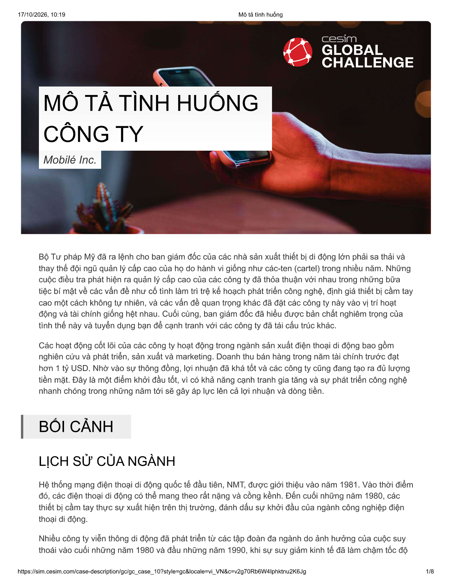
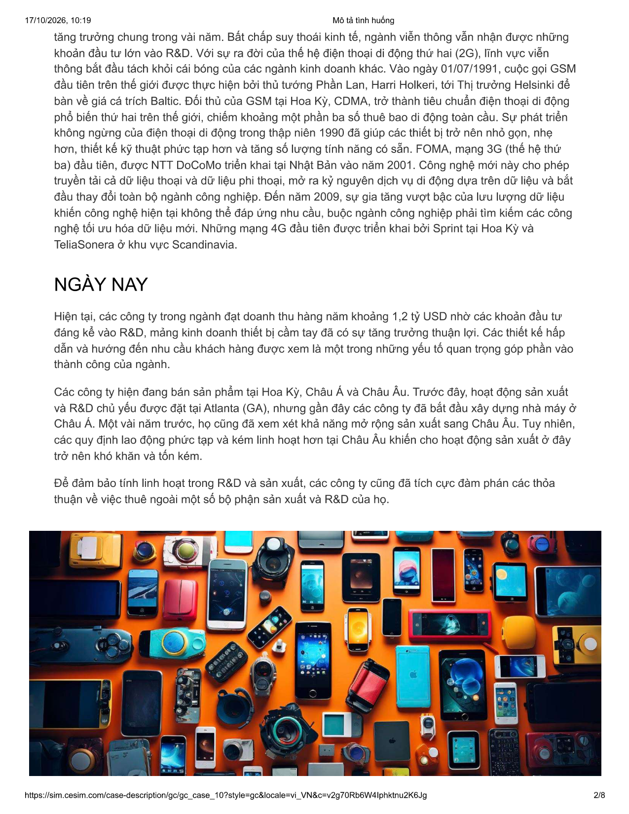
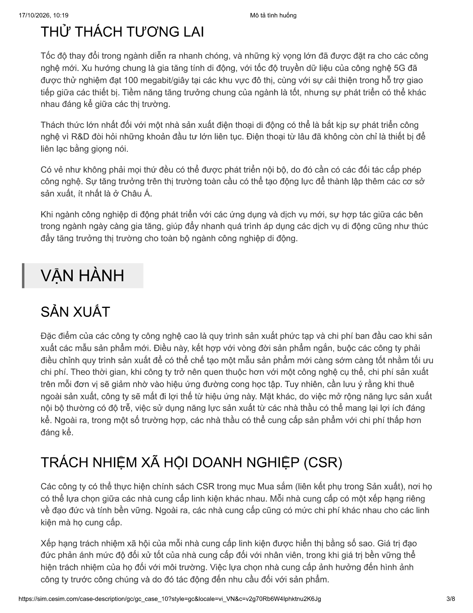
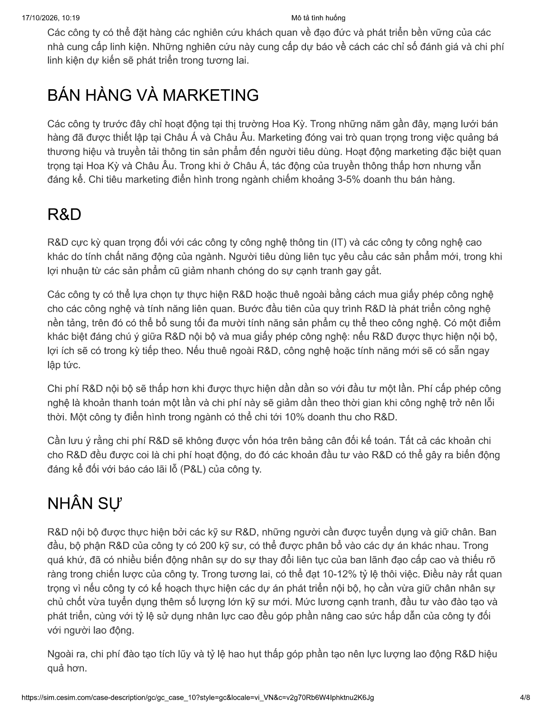
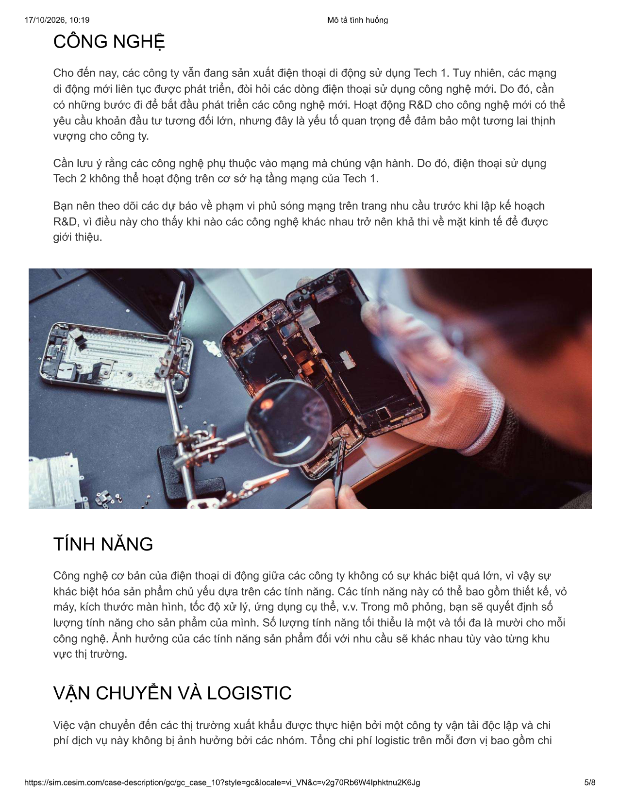
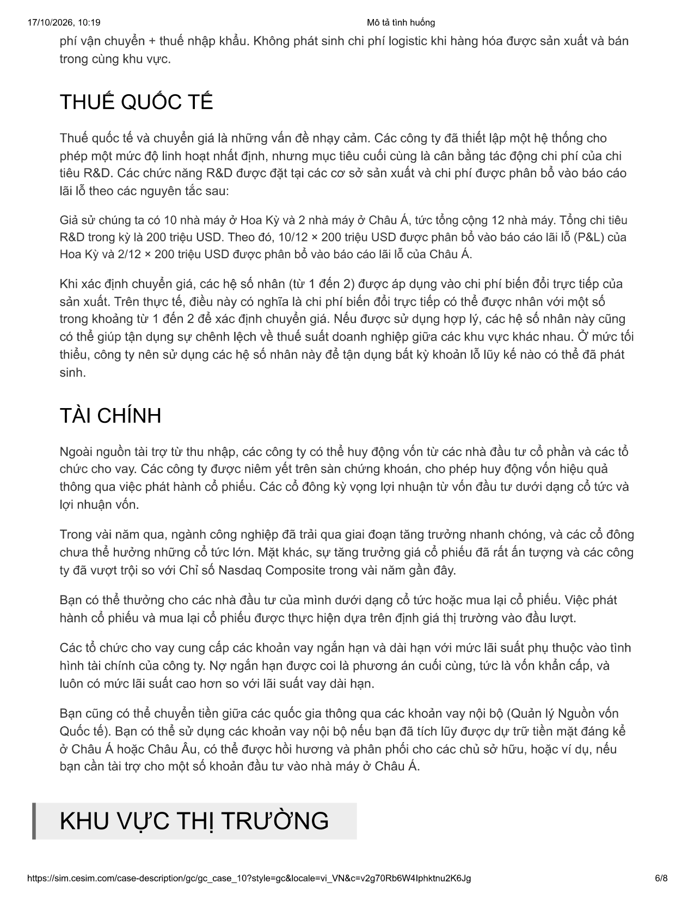
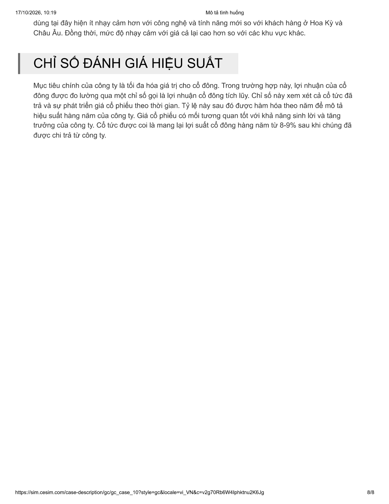
Bảng Hồ Sơ Khởi Điểm Của Mobilé Inc. (Kết thúc Round 0 / Đầu Round 1)
Phân hệ (Module) |
Thông số khởi điểm tại Round 0 (Giống nhau 100% cho cả 6 đội) |
Ý nghĩa quản trị cốt lõi |
|---|---|---|
Income statement (Doanh thu & Lợi nhuận) |
• Revenue (Doanh thu Vòng 0): $1,208,051 kUSD (~1.21 tỷ USD)• Operating profit before depreciation (EBITDA): $370,559 kUSD (30.67%)• Operating profit (EBIT): $222,059 kUSD• Profit for the round (Net Profit): $149,007 kUSD |
Công ty đang có lãi tốt và dòng tiền khỏe, nhưng cấu trúc chuỗi cung ứng còn lệch hoàn toàn về USA. |
Market reports (Thị phần & Sản lượng 3 Khu vực) |
Chia đều 16 ≈ 16.67% thị phần tại mỗi khu vực: • USA (Hoa Kỳ): Bán 1,204k units / Tổng cầu 7,223k units (Price = $280 USD, 2 features, Promotion = $5,580k)• Asia (Châu Á): Bán 2,006k units / Tổng cầu 12,038k units (Price = 2,000 RMB ≈ $246.87, 2 features, Promotion = $16,000k)• Europe (Châu Âu): Bán 1,739k units / Tổng cầu 10,433k units (Price = 150 EUR ≈ $209.57, 2 features, Promotion = $7,600k)• Tổng bán toàn cầu Vòng 0: 4,949k units / Tổng thị trường 29,694k units. |
Asia là thị trường có sản lượng lớn nhất (40.5% tổng cầu toàn cầu), tiếp theo là Europe (35.1%) và USA (24.3%). |
Production & Inventory (Nhà máy & Tồn kho) |
• USA: 12 plants (Nhà máy) × 550k units/plant = 6,600k units/year. Vòng 0 chạy 81.0% công suất (5,346k units, Scrap = 1.66%, Unit cost = $79.4/unit).• Asia: 0 plants (Capacity = 0).• Europe: Không có chức năng xây nhà máy (chỉ là thị trường tiêu thụ).• Beginning inventory đầu Vòng 1 tại USA: 457k units Tech 1 (Asia = 0). |
(Lưu ý: Trang Overview hiển thị 72 nhà máy là tổng của 6 đội × 12 nhà máy/đội). Toàn bộ hàng bán ở Asia và Europe đầu game đều phải xuất khẩu từ USA! |
HR (Nhân sự R&D) |
• Personnel (Biên chế): 200 kỹ sư tại USA × 250 person-days/year = 50,000 person-days/round.• Monthly wage: $4,000 • Monthly training budget: $300 • Voluntary turnover: 7.0%.• Total HR costs Vòng 0: $15,890 kUSD ($318 / person-day). |
Mỗi kỹ sư cung cấp đúng 250 person-days/round (ngày công/lượt). Chi phí R&D nội bộ chỉ khoảng $317–$343/person-day. |
R&D (Nền tảng Công nghệ) |
• Tech 1: Đã hoàn thiện 100% nền tảng + có sẵn 2 features (tính năng) ở đầu Vòng 1 (cần thêm 24,812 person-days ở Vòng 1 để lên Feature 3, và ở Vòng 2 cần 42,026 person-days để lên Feature 4).• Tech 2: Đầu Vòng 1 mới có ~7.23% tiến độ (cần 256,408 person-days hoặc $150,000k mua License để mở khóa Tech 2 + 1 feature; sang Vòng 2 sau khi đã mua License Tech 2 + 1 feature, để lên Feature 2 của Tech 2 cần 70,371 person-days).• Tech 3: Tiến độ 0% (cần ~538,903 person-days nội bộ từ đầu, hoặc $480,000k License ở Vòng 2).• Tech 4: Tiến độ 0% (ở Vòng 2 cần 722,566 person-days nội bộ). |
Mỗi công nghệ có thể nâng cấp tối đa 10 features (tính năng). Khách hàng chỉ mua công nghệ mới khi khu vực đó đã có độ phủ sóng mạng lưới (Network coverage). |
Finance & Ratios (Tài chính & Cổ phiếu) |
• Number of shares: 30,000k shares (nghìn cổ phiếu).• Share price khởi điểm (P0): $175.51 USD (Market cap = $5,265,300k).• Cash and cash equivalents đầu Vòng 1: $129,999 kUSD (toàn bộ tại USA).• Long-term debt: $509,789 kUSD. |
Equity ratio (Tỷ lệ vốn chủ sở hữu) khởi điểm rất lành mạnh (53.80%). |
1.2. Công thức chấm điểm chiến thắng tối thượng: Cumulative total shareholder return (p.a.), % (TSR %/năm)
Winning Metric): Trò chơi KHÔNG chấm điểm theo doanh thu hay thị phần đơn thuần, mà xếp hạng các đội dựa trên dòng cuối cùng trong tab Results > Ratios: Cumulative total shareholder return (p.a.), % (Tổng lợi nhuận cổ đông tích lũy hàng năm, %) vào cuối vòng chơi cuối cùng.Theo trang 39 của tài liệu hướng dẫn chính thức (Decision-making guide), công thức toán học chính xác của chỉ số này là:
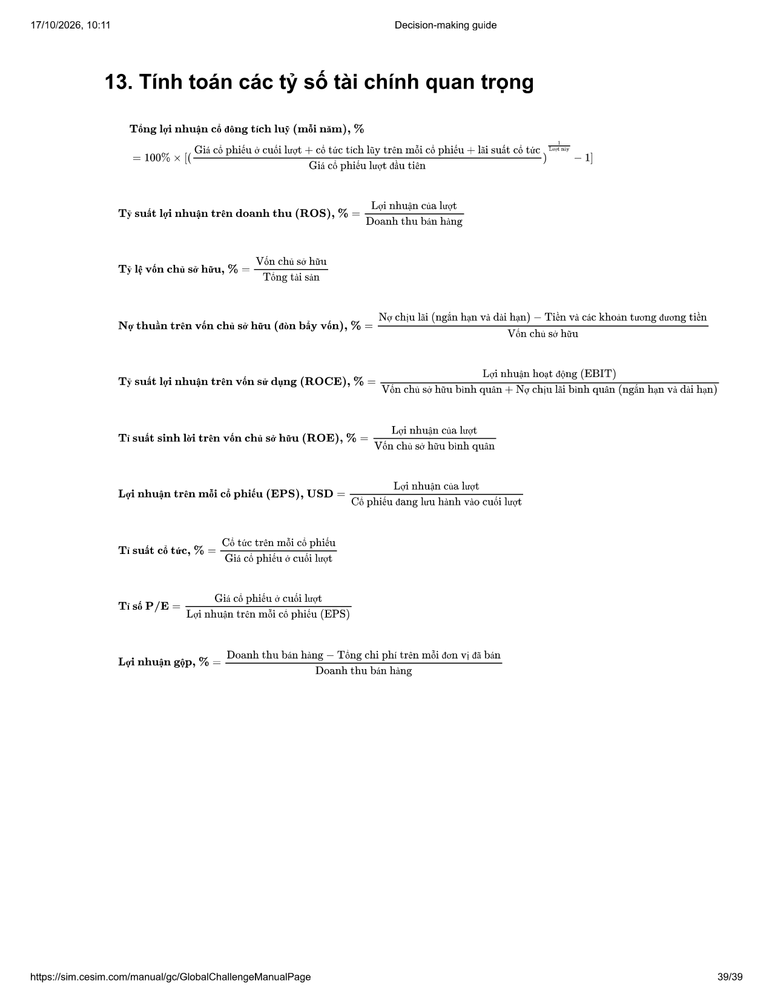
Giải mã 3 động cơ đẩy Cumulative TSR lên đỉnh:
Share price, USD(Pt — Giá cổ phiếu cuối lượt): Được định giá bởi thuật toán của Cesim dựa trên:•Earnings per share (EPS), USD(Lợi nhuận ròng trên mỗi cổ phiếu): EPS = Profit for the roundNumber of shares. Tăng lợi nhuận ròng và Mua lại cổ phiếu (Share repurchase, k shares) để giảm mẫu số sẽ trực tiếp đẩy EPS và giá cổ phiếu tăng vọt.• Tốc độ tăng trưởng doanh thu & thị phần bền vững qua các vòng.• Hiệu quả sử dụng vốn (ROE,ROCE) và Chi phí vốn bình quân gia quyền (WACC): WACC đạt mức thấp nhất (tối ưu hóa định giá cổ phiếu) khiEquity ratio, %(Tỷ lệ vốn chủ sở hữu) nằm trong khoảng40% – 60%.Cumulative dividends per share(∑ Di — Cổ tức tích lũy trên mỗi cổ phiếu): Tiền mặt nằm chết trong két sắt công ty (vượt quá nhu cầu đầu tư nhà máy và đệm thanh khoản) sẽ làm phình mẫu sốTotal assets, kéo tụtROCE/ROE. Chia cổ tức (Dividend, k USD) đưa tiền trực tiếp vào tử số của công thức TSR.Interest on dividends(Lãi suất cổ tức — Vũ khí bí mật): Mọi đồng cổ tức đã trả cho cổ đông ở các vòng trước đều được hệ thống tự động cộng thêm lãi kép8% – 9%/nămcho cổ đông kể từ thời điểm chi trả! Do đó, bắt đầu trả cổ tức đều đặn từ giữa game (khi đã hoàn tất đầu tư nhà máyAsia) sẽ tạo ra hiệu ứng lãi kép cực lớn ở tử số TSR.
1.3. Kiến trúc Decisions area (Khu vực cá nhân vs. Cột chính thức của nhóm Green)
Một sai lầm rất phổ biến của người mới chơi Cesim là nhập số liệu xong nhưng quên đồng bộ sang Cột Quyết Định Nhóm (Green). Hãy nắm vững kiến trúc 2 tầng của hệ thống trên trang Decisions > Decision checklist:
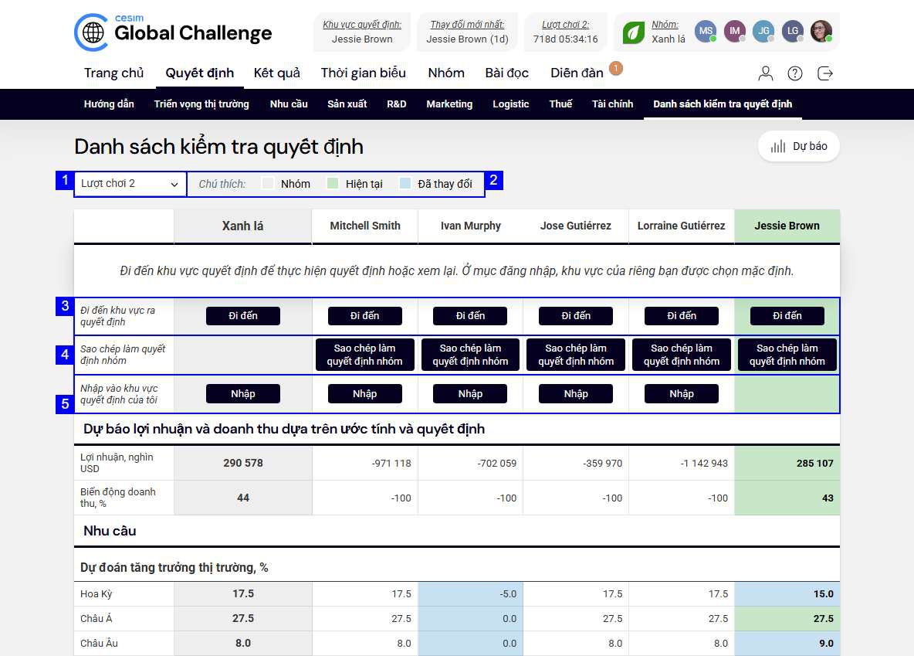
- Khi bạn vừa đăng nhập vào hệ thống (
https://sim.cesim.com/ul/...): Hãy nhìn lên góc trên cùng bên trái màn hình tại ôDecisions area:(Khu vực quyết định). Mặc định hệ thống đặt bạn ở khu vực cá nhân của riêng bạn (ví dụ:Decisions area: Anh Ha,Dung Nguyen,Dai Pham Tran Quoc,Anh Tran). Mọi con số bạn gõ vào các tab lúc này chỉ là bản nháp thử nghiệm cá nhân của bạn, chưa phải là quyết định chính thức của nhóm! - Khi hết giờ (
Round deadline): Máy chủ Cesim CHỈ CHẤM ĐIỂM CỘT ĐẦU TIÊN BÊN TRÁI MANG TÊNGreen(Team's decision column) trong tabDecision checklist! - Ý nghĩa của 3 hàng nút bấm trên trang
Decisions > Decision checklist(xem chú thích[3],[4],[5]trên hình):•[3]HàngSwitch decision area→ NútGo(Đi đến): Chuyển màn hình làm việc hiện tại của bạn sang xem/sửa trực tiếp khu vực của một thành viên khác hoặc bấmGongay dưới cộtGreenđể vào sửa trực tiếp trên bản quyết định chính thức của nhóm.•[4]HàngCopy as team's decisions→ NútCopy(Sao chép làm quyết định nhóm): Đẩy toàn bộ bộ số từ cột cá nhân của một thành viên sang ghi đè 100% lên cộtGreencủa nhóm. (Chỉ bấm nútCopyở cột của người nào đã nhập hoàn chỉnh tất cả các tab!)•[5]HàngImport to my decision area→ NútImport(Nhập): Kéo bộ số từ cộtGreen(hoặc của bạn cùng nhóm) về khu vực cá nhân của bạn để tính toán/thử nghiệm thêm mà không làm ảnh hưởng đến bản chốt của nhóm.
PHẦN 2: DEEP RESEARCH — GIẢI MÃ CƠ CHẾ TOÁN HỌC & KINH TẾ CỦA 8 PHÂN HỆ TRÊN WEB
2.1. Tab Demand: Hàm cầu 3 tầng (3-Step Demand Funnel) & Bảng số liệu chính xác Network coverage forecast (Round 0–12)
Trong Cesim Global Challenge, nhu cầu khách hàng không phân bổ ngẫu nhiên mà được tính toán theo Mô hình Phễu 3 Tầng (3-Step Funnel) tại từng khu vực (USA, Asia, Europe):
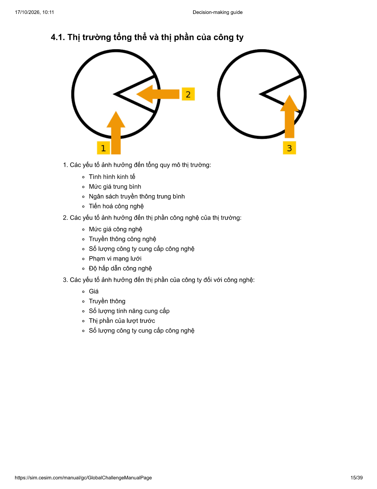
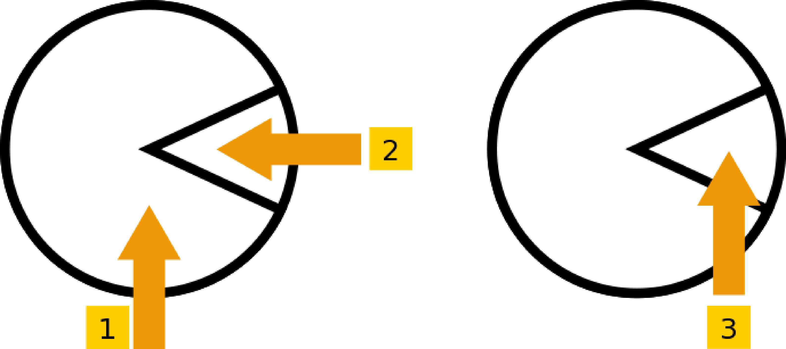
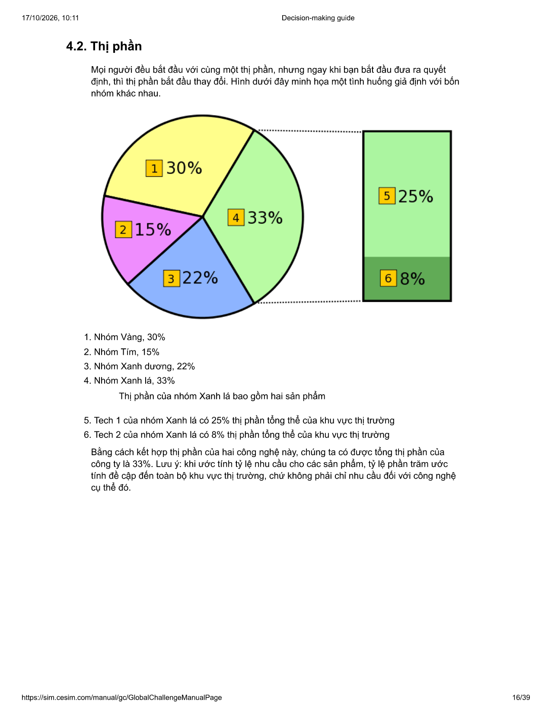
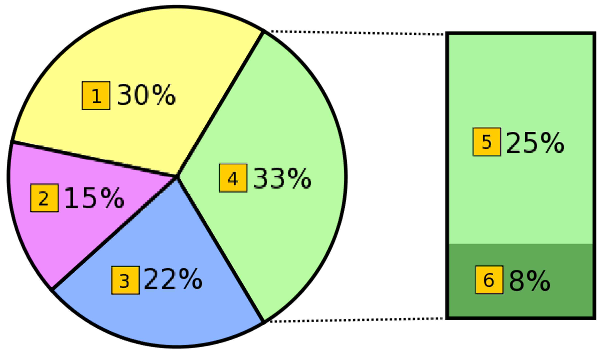
- Tầng 1 —
Total market demand(Tổng nhu cầu thị trường khu vực):• Được dẫn dắt bởi tốc độ tăng trưởng kinh tế vĩ mô (công bố trong tabDecisions > Market outlookđầu mỗi vòng), mức giá trung bình toàn ngành, tổng chi tiêu quảng cáo toàn ngành và sự ra đời của các thế hệ công nghệ mới. - Tầng 2 —
Technology Split(Phân chia nhu cầu giữa 4 thế hệ Công nghệ:Tech 1,Tech 2,Tech 3,Tech 4):• Điều kiện cần (Hard Constraint):Network coverage forecast, %(Dự báo phạm vi mạng lưới). Điện thoại thế hệ mới (ví dụTech 2) không thể hoạt động trên mạng lưới cũ (Tech 1). Nếu độ phủ sóng mạng của một Tech tại khu vực đó bằng0%, nhu cầu của Tech đó chắc chắn bằng0. Nếu độ phủ sóng mạng là35%, tối đa chỉ khoảng35%khách hàng khu vực đó có thể sử dụng công nghệ ấy. - Tầng 3 —
Market shares(Thị phần của từng công ty):• > ⚠️ CẢNH BÁO QUAN TRỌNG KHI NHẬP LIỆU TRÊN TABDemand: Trong bảngMarket sharesở tabDemand, con số%bạn nhập vào cộtEstimate for this round, %cho mỗi sản phẩm là tỷ lệ % so với TỔNG NHU CẦU CỦA TOÀN BỘ THỊ TRƯỜNG KHU VỰC ĐÓ (Total market demandcộng gộp tất cả các công nghệ), chứ không phải % trong riêng một nhánh công nghệ! (Xem hình trang 16 ở trên: Công ty có tổng thị phần33%toàn thị trường, được tạo bởi25%từ Sản phẩm 1 +8%từ Sản phẩm 2).• 6 Biến số quyết định Thị phần thực tế của đội bạn so với 5 đối thủ:▸Price(Giá bán) ở tabMarketingso với giá trung bình của các đối thủ cùng bán công nghệ đó.▸Number of features(Số lượng tính năng, từ1đến10) gắn vào sản phẩm ở tabMarketing.▸Promotion, k USD(Ngân sách quảng cáo/truyền thông) ở tabMarketing— có cả tác động tức thời trong vòng hiện tại và hiệu ứng thương hiệu tích lũy sang các vòng sau.▸Last round, %(Thị phần thực tế của lượt trước) — hiệu ứng quán tính khách hàng.▸Sustainability&Ethics(CSR) của các nhà cung cấp linh kiện đang tích chọn ở tabProduction > Procurement.▸ Số lượng đối thủ cạnh tranh cùng bán công nghệ đó.
📊 Bảng Số Liệu Chính Xác 100% Biểu Đồ Network coverage forecast, % (Round 0 → Round 12) Đào Từ Mã Nguồn Chart.create Trên Web
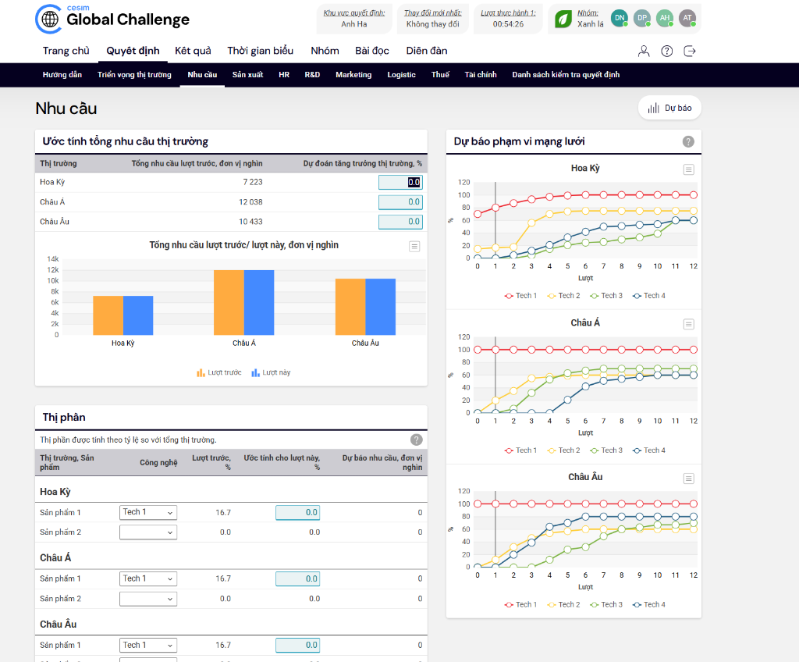
Thay vì phải nhìn ước lượng bằng mắt thường trên biểu đồ đường, dưới đây là bảng thông số % độ phủ sóng mạng lưới chính xác tuyệt đối từ Round 0 đến Round 12 được trích xuất trực tiếp từ chuỗi JSON Chart.create(...) trên trang Decisions > Demand của cổng sim.cesim.com:
Khu vực & Công nghệ (Area & Tech) |
R0 | R1 | R2 (Hiện tại) | R3 | R4 | R5 | R6 | R7 | R8 | R9 | R10 | R11 | R12 | Quy luật Chiến lược Chọn 2 Công nghệ Chủ lực (Max 2 Techs / Area) |
|---|---|---|---|---|---|---|---|---|---|---|---|---|---|---|
🇺🇸 USA — Tech 1 |
70% |
80% |
87% |
93% |
97% |
99% |
100% |
100% |
100% |
100% |
100% |
100% |
100% |
Giữ vai trò "Bò sữa" (Cash Cow) từ R1 đến R5. |
🇺🇸 USA — Tech 2 |
15% |
17% |
18% |
56% |
70% |
74% |
75% |
75% |
75% |
75% |
75% |
75% |
75% |
Đứng ở 18% tại R2 rồi nhảy vọt gấp 3 lần lên 56% ở R3 và 70% ở R4! |
🇺🇸 USA — Tech 3 |
0% |
0% |
0% |
5% |
15% |
21% |
25% |
26% |
30% |
33% |
39% |
60% |
60% |
Rất yếu tại Mỹ suốt R1–R10 (0% ở R2, 5% ở R3). Không ưu tiên bán Tech 3 ở Mỹ giai đoạn đầu! |
🇺🇸 USA — Tech 4 |
0% |
0% |
5% |
12% |
21% |
33% |
42% |
50% |
51% |
53% |
54% |
60% |
60% |
Bắt đầu mở sóng ở Mỹ từ R2 (5%) → R4 (21%) → R6 (42%). Tổ hợp Mỹ tối ưu: R1 (T1), R2–R5 (T1 + T2), R6+ (T2 + T4). |
🌏 Asia — Tech 1 |
100% |
100% |
100% |
100% |
100% |
100% |
100% |
100% |
100% |
100% |
100% |
100% |
100% |
Phủ sóng 100% toàn bộ 12 vòng — nguồn sản lượng khổng lồ tại Châu Á. |
🌏 Asia — Tech 2 |
0% |
20% |
35% |
55% |
57% |
59% |
60% |
60% |
60% |
60% |
60% |
60% |
60% |
Tăng rất mạnh ở R2 (35%) và R3 (55%)! Bắt buộc bán mạnh Tech 2 ở Châu Á ngay từ R2! |
🌏 Asia — Tech 3 |
0% |
0% |
7% |
32% |
53% |
63% |
67% |
70% |
70% |
70% |
70% |
70% |
70% |
Bùng nổ tại Châu Á từ R3 (32%) và R4 (53%) lên 70%! |
🌏 Asia — Tech 4 |
0% |
0% |
0% |
0% |
0% |
21% |
42% |
51% |
54% |
57% |
60% |
60% |
60% |
Bằng 0% hoàn toàn suốt R1–R4 tại Châu Á. Tổ hợp Châu Á tối ưu: R1 (T1), R2–R3 (T1 + T2), R4+ (T1/T2 + T3). |
🇪🇺 Europe — Tech 1 |
100% |
100% |
100% |
100% |
100% |
100% |
100% |
100% |
100% |
100% |
100% |
100% |
100% |
Phủ sóng 100% xuyên suốt 12 vòng. |
🇪🇺 Europe — Tech 2 |
0% |
12% |
32% |
46% |
54% |
57% |
60% |
60% |
60% |
60% |
60% |
60% |
60% |
Tăng gần gấp 3 lần ở R2 (từ 12% lên 32%) và đạt 46% ở R3! |
🇪🇺 Europe — Tech 3 |
0% |
0% |
0% |
0% |
12% |
28% |
32% |
49% |
60% |
63% |
67% |
67% |
70% |
Bằng 0% suốt R1–R3 tại Châu Âu. |
🇪🇺 Europe — Tech 4 |
0% |
0% |
20% |
39% |
64% |
70% |
80% |
80% |
80% |
80% |
80% |
80% |
80% |
Châu Âu là thánh địa của Tech 4: R2 đã có 20%, R3 lên 39%, R4 vọt lên 64% và R6 đạt 80%! Tổ hợp Châu Âu tối ưu: R1 (T1), R2–R3 (T1 + T2), R4+ (T2 + T4). |
2.2. Tab Production > Planning: Đường cong chi phí hình chữ U (Capacity Utilization) & Đường cong học tập (Learning Curve)
Chi phí sản xuất biến đổi trên mỗi đơn vị sản phẩm (Unit cost, USD trên tab Production > Planning) được quyết định bởi 2 quy luật toán học:
Quy luật 1: Đường cong Hệ số nhân Chi phí hình chữ U theo Công suất (U-Shaped Capacity Utilization Curve)
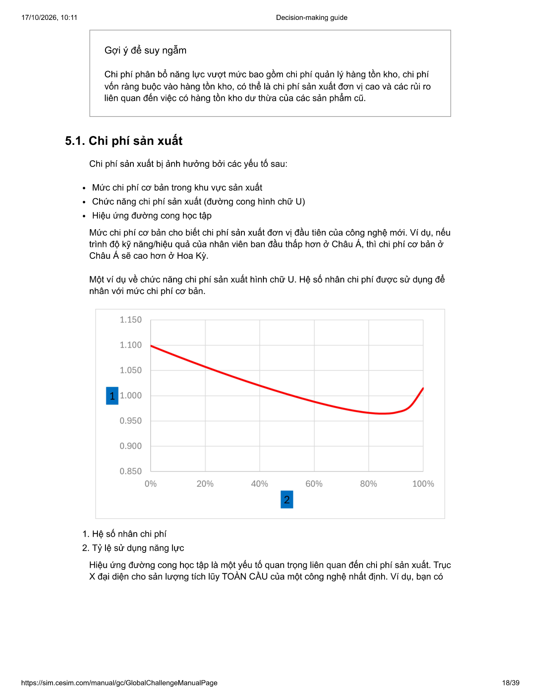
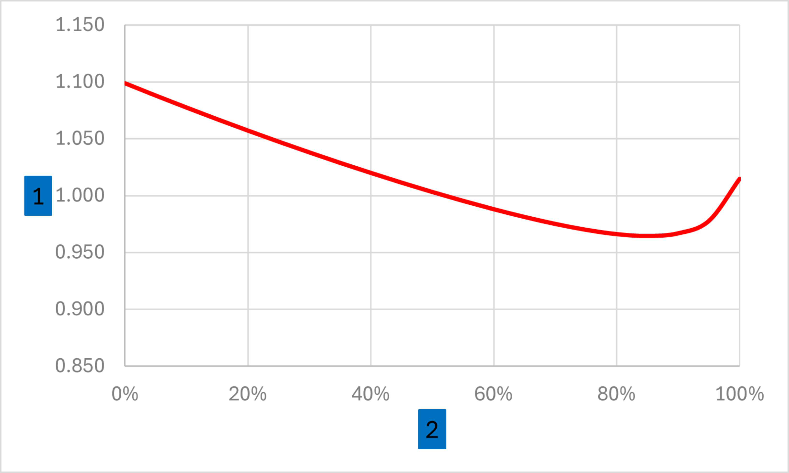
- Trục tung
[1]là Hệ số nhân chi phí (Cost Multiplier), trục hoành[2]là Tổng tỷ lệ phân bổ năng lực sản xuất (Capacity allocation %củaProduct line 1 + Product line 2) tại khu vực đó:• Khi chạy công suất thấp (0% – 40%), hệ số nhân rất cao (1.100xgiảm dần về1.020x).• Khi chạy ở mức50%, hệ số nhân bằng đúng1.000x.• ĐÁY TỐI ƯU (Sweet Spot) nằm ở vùng công suất80% – 92%: Hệ số nhân giảm xuống mức thấp nhất~0.963x(giúp tiết kiệm gần4%chi phí sản xuất biến đổi trên mỗi máy!).• Vùng quá tải (93% – 100%): Đường cong vòng ngược lên thành hình chữ U. Tại95%hệ số vẫn rất tốt (~0.975x), nhưng từ96%lên100%hệ số vọt nhanh từ0.980xlên1.015x. - Quy tắc thực chiến: Luôn ưu tiên vận hành tổng công suất nhà máy ở vùng
85% – 98%. Chỉ ép lên99% – 100%khi nhu cầu thị trường vượt quá công suất và biên lợi nhuận gộp của mỗi máy bán thêm (+$100 đến +$180/máy) lớn hơn nhiều so với phần chi phí tăng thêm (~$3–$4/máy).
Quy luật 2: Đường cong Học tập Toàn cầu (Global Learning Curve) — Điểm giao cắt chiến lược giữa USA và Asia
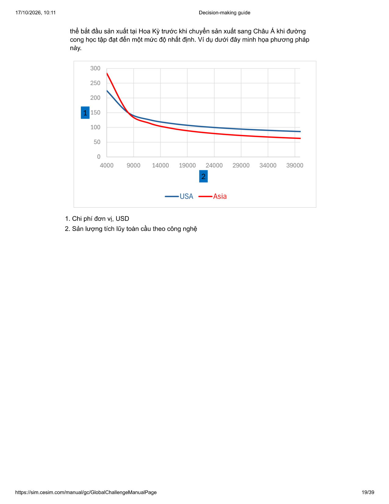
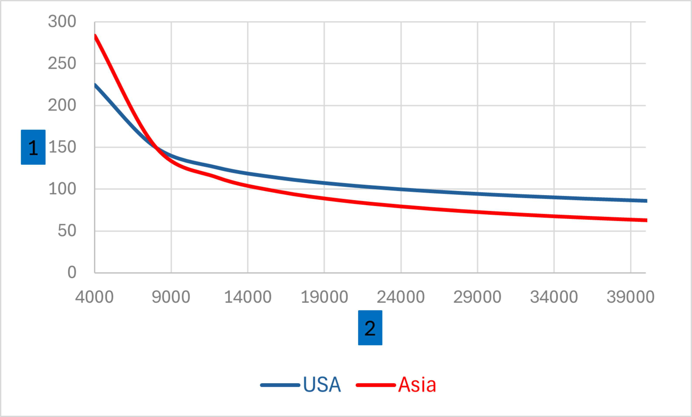
- Trục tung
[1]là Chi phí sản xuất đơn vị (Unit cost, USD), trục hoành[2]là Tổng sản lượng sản xuất nội bộ tích lũy trên TOÀN CẦU (Global Cumulative Production, k units) của công ty bạn đối với công nghệ đó. - Sự thật chiến lược cực kỳ quan trọng từ đồ thị:• Khi mới bắt đầu sản xuất một công nghệ mới (sản lượng tích lũy toàn cầu
< 8,500k units): Đường màu xanh dương (USA) nằm THẤP HƠN đường màu đỏ (Asia)! Ở mốc4,000k units, sản xuất tạiUSAchỉ tốn~$225/unittrong khi sản xuất tạiAsiatốn tới~$285/unit(và tỷ lệ phế phẩmScrap, %ởAsiacao gấp đôiUSA!).• Khi sản lượng tích lũy toàn cầu vượt qua điểm giao cắt~8,500k – 9,000k units: Đường màu đỏ (Asia) cắt xuống và nằm THẤP HƠN đường màu xanh dương (USA) vĩnh viễn! Từ mốc14,000kđến39,000kmáy (nhưTech 1ngay từ đầu game, vàTech 2sau 2 vòng sản xuất), chi phí sản xuất tạiAsiarẻ hơnUSAtừ$15 đến $25/unit!• Phát hiện Quan trọng Đào Từ Mã Nguồn TabProduction > PlanningVòng 2 (Asia Contract Manufacturing Unlock): Ngay cả ở Vòng 1–2 khi công ty chưa có nhà máy nội bộ nào xây xong ở Châu Á (Asia Plants = 0), khi chọnTech 1(hoặcTech 2) trong hộp chọnIn-house manufacturing > Asia, Product line 1(trên cổngsim.cesim.comđầu Vòng 2 hiện tại, cả cộtGreenlẫn 4 thành viên đều đã chọn sẵnTech 1choAsia, Product line 1), hệ thống mở khóa ngay ô nhậpContract manufacturing, k unitstạiAsia(tối đa1,090k unitsở Vòng 2 với giá$148.9/unitchoTech 1)! Hàng gia công tạiAsianày được bán thẳng cho khách hàng Châu Á với$0phí vận chuyển và$0thuế quan (tiết kiệm trọn$27/unitphí ship + thuế quan từ Mỹ sang Á!). Trong Vòng 1, hai độiBluevàRedđã dùng chính thủ thuật này để thuê gia công1,000kmáyTech 1ngay tạiAsia!
2.3. Tab Production > Investments: Độ trễ xây dựng 2 vòng (Construction Lag) & Độ trễ thanh toán 1 vòng (Payment Lag)
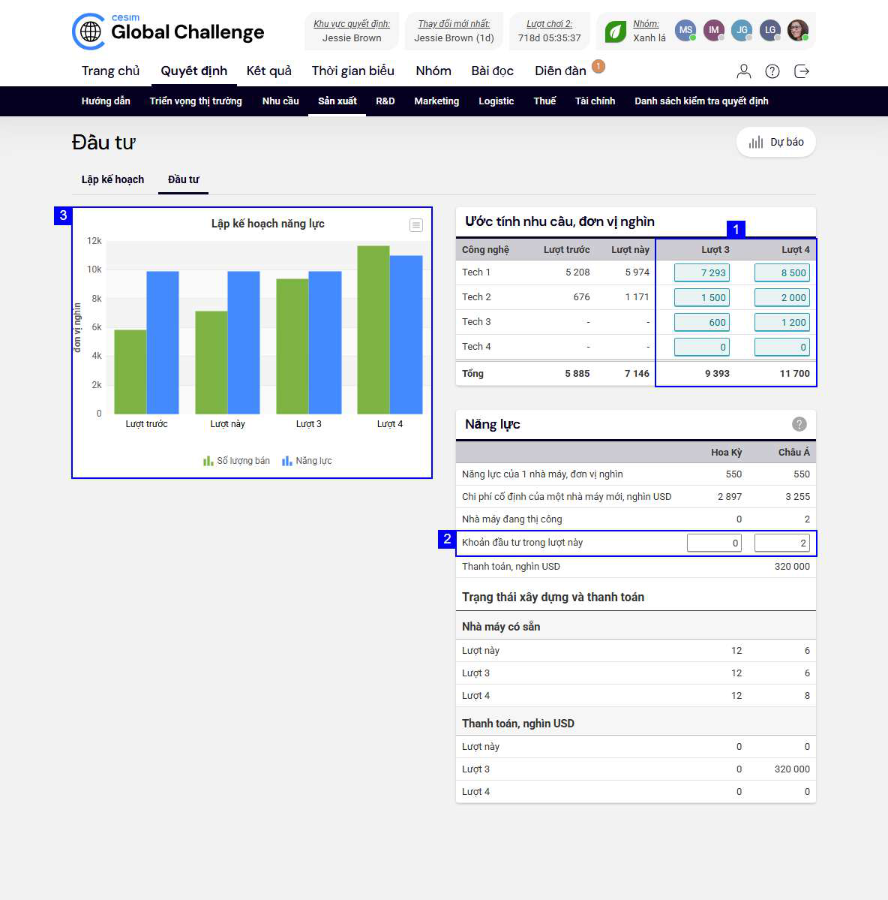
Mỗi nhà máy tại USA hoặc Asia có công suất thiết kế cố định là 550k units/round với chi phí đầu tư (Cost of a new plant, k USD) ở Vòng 2 là $140,000 kUSD tại USA và $160,000 kUSD tại Asia. Khi nhập số vào ô New plant investments, units trên tab Production > Investments, bạn bắt buộc phải nắm rõ Cơ chế Độ trễ Kép hiển thị trong bảng Number of plants:
| Thời điểm | Dòng trạng thái trên bảng Number of plants (Investments) |
Dòng tiền Thanh toán (Plant investments, k USD) |
Tác động lên Khấu hao (Depreciation) & Chi phí cố định (Administration) |
|---|---|---|---|
| Round $t$ (Lượt gõ số vào ô New plant investments, units) |
Chưa hiển thị trong Available hay Under construction của Round $t$ |
$0 kUSD(Chưa phải trả tiền trong Round $t$!) |
Chưa phát sinh khấu hao và chi phí hành chính nhà máy mới trong Round $t$. |
| Round $t+1$ (Sau 1 vòng — Ví dụ Vòng 2 hiện tại đối với 2 xưởng Châu Á đặt ở Vòng 1) |
Plants under construction( Nhà máy đang thi công = 2 tại Asia — Chưa sản xuất được!) |
Bị trừ tiền mặt $160,000 kUSD / plant (2 xưởng Asia = $320,000 kUSD trừ trực tiếp vào Quỹ tiền mặt của Công ty con Asia và hiện ở dòng Capital expenditures trên Báo cáo Lưu chuyển Tiền tệ hợp nhất Toàn cầu Vòng 2!) |
Chưa sản xuất được nhưng tiền mặt tại khu vực xây nhà máy bị trừ ở Round $t+1$. |
| Round $t+2$ (Sau 2 vòng — Ví dụ Vòng 3 đối với 2 xưởng Châu Á đặt ở Vòng 1) |
Plants available for production( Nhà máy có sẵn tăng thêm +2 tại Asia — Chính thức chạy!) |
$0 kUSD |
Cộng thêm +550k công suất/nhà máy (2 xưởng = +1,100k units), bắt đầu tính khấu hao (15.0%/năm số dư giảm dần) và chi phí cố định hàng năm. |
- Kinh tế quy mô về Chi phí cố định của Nhà máy mới (
Fixed cost of a new plant, k USD):• Ở Vòng 1 (khiAsiacó0nhà máy), nhà máy đầu tiên tạiAsiacó chi phí cố định cơ sở là$6,000 kUSD/năm(Administration > Base cost per plant, k USD = $6,000ktrên tabMarket outlook > Parameters).• Sang Vòng 2 hiện tại (khi độiGreenđã có2nhà máyAsiađang thi công), bảngInvestmentstrên web hiển thịFixed cost of a new plant, k USDlà$2,897 kUSD/nămtạiUSA(đang có 12 nhà máy) và$5,223 kUSD/nămtạiAsia(đang có 2 nhà máy thi công) — nhờ hệ số nhân giảm dần theo số lượng nhà máy!
2.4. Tab Production > Inventory & Procurement: Hạch toán FIFO & Bẫy phạt 50% nhà cung cấp (Suppliers)
- Bí mật Cơ chế Hàng tồn kho (
Production > Inventory):• Nguyên tắc hạch toán làFIFO(Nhập trước - Xuất trước): Hàng tồn kho đầu kỳ (Beginning inventory) được xuất bán trước, sau đó mới bán đến hàng sản xuất mới trong kỳ. Giá trị tồn kho cuối kỳ (Ending inventory, k USD) được tính theo chi phí sản xuất đơn vị của lô mới sản xuất trong kỳ.• Điểm đặc biệt của Cesim: Hàng nằm trong kho chỉ là "Máy cơ sở" (Base Productstheo từng Công nghệTech 1..4), chưa gắn tính năng (Features)! Tính năng chỉ được lắp ráp bổ sung khi sản phẩm được xuất bán tại tabMarketing. Ví dụ:264k unitsTech 2đang nằm trong khoUSAtừ kết quả Vòng 1 (đơn giá tồn kho cuối Vòng 1 =$350.94/unit, tổng giá trị$92,647ktrên cả bảngInventory > Last round (R1)lẫnBalance sheetVòng 1; sang kế hoạch Vòng 2 hiện tại trên web,264kmáy cũ được xuất bán trước theo FIFO và259kmáy sản xuất mới tồn cuối Vòng 2 có giá vốn bình quân$238.6/unit=$61,704k) có thể được gắn1tính năng để bán ra ở bất kỳ thị trường nào trong Vòng 2! - Bảng Thông Số Thực Tế 5 Nhà Cung Cấp Linh Kiện Trên Tab
Production > Procurement(Đào Trực Tiếp Từ Web Vòng 2):• Trên đầu trangProcurementVòng 2 ghi rõ 3 quy tắc cứng:▸The number of suppliers needed(Số lượng nhà cung cấp cần thiết):2▸Cost of choosing a new supplier, k USD(Chi phí chọn nhà cung cấp mới):$1,000 kUSD▸Component cost penalty for lacking suppliers(Hình phạt chi phí linh kiện do thiếu nhà cung cấp):50%(Nếu tích chọn< 2nhà cung cấp, đơn giá linh kiện bị nhân1.5x!)• Dưới đây là bảng thông số chính xác của cả 5 nhà cung cấp trên cổngsim.cesim.comở Vòng 2 (khi độiGreenđang tích chọn 3 nhà cung cấpMaterialistic Masters,Colossal Components,Innovation Redesigned, tổng sản lượng6,534kmáy chia đều2,178k units/NCC):
Tên Nhà cung cấp trên Web (Supplier) |
Đạo đức (Ethics / 5⭐) |
Bền vững (Sustainability / 5⭐) |
Tổng điểm CSR (This round / 10⭐) |
Xu hướng Vòng sau (Next round khi mua Study) |
Đơn giá Vòng 2 (Unit cost, USD) |
Trạng thái đang chọn (Active trên Web Vòng 2) |
Sản lượng phân bổ (Purchases, k units) |
Thành tiền (Total cost, k USD) |
|---|---|---|---|---|---|---|---|---|
Materialistic Masters |
4.0 / 5 ⭐ |
5.0 / 5 ⭐ |
9.0 / 10 (Cao #1) |
— |
$40.0 / unit |
✅ Checked (Active) |
2,178k |
$87,120k |
Colossal Components |
1.5 / 5 ⭐ |
2.5 / 5 ⭐ |
4.0 / 10 (Thấp) |
⬆️ Ethics Tăng / ➡️ Sust. Giữ nguyên / ⬆️ Cost Tăng |
$25.0 / unit (Rẻ #1) |
✅ Checked (Active) |
2,178k |
$54,450k |
Quantum Quirks |
1.5 / 5 ⭐ |
2.0 / 5 ⭐ |
3.5 / 10 (Thấp nhất) |
— |
$35.0 / unit |
⬜ Unchecked | 0 |
$0 |
Fusion Dynamics |
5.0 / 5 ⭐ |
3.0 / 5 ⭐ |
8.0 / 10 (Cao #2) |
— |
$40.0 / unit |
⬜ Unchecked | 0 |
$0 |
Innovation Redesigned |
3.0 / 5 ⭐ |
4.0 / 5 ⭐ |
7.0 / 10 (Tốt & Rẻ) |
— |
$35.0 / unit |
✅ Checked (Active) |
2,178k |
$76,230k |
TỔNG CỘNG (Total / Average) |
— | — | Trung bình 6.67 / 10 |
— | Bình quân $33.3 / unit |
Đủ 3 NCC (≥ 2) |
6,534k units |
$217,800k (+ $500k nếu tích Order a study) |
2.5. Tab HR & R&D: Kinh tế học Kỹ sư (Person-days) & Phát triển nội bộ (In-house) vs. Mua bản quyền (Licences)
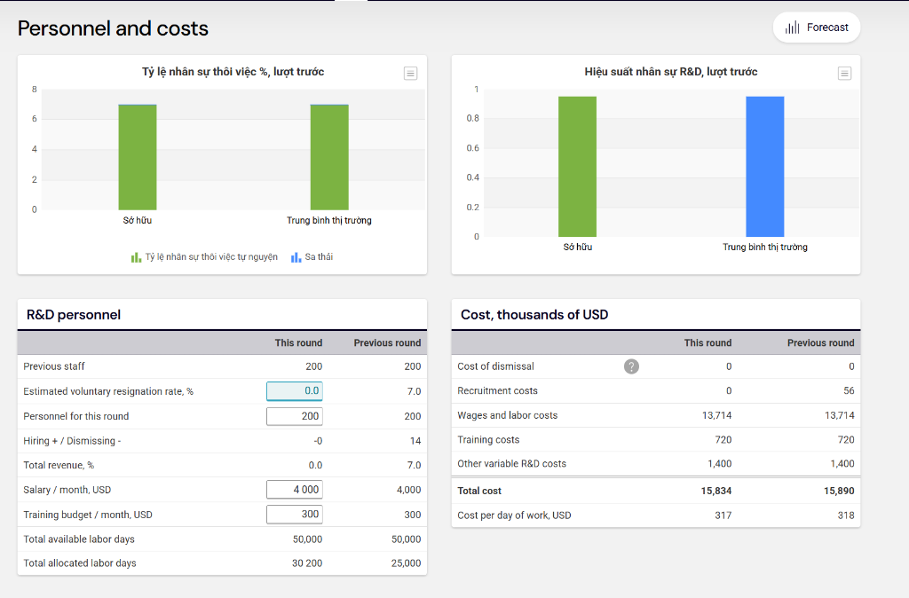
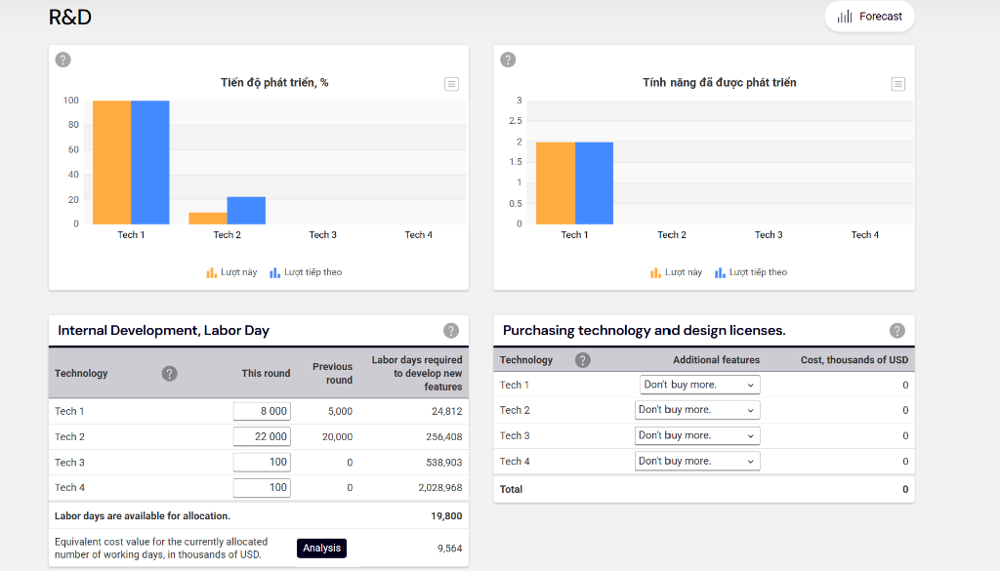
- Công thức Ngày công Nhân sự trên Tab
HR(Man-days):
- Ví dụ thực tế trên Web Vòng 2:▸ Cột chính thức
Greenđang cóPersonnel this round = 200→Total available person-days = 50,000(Total HR costs = $15,634k, tương đương$313 / person-day).▸ Khu vực cá nhânAnh Hađang thử nhậpPersonnel this round = 285(Wage = $4,200,Training = $400,Turnover = 6.0%) →New hires = 97(phí tuyểnRecruitment cost = $6.0k/ngườiở R2, tăng từ$4.0kở R1),Total available person-days = 71,250(Total HR costs = $24,465k, tương đương$343 / person-day).• Mẹo tiết kiệm phí sa thải bậc thang (Layoff cost = $12.0k / $15.0k / $20.0ktrên bảngParametersVòng 2): Trên bảngMarket outlook > Parameters, chi phí sa thải (Layoff cost, k USD) bị phạt lũy tiến theo quy mô cắt giảm: cắt5%–20%tốn$12.0k/người, cắt20%–50%tốn$15.0k/người, cắttrên 50%tốn$20.0k/người! Tuy nhiên, nếu bạn giảm biên chế một lượng nhỏ hơn hoặc bằng số người tự nguyện nghỉ việc (Personnel last round×Voluntary turnover %) — hoặc cắt giảm dưới5%— công ty sẽ tốn$0chi phí sa thải (Layoff = $0)! - Bảng Đối Chiếu Chính Xác Chi Phí
In-house developmentvs.Buying technology and design licencesTrên Web Vòng 2:• Nhờ ở Vòng 1 độiGreenđã phân bổ50,000 person-daysvàoTech 1và mua LicenseTech 2: New tech +1 feature ($150,000k), trạng thái công nghệ thực tế của độiGreentrên cổngsim.cesim.comở đầu Vòng 2 như sau:
Công nghệ (Technology) |
Số tính năng đang có sẵn đầu Vòng 2 (Total features available) |
Số ngày công nội bộ cần để mở khóa cột mốc tiếp theo (Required person-days for next new feature trên Web Vòng 2) |
Chi phí thực tế nếu làm Nội bộ (In-house × $343/day, dùng được ở Vòng 3) |
Giá Mua Bản Quyền trên Dropdown Web Vòng 2 (Buying technology and design licences, dùng được ngay Vòng 2) |
Khuyến nghị Chiến lược Vòng 2 cho Đội Green |
|---|---|---|---|---|---|
Tech 1 |
3 features (Tăng từ 2 lên 3 nhờ 50k ngày công R1!) |
42,026 person-days (Để mở khóa Feature thứ 4 của Tech 1) |
~$14,415 kUSD (~$14.4M) |
• +1 additional feature (lên 4F): $84,487 kUSD• +2 additional features (lên 5F): $192,163 kUSD |
Dùng In-house (42,026 person-days) để lên 4F vào đầu Vòng 3 (rẻ hơn mua License tới $70M!). |
Tech 2 |
1 feature (Đã mở khóa từ R1!) |
70,371 person-days (Để mở khóa Feature thứ 2 của Tech 2) |
~$24,137 kUSD (~$24.1M) |
• +1 additional feature (lên 2F): $116,959 kUSD• +2 additional features (lên 3F): $262,053 kUSD |
BẮT BUỘC ưu tiên số 1: Nhập 70,371 person-days vào Tech 2 để đầu Vòng 3 có Tech 2 (2 features) đón sóng mạng 56% ở Mỹ & 55% ở Á! |
Tech 3 |
0 features (Chưa mở khóa) |
~538,903 person-days để mở nền tảng + 1F (Nếu đã chọn mua License $480M như khu vực Anh Ha, web mới hiện 87,881 person-days để lên Feature 2!) |
~$184,844 kUSD (nếu tự làm từ đầu qua 2–3 vòng) |
• New tech +1 feature: $480,000 kUSD• New tech +2 features: $627,139 kUSD |
🚨 TUYỆT ĐỐI KHÔNG MUA LICENSE Tech 3 ($480,000k) Ở VÒNG 2! (Vì sóng mạng Tech 3 ở Vòng 2 tại Mỹ = 0%, Âu = 0%, Á = 7%!). |
Tech 4 |
0 features (Chưa mở khóa) |
722,566 person-days (Để mở khóa nền tảng Tech 4 + 1 feature) |
~$247,840 kUSD (chia làm 2–3 vòng) |
• New tech +1 feature: $600,000 kUSD• New tech +2 features: $793,766 kUSD |
Đầu tư số ngày công nội bộ dư ở Vòng 2 vào Tech 4 (hoặc đợi giá License giảm ở Vòng 3–4 khi sóng Tech 4 tại Châu Âu lên 39%–64%). |
R&D (Đã kiểm chứng trực tiếp trên khu vực cá nhân Anh Ha Vòng 2):1. Cạm bẫy "Nhảy số ngày công" (
Dynamic Required Person-days):- Ở Vòng 1, khi chưa mua License
Tech 2, web hiện cần 256,408 person-days; khi chọn mua License Tech 2 ($150M), web nhảy sang hiện 79,873 person-days (để lên Feature 2).- Ở Vòng 2 hiện tại, trong khu vực cá nhân
Anh Ha, vì đang chọn thử dropdown Tech 3 = New tech +1 feature ($480,000k) nên cột Required person-days for next new feature của Tech 3 hiển thị là 87,881 (số ngày công để lên Feature 2 của Tech 3 sau khi đã trả $480M!). Ngay khi bạn trả dropdown Tech 3 về No additional purchases ($0), con số đó sẽ quay về mức thực tế để mở khóa Tech 3 từ đầu (~538,903 person-days).2. R&D nội bộ dở dang KHÔNG làm giảm giá mua Bản quyền (
Licence): Nếu bạn bỏ ngày công tự nghiên cứu được 30%–60% thanh tiến độ của Tech 3 hoặc Tech 4, rồi vòng sau bấm mua Licence, hệ thống vẫn bắt trả đủ 100% tiền Licence và xóa sạch số ngày công dở dang!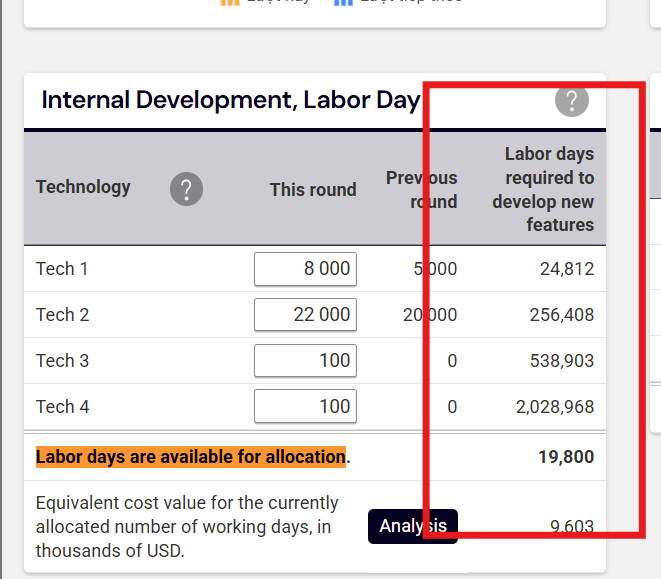
2.6. Tab Marketing & Logistics: Định giá 3 khu vực (USA, Asia, Europe), Ma trận Transportation costs & Tariffs
Dựa trên dữ liệu trích xuất trực tiếp từ bảng Parameters (Decisions > Market outlook) và Logistics của Vòng 1 & Vòng 2 trên sim.cesim.com, dưới đây là các hằng số kinh tế chính xác:
Feature cost, feature/product, USD(Chi phí gắn thêm mỗi Tính năng trên bảngMarket outlook > Parameters):• Đồng nhất$6.0 USD / feature / producttại cả 3 khu vựcUSA($6.0),Asia($6.0),Europe($6.0) và áp dụng như nhau cho mọi Công nghệ (Tech 1..4)!• Bằng chứng thực nghiệm trên Web Vòng 2:▸ Gắn1feature (nhưMarketing - USA > Tech 2vớiEstimated demand = 269kmáy): tốn$6.00/unit(269.28k× $6.00 =$1,616kdòngFeature costs!).▸ Gắn2features (nhưTech 1ở Vòng 1): tốn$12.00/unit.▸ Gắn3features (nhưMarketing - USA > Tech 1ở Vòng 2 với1,572kmáy): tốn$18.00/unit(1,571.63k× $18.00 =$28,289kdòngFeature costs!).- Ma trận
Transportation cost per product, USD+Flat rate tariff per product, USD(Shipping + Tariffs, USD/unit) Vòng 1 & Vòng 2:
Tuyến vận chuyển (Origin → Destination) |
Transportation cost (Phí vận chuyển) |
Flat rate tariff Vòng 1 (Thuế quan R1) |
Flat rate tariff Vòng 2 (Thuế quan R2) |
Ad-valorem tariff, % (Thuế % giá trị) |
Tổng Transportation costs incl. tariffs (R1 → R2) |
Đánh giá Chiến lược Chuỗi cung ứng |
|---|---|---|---|---|---|---|
USA → USA (Nội địa Mỹ) |
$0.00 |
$0.00 |
$0.00 |
0.0% |
$0.00 / unit |
Tối ưu tuyệt đối cho thị trường USA. |
Asia → Asia (Nội địa Á — Gồm cả Contract Mfg tại Á!) |
$0.00 |
$0.00 |
$0.00 |
0.0% |
$0.00 / unit |
Tối ưu tuyệt đối cho thị trường Asia (tiết kiệm trọn $27.00/unit so với xuất từ USA!). |
Asia → Europe |
$5.00 |
$3.00 |
$3.00 |
0.0% |
$8.00 / unit |
Nguồn cung xuất khẩu rẻ nhất cho Europe (rẻ hơn $4.00/unit so với xuất từ USA). |
USA → Europe |
$9.00 |
$3.00 |
$3.00 |
0.0% |
$12.00 / unit |
Nguồn cung chính cho Europe ở Vòng 1–2 (khi chưa xây xong xưởng Asia). |
Asia → USA |
$15.00 |
$7.00 |
$12.00 (Tăng ở R2!) |
0.0% |
$22.00 (R1) → $27.00 / unit (R2) |
Do Mỹ trả đũa thuế quan ở R2 ($7 → $12), xuất từ Asia sang USA tốn $27/unit. |
USA → Asia |
$15.00 |
$12.00 |
$12.00 |
0.0% |
$27.00 / unit |
Đắt đỏ nhất! Phải dùng Contract manufacturing tại Asia ở R2 và đưa 2 nhà máy Asia vào chạy ở R3 để xóa bỏ khoản phạt $27/unit này! |
2.7. Tab Tax: Thuế quốc tế, Kết chuyển lỗ (Loss carryforward) & Đòn bẩy Transfer pricing (1.00 – 2.00)
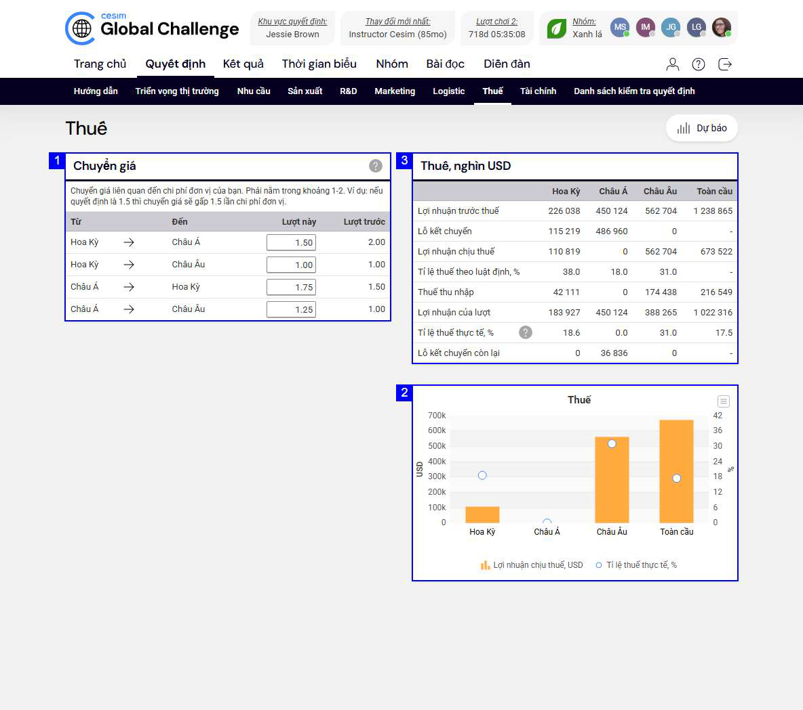
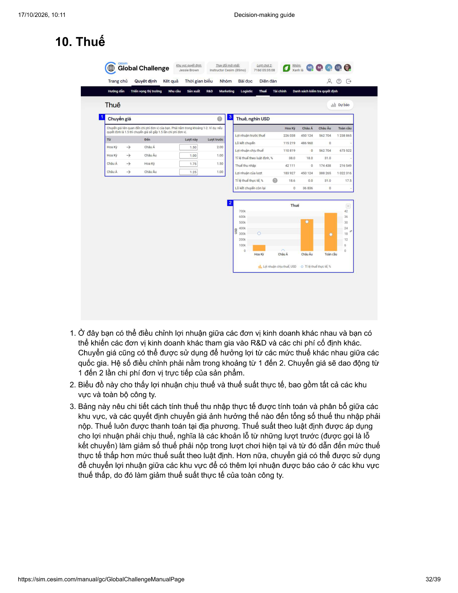
- Chênh lệch Thuế suất Thu nhập Doanh nghiệp (
Corporate tax rate) giữa 3 khu vực trên bảngParameters:•USA(Công ty mẹ):35.0%(R1) →38.0%(R2+) (Cao nhất)•Europe(Công ty con):31.0%(Trung bình)•Asia(Công ty con):15.0%(R1) →18.0%(R2+) (Thấp nhất — Thiên đường thuế!) - Cơ chế Kết chuyển lỗ (
Loss carryforward):• Khi một khu vực (thường làUSAkhi gánh chi phí mua License R&D lớn) cóProfit before tax(Lợi nhuận trước thuế / EBT) bị âm (< 0), dòngIncome taxestại khu vực đó trong vòng hiện tại bằng0, đồng thời khoản lỗ đó được tích lũy sang dòngLoss carryforwardở vòng sau để khấu trừ vào lợi nhuận chịu thuế (Taxable profit) của các vòng tương lai! - Cách vận hành của Hệ số Chuyển giá (
Transfer pricing: từ1.00đến2.00):• Khi nhà máy ở Khu vực A xuất khẩu hàng sang Công ty con ở Khu vực B, đơn giá bán nội bộ (Unit costhiển thị trong bảngMargin calculationcủa khu vực nhập khẩu) được tính bằng:
- Khi đặt Hệ số =
1.00: Nhà máy xuất khẩu bán bằng đúng giá vốn ($0lãi gộp xuất khẩu), 100% lợi nhuận thương mại nằm lại ở Công ty con nhập khẩu.• Khi tăng Hệ số lên2.00: Nhà máy xuất khẩu cộng thêm100%lãi gộp trên chi phí sản xuất vào hóa đơn bán cho công ty con → hút lợi nhuận trước thuế (Profit before tax) từ Công ty con nhập khẩu về Công ty xuất khẩu! - Quy tắc Tối ưu Thuế Chuyển giá 100% Chuẩn xác:• Tình huống 1 — Công ty mẹ
USAđang bị LỖ TRƯỚC THUẾ (Profit before taxtạiUSA < 0, ví dụ khi mua License R&D lớn):▸ Lúc này thuế suất biên tạiUSAđang là0%(vì đang lỗ!), trong khiEuropeđóng thuế31%vàAsiađóng thuế18%.▸ Hành động: Kéo hệ sốUSA → Europelên2.00(và nếu EBT Mỹ vẫn còn âm thì tăng tiếpUSA → Asia) cho đến khi rút đủ lợi nhuận từEuropevề lấp đầy khoản lỗ trước thuế tạiUSA(đưa Profit before tax tại USA tiến về 0)!• Tình huống 2 — Cả 3 khu vực đều đang có LÃI TRƯỚC THUẾ DƯƠNG (Profit before tax > 0vàLoss carryforward = 0, như độiGreenở Vòng 2 khi không mua License):▸ Vì thuế suất theo luật định ở Vòng 2 làAsia(18%) <Europe(31%) <USA(38%):▸ ĐặtUSA → Asia = 1.00vàUSA → Europe = 1.00(trên cột chính thứcGreenở Vòng 2 hiện tại đã được đặt sẵn chuẩn1.00 / 1.00 / 1.00 / 1.00, giúp lợi nhuận nằm lại ởAsiachịu thuế18%vàEuropechịu thuế31%, thay vì kéo vềUSAchịu thuế38%!).▸ Khi nhà máyAsiađi vào hoạt động từ Vòng 3, đặtAsia → Europe = 2.00vàAsia → USA = 2.00để hút tối đa lợi nhuận từEurope(31%) vàUSA(38%) về thiên đường thuếAsia(18%)!
2.8. Tab Finance & Projections: Cấu trúc vốn WACC, Ngưỡng tiền mặt tối thiểu & Đòn bẩy Share repurchase / Dividend
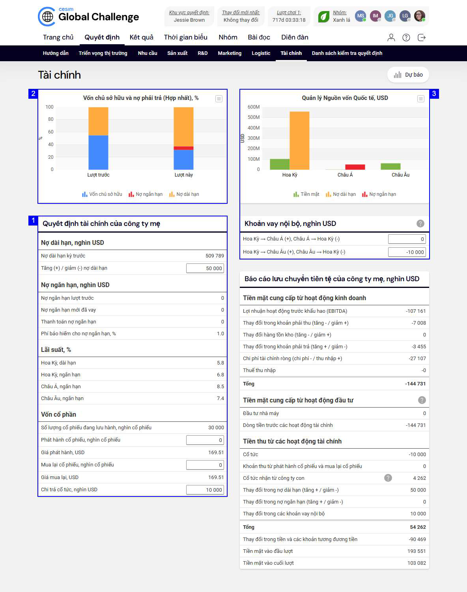
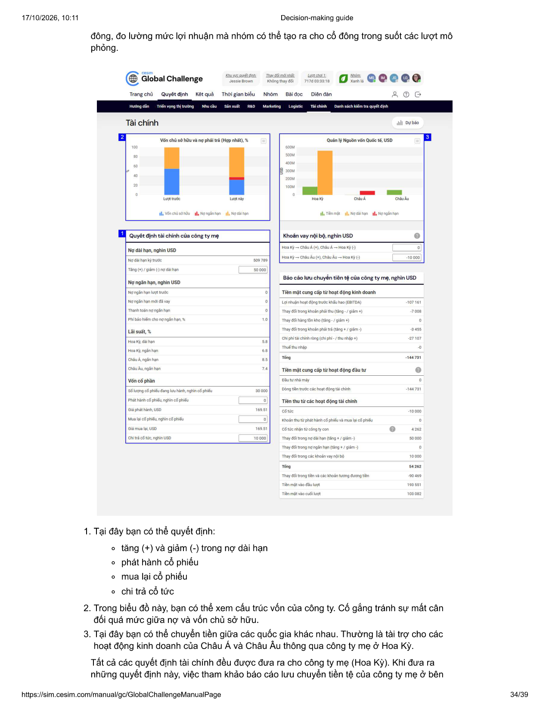
Minimum cash in USA / Asia / Europe, k USD(Ngưỡng tiền mặt tối thiểu mỗi khu vực=$2,000 kUSDtrên bảngParameters):• Dòng cuối cùngEnding cashtrong bảngParent company's cash flow statement, k USDtrên tabFinance(cũng như quỹ tiền mặt củaAsiavàEuropetrên biểu đồInternational treasury management, k USD) bắt buộc phải ≥ $2,000 kUSD (và nên duy trì ở mức$25,000 – $50,000 kUSDlàm đệm an toàn).• Nếu tiền mặt thực tế tại bất kỳ khu vực nào rơi xuống dưới$2,000 kUSD, hệ thống tự động ép khu vực đó vayShort-term debt(Emergency Loan) với lãi suất phạt cao (4.80%ở Mỹ,6.95%ở Châu Âu,8.70%ở Châu Á trong Vòng 2)!- Quản lý Nguồn vốn Quốc tế (
Internal loans (Treasury management), k USD) & Phát hiện Quan trọng về Thanh toán Nhà máy Khu vực:• Nhìn vào biểu đồ góc trên bên phải của tabFinance(International treasury management, k USD— IDfinance.graph.treasury.chart): Cột màu xanh lá (#90ed7d) làCash(Tiền mặt), cột màu đen (#434348) làShort-term debt(Nợ ngắn hạn) tại từng khu vực (USA,Asia,Europe).• Phát hiện cực kỳ quan trọng từ DOM TabFinanceVòng 2: Khi xây2nhà máy tạiAsia(đặt ở Vòng 1, thanh toán$320,000kở Vòng 2), khoản tiền$320,000kCapEx này được trừ TRỰC TIẾP vào quỹ tiền mặt của Công ty conAsia(chứ KHÔNG trừ vào bảngParent company's cash flow statementcủaUSA, nơi dòngPlant investmentsvẫn hiển thị bằng0!). NhờAsiađang có sẵn$310,460ktiền mặt đầu Vòng 2 cộng dòng tiền hoạt động Vòng 2, biểu đồInternational treasury managementtrên web Vòng 2 hiện tại hiển thịUSA Cash = $235,488k(hay$715,488kkhi bỏ License Tech 3),Asia Cash = $165,061k,Europe Cash = $137,121k, vàShort-term debt = $0ở cả 3 khu vực!• Dùng 2 ôUSA → Asia (+), Asia → USA (-)(decidx="cash.us.to.asia") vàUSA → Europe (+), Europe → USA (-)(decidx="cash.us.to.eu"):▸ Nhập số dương (+): Chuyển tiền mặt từ Công ty mẹUSAsang cấp vốn cho Công ty con (Asia/Europe).▸ Nhập số âm (-): Rút tiền mặt dư thừa từ Công ty con (Asia/Europe) về Công ty mẹUSA(ví dụ ở Vòng 2, sau khiAsiađã tự trả xong$320,000ktiền nhà máy và còn dư$165,061k, bạn có thể nhập-120,000ởAsiavà-100,000ởEuropeđể rút$220,000kvề Mỹ phục vụ mua lại cổ phiếu, trả cổ tức hoặc trả bớt nợ dài hạn!). - 3 Quy tắc Vàng về Vốn Cổ Phần (
Equity):• TUYỆT ĐỐI KHÔNG PHÁT HÀNH THÊM CỔ PHIẾU (Share issue, k shares = 0): Phát hành cổ phiếu mới làm tăng mẫu sốNumber of shares, gây pha loãng EPS nghiêm trọng và kéo sập điểm TSR (như sai lầm của độiRedở Vòng 1 khi phát hành10,000kcổ phiếu làm TSR âm-1.83%!).• GiữEquity ratio, %(Tỷ lệ vốn chủ sở hữu) trong vùng40% – 55%: Đây là vùng tối ưu hóaWACC.• Kết hợpShare repurchase, k shares(Mua lại cổ phiếu) +Dividend, k USD(Cổ tức) khi dòng tiền tự do dồi dào để tối đa hóa công thức TSR.
PHẦN 3: GIẢI PHẪU CHI TIẾT TỪNG TAB TRÊN WEB (ENGLISH UI ↔ TIẾNG VIỆT): TAB ĐỂ LÀM GÌ? • CHỈNH SỐ SAO? • ẢNH HƯỞNG CÁI GÌ?
Tổng quan Chu trình 10 bước ra quyết định (Strategic Intent Wheel) & Phân biệt Forecast Estimate vs. Binding Decision
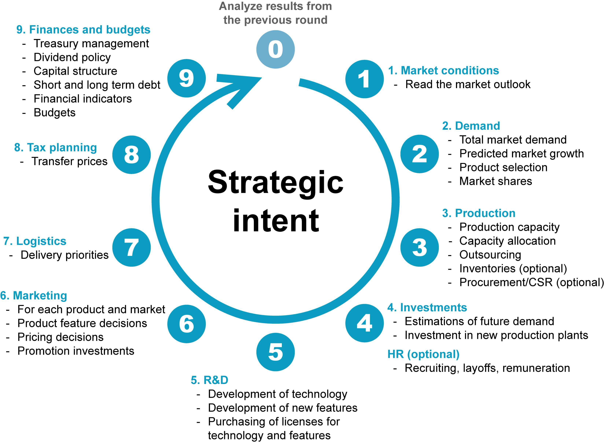
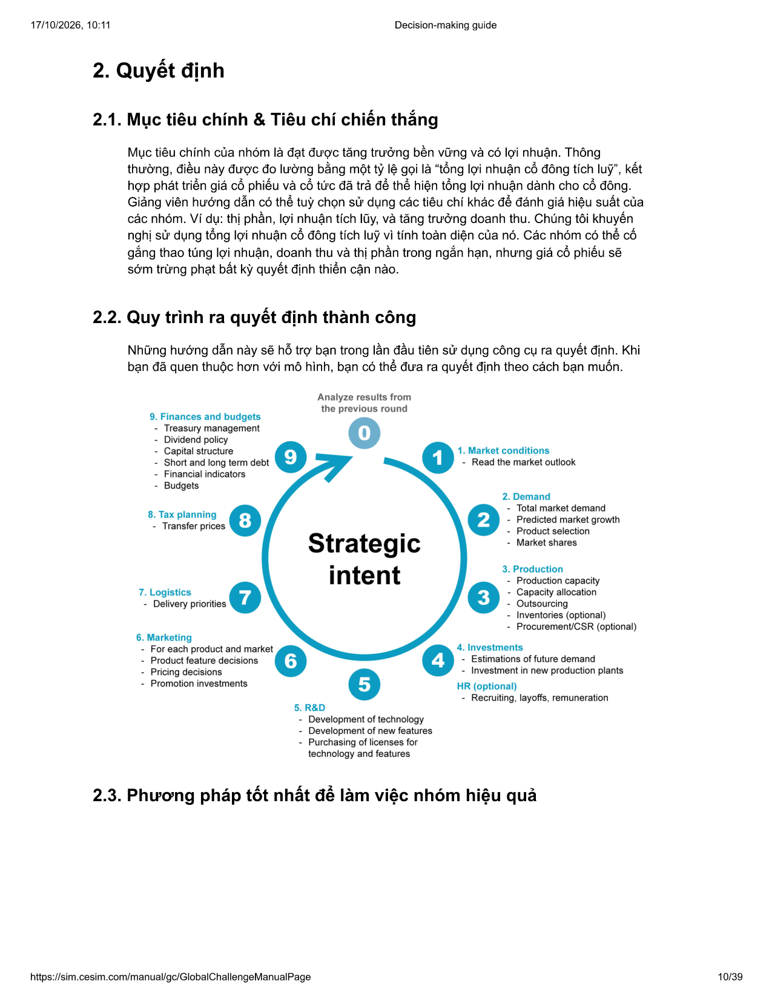
Trên cổng
https://sim.cesim.com/ul/Decisions?sim=gc, toàn bộ các ô nhập liệu nền xanh/trắng được chia làm 2 nhóm có bản chất hoàn toàn khác nhau:1.
[FORECAST ESTIMATE] — Ô Ước Tính Nội Bộ Của Riêng Bạn (Gồm Predicted market growth, % và Estimate for this round, % ở tab Demand, Demand estimates ở tab Investments, và Estimate of voluntary turnover, % ở tab HR):- Bản chất: Đây là con số bạn tự dự đoán để máy tính Cesim có cơ sở nhân ra
Demand forecast, k units → từ đó tính thử cho bạn xem ở tab Production có đủ hàng không, ở tab Logistics xuất khẩu bao nhiêu máy, và ở cửa sổ Projections sẽ thu về bao nhiêu Revenue và Profit for the round.- Cực kỳ lưu ý: Gõ thị phần ước tính
50% vào tab Demand sẽ làm Profit trên màn hình Projections nhảy lên hàng tỷ đô, nhưng KHÔNG HỀ làm tăng thêm 1 khách hàng thật nào khi khóa sổ! Ngược lại, nếu gõ ước tính quá thấp hoặc bằng 0%, màn hình Projections sẽ báo lỗ ảo và làm bạn phân bổ thiếu công suất sản xuất!2.
[BINDING DECISION] — Quyết Định Ràng Buộc Thật Khi Chấm Điểm (Toàn bộ các ô còn lại: Chọn Tech bán, % Capacity allocation, Contract manufacturing, Investments this round, Active suppliers, Personnel / Wage / Training, In-house R&D person-days, Buying licences, Features / Price / Promotion, Logistics Prioritize, Transfer pricing, Debt / Shares / Dividend / Internal loans):- Bản chất: Đây là những lệnh điều hành thật sự được gửi lên máy chủ lúc
19:00 ngày khóa sổ để đấu trực tiếp với 5 đội đối thủ (Orange, Blue, Grey, Red, Ochre) và quyết định Cumulative TSR % thật của đội bạn!Bước 0: Top Bar & Main Menu (Home, Decisions, Results [10 Sub-Tabs], Schedule, Teams, Readings, Forums)
Đường dẫn trên Web (Live URL): Thanh Header trên cùng → Home | Decisions | Results | Schedule | Teams | Readings | Forums
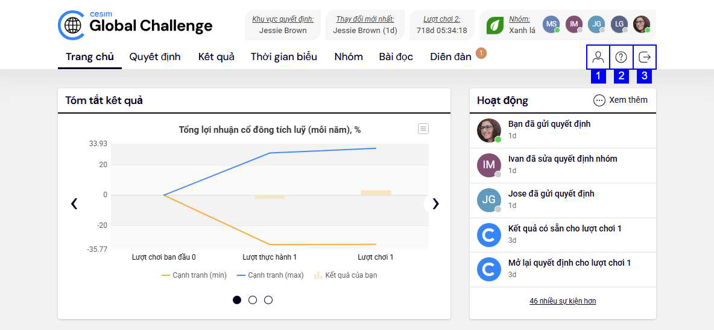
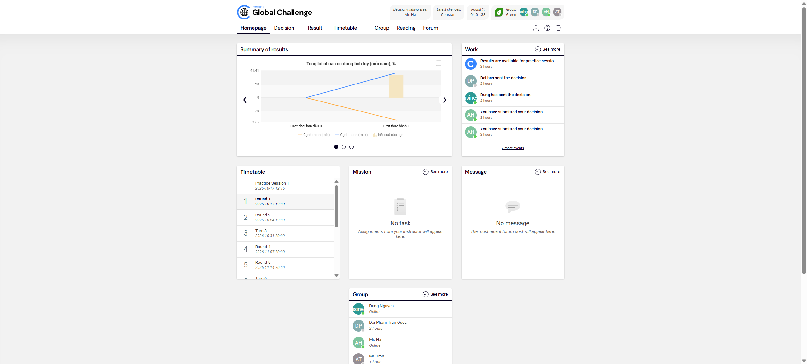
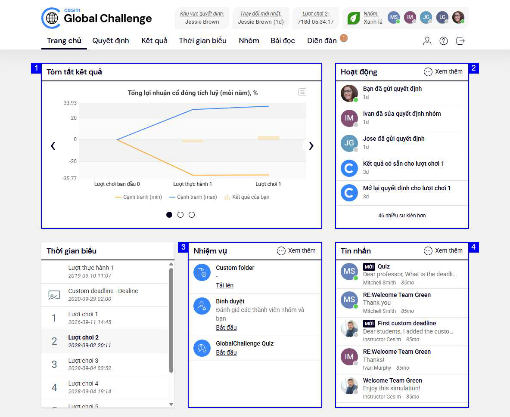
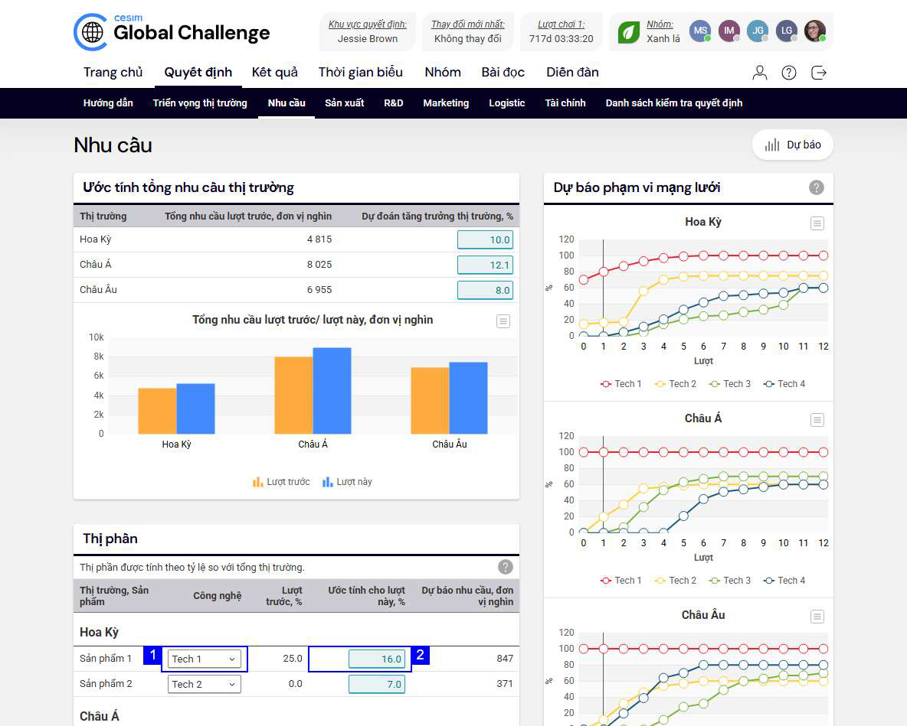
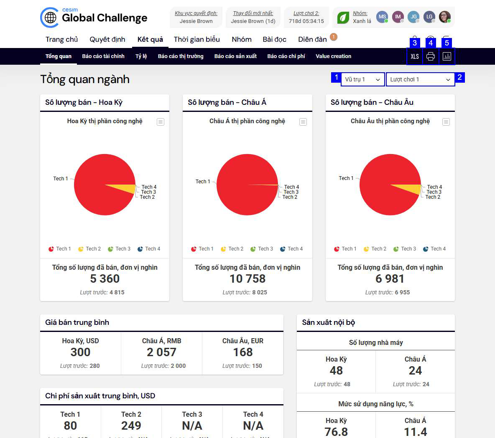
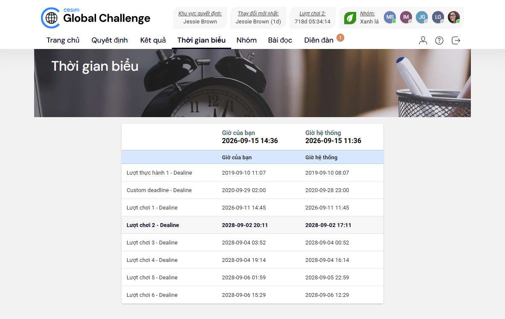
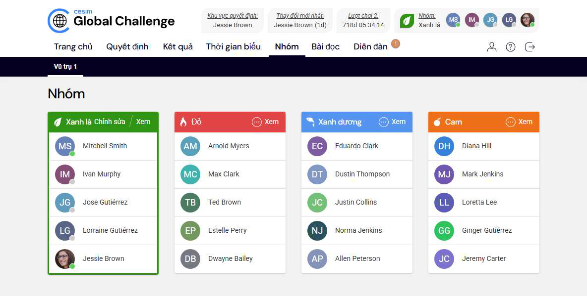
🔬 Bảng 0A: Giải Phẫu Từng Thành Phần Trên Top Status Bar, Home, Schedule, Teams, Readings & Forums
Tên Tiếng Anh Trên Web (Exact English UI Label) |
Tên Tiếng Việt (Trên Ảnh Chụp) | Giá Trị Thực Tế Trên Web Vòng 2 (Live R2 Portal State) |
Ô/Nút Này Để Làm Gì? (What It Does) |
Thao Tác & Ảnh Hưởng (How to Use & Impact) |
|---|---|---|---|---|
Decisions area:(Góc trên cùng bên trái) |
Khu vực quyết định: |
Decisions area: Anh Ha (hoặc Green, Dung Nguyen, Dai Pham Tran Quoc, Anh Tran) |
Cho biết bạn đang đứng ở bản nháp cá nhân của ai hay đang ở cột chính thức của nhóm (Green). |
Cực kỳ quan trọng: Nếu dòng này chưa hiện chữ Green, mọi con số bạn vừa sửa mới chỉ nằm ở khu vực cá nhân, phải vào Decision checklist bấm Copy sang Green! |
Latest update:(Thanh trạng thái trên cùng) |
Thay đổi mới nhất: |
Anh Ha 4h 37m ago |
Báo tên thành viên vừa thay đổi thông số gần nhất và thời gian cách đây bao lâu. | Giúp 4 thành viên biết ai đang thao tác để không ghi đè nhầm lên nhau. |
Round 2 Countdown(Thanh trạng thái trên cùng) |
Lượt chơi 2 (Đồng hồ đếm ngược) |
Round 2: 5d 20h ... (Hạn chót: 2026-10-24 19:00 Your time / 12:00 System time) |
Đếm ngược thời gian còn lại trước khi máy chủ tự động khóa sổ Vòng 2. | Khi đồng hồ về 0d 00h 00m 00s, hệ thống khóa quyền sửa và chấm điểm cột Green. |
Team: Green [DN] [DP] [AH] [AT] |
Nhóm: Xanh lá + Avatar viết tắt |
DN (Dung Nguyen), DP (Dai Pham), AH (Anh Ha), AT (Anh Tran) |
Hiển thị 4 thành viên trong đội; chấm tròn xanh lá báo hiệu ai đang Online. | Rê chuột vào chữ viết tắt để xem tên đầy đủ của từng thành viên. |
Home → Results summary |
Trang chủ → Tóm tắt kết quả |
Biểu đồ Cumulative total shareholder return (p.a.), % (Green = 36.8% = đường max của vũ trụ!) |
So sánh vị trí của đội Green với mức cao nhất (max) và thấp nhất (min) trong Universe 1. |
Bấm mũi tên < > hai bên biểu đồ để lật xem thêm đồ thị Revenue và Net profit. |
Home → Activity & Schedule (./Schedule?sim=gc) |
Hoạt động & Thời gian biểu |
Lịch trình 13 mốc (Your time UTC+7 | System time UTC):• Practice round 1: 2026-10-17 12:15 | 05:15• Round 1: 2026-10-17 19:00 | 12:00• Round 2: 2026-10-24 19:00 | 12:00• Round 3: 2026-10-31 20:00 | 13:00• Round 4 (07/11 20:00) → Round 12 (2027-01-02 20:00 | 13:00) |
Theo dõi nhật ký nộp bài và lịch đóng cổng 12 vòng chơi chính thức mỗi tối Thứ Bảy hàng tuần theo múi giờ máy tính của bạn (Your time) và giờ máy chủ (System time). |
Lưu ý từ Round 3 (31/10/2026) đến Round 12 (02/01/2027), giờ khóa sổ theo Your time chuyển sang 20:00 tối Thứ Bảy (do châu Âu đổi giờ mùa đông 13:00 System time). |
Readings (./Reading?sim=gc) |
Bài đọc |
Chứa Case description (Mô tả tình huống) & Decision-making guide (Hướng dẫn quyết định) |
Nơi đọc trực tuyến hoặc tải file PDF gốc của trò chơi. | Toàn bộ 8 trang Case description và các trang Decision-making guide đã được nhúng trực tiếp trong tài liệu này. |
Forums (./TeamForum?sim=gc & ./CourseForum?sim=gc) |
Diễn đàn |
Team forum (./TeamForum?sim=gc) & Course forum (./CourseForum?sim=gc) |
Kênh nhắn tin nội bộ riêng của 4 thành viên đội Green (Team forum) hoặc toàn khóa học (Course forum). |
Dùng Team forum để lưu ghi chú bàn giao khi đổi ca trực giữa các thành viên. |
🔬 Bảng 0B: Giải Phẫu Toàn Bộ 10 Sub-Tabs Trong Menu Results (./Results?sim=gc — Báo Cáo Kết Quả & Tình Báo Đối Thủ)
Khi bấm vào menu Results (Kết quả), bạn có hộp chọn vòng chơi ở góc trái (Practice round 1, Round 1...), nút Download (tải file Excel .xls chứa toàn bộ 10 tab kết quả), nút Printable report (in PDF), và 10 tab báo cáo chuyên sâu từ trái sang phải:
Thứ tự & Tên Tiếng Anh Trên Web (Results Sub-Tab & URL panel) |
Các Tab Con Bên Trong (Sub-panels & URL panel) |
Tên Tiếng Việt Tương Ứng | Báo Cáo Này Chứa Những Bảng Gì & Dùng Để Soi Tử Huyệt Nào Của 5 Đối Thủ (Orange, Blue, Grey, Red, Ochre)? |
|---|---|---|---|
1. Overview( panel=overview) |
Global (panel=overview) |
Tổng quan |
• Gồm 4 biểu đồ (Revenue, Profit for the round, Cumulative TSR %, Market capitalization) và bảng Key market indicators của toàn ngành.• Dùng để soi (Số thực tế R1): Tổng sản lượng bán toàn ngành ( Total sales, k units: Tech 1 = 30,683k, Tech 2..4 = 0), giá bán trung bình toàn ngành (Tech 1 = $235 USD / 1,925 RMB / 159 EUR; Tech 2 = $320 USD / 3,300 RMB / 200 EUR), tổng số nhà máy toàn ngành (USA = 72 xưởng có sẵn; Asia = 4 xưởng đang xây: trong đó Green xây 2, Blue xây 1, Orange xây 1!). |
2. Financial statements( panel=financialstatementsglobal) |
• Global (panel=financialstatementsglobal)• USA (panel=financialstatementsusa)• Asia (panel=financialstatementsasia)• Europe (panel=financialstatementseurope) |
Báo cáo tài chính (Toàn cầu / Mỹ / Á / Âu) |
• Gồm 3 bảng đầy đủ của cả 6 đội: Income statement, k USD (P&L), Balance sheet, k USD và Cash flow statement, k USD.• Dùng để soi (Số thực tế R1): Bấm vào từng khu vực ( USA, Asia, Europe) để xem lợi nhuận từng vùng (ở R1 Green lãi dương ở cả 3 châu lục: USA EBIT +$99,668k, Asia EBIT +$334,159k, Europe EBIT +$34,341k!), xem đối thủ nào đang ôm hàng tồn kho ế (Inventory: Red = $488,546k, Orange = $302,630k, Ochre = $141,022k, Green = $92,647k [264k Tech 2]) hoặc bị phạt vay nợ ngắn hạn khẩn cấp (Short-term debt (unplanned): Orange = $78,850k, Ochre = $44,447k!). |
3. Ratios( panel=ratios) |
Global (panel=ratios) |
Tỷ lệ (Các chỉ số tài chính & TSR) |
• Bảng Key financial ratios, % (Gross margin, Operating margin (EBITDA), EBIT, ROE, ROCE, Equity ratio, Net gearing) và bảng Shareholder return (EPS, Dividend yield, P/E, Share price, Market cap, Cumulative total shareholder return (p.a.), %).• Dùng để soi: Kiểm tra bảng xếp hạng TSR chính thức ( Green #1 = 36.80%, Ochre #2 = 34.70%, Blue #3 = 33.25%) và xem đối thủ nào vừa phạm sai lầm phát hành cổ phiếu (Red tăng Number of shares lên 40,000k!). |
4. Market reports( panel=areareportglobal) |
• Global (panel=areareportglobal)• USA (panel=areareportusa)• Asia (panel=areareportasia)• Europe (panel=areareporteurope) |
Báo cáo thị trường (Toàn cầu / Mỹ / Á / Âu) |
• Kho tình báo quý giá nhất! Trên tab Global hiển thị thị phần từng đội; khi bấm vào USA, Asia, Europe, hệ thống mở ra bảng chi tiết từng dòng sản phẩm của cả 6 đội: Price (Giá bán đối thủ đặt), Number of features (Số tính năng đối thủ gắn), Sales, k units (Sản lượng bán thực tế), Demand, k units (Tổng đơn hàng khách đặt), Unsatisfied demand (Số đơn hàng bị đứt hàng!) và Promotion, k USD.• Dùng để soi: Biết chính xác 100% giá bán, số tính năng và ngân sách quảng cáo của từng đối thủ ở vòng vừa rồi (đã trích xuất đầy đủ trong Bảng 4.6B bên dưới)! |
5. HR report( panel=hrresults) |
Global (panel=hrresults) |
Báo cáo nhân sự |
• Bảng Personnel (Number of personnel, Available person-days, Recruitment, Layoffs, Turnover %), HR costs (Monthly wage, Training budget, Total HR costs) và R&D (Number of technologies, Completed features: cho biết đối thủ đã mở khóa bao nhiêu tính năng cho Tech 1..4!).• Dùng để soi: Nhìn dòng Completed features ở R1 thấy ngay Green có T1=3F, T2=1F; Ochre có T1=3F, T2=2F; Blue có T1=3F, T2=2F; Grey có T1=3F, T2=1F; Orange có T1=3F, T2=0F; Red có T1=3F, T2=0F! |
6. Sustainability( panel=sustainability) |
Global (panel=sustainability) |
Bền vững (Trách nhiệm xã hội CSR) |
• Bảng đánh giá xếp hạng sao (1–5 stars) về Ethics (Đạo đức) và Sustainability (Bền vững) của cả 6 đội.• Dùng để soi: Ở Vòng 1, Green, Blue và Grey đạt mức cao nhất (3 sao Ethics + 4 sao Sustainability nhờ chọn bộ 3 nhà cung cấp Materialistic, Colossal, Innovation). |
7. Production report( panel=productionoverview) |
• Overview (panel=productionoverview)• Manufacturing details (panel=productionreport)• Logistics details (panel=logisticsdetails) |
Báo cáo sản xuất (Tổng quan, Chi tiết sản xuất, Chi tiết tiếp vận) |
• Sub-tab Overview & Manufacturing details: Hiển thị Plants available, Plants under construction, Production, k units, Capacity utilization %, Contract manufacturing, k units, Ending inventory, k units và Scrap % của cả 6 đội tại USA & Asia.• Sub-tab Logistics details: Hiển thị luồng xuất nhập khẩu thực tế và thứ tự ưu tiên giao hàng (Delivery priorities) mà từng đội đã đặt! |
8. Cost report( panel=costsoverview) |
• Overview (panel=costsoverview)• Details (panel=costsreport)• USA (panel=marginusa)• Asia (panel=marginasia)• Europe (panel=margineurope) |
Báo cáo chi phí (Tổng quan, Chi tiết, Hoa Kỳ, Châu Á, Châu Âu) |
• Sub-tab Overview & Details: So sánh đơn giá sản xuất nội bộ (In-house manufacturing unit cost, USD), giá thuê ngoài (Contract manufacturing unit cost), đơn giá linh kiện (Component unit cost: Green = $33.33) và tổng phí vận tải/thuế quan của 6 đội.• Sub-tab USA / Asia / Europe: Hiển thị bảng Margin calculation của cả 6 đội tại từng châu lục! |
9. Sorting( panel=ranking) |
Global (panel=ranking) |
Phân loại |
Công cụ tự chọn chỉ số bất kỳ từ menu thả xuống để xếp hạng nhanh 6 đội từ cao xuống thấp. |
10. Value creation( panel=valuecreation) |
Global (panel=valuecreation) |
Tạo dựng giá trị |
Biểu đồ phân tích giá trị gia tăng kinh tế (EVA / Value creation) của từng đội qua các vòng. |
Bước 1: Tab Decisions > Market outlook (Triển vọng thị trường & Bảng Parameters / Thông số)
Đường dẫn trên Web (Live URL): Decisions → Market outlook (./Decisions?panel=marketconditions&sim=gc)
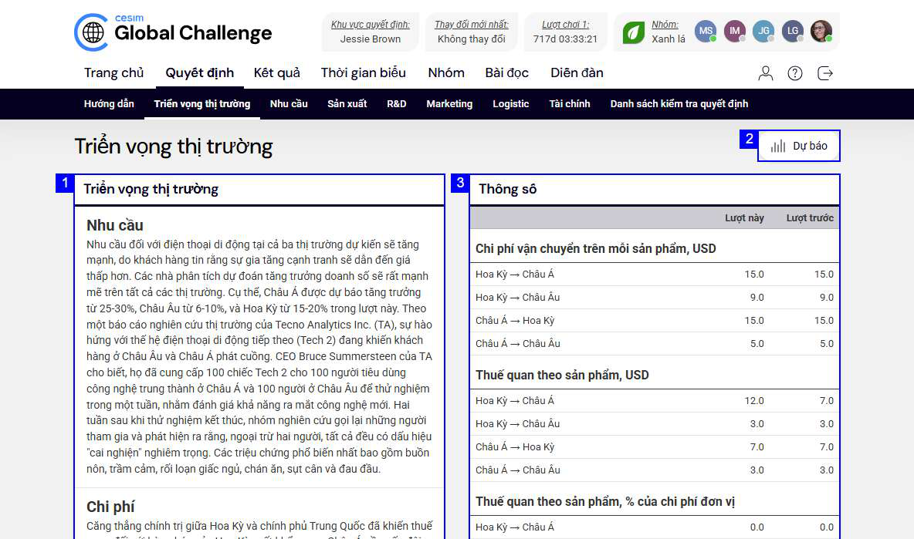
🎯 A. Tab Market outlook này để làm gì?
- Đây là Màn hình Tình báo Kinh tế Vĩ mô & Bảng Hằng số Luật chơi của vòng hiện tại.
- Tab này không có ô nhập liệu nào (
0 inputs), nhưng bạn BẮT BUỘC phải đọc nó đầu tiên ở mỗi vòng vì nó cung cấp:• Con số%dự báo tăng trưởng nhu cầu thị trường (Market growth %) củaUSA(7–10%),Asia(17–20%),Europe(~5%) trong khung văn bản bên trái → bạn lấy chính con số này để gõ vào tabDemandở Bước 2!• Các cú sốc chính sách & công nghệ (ở Vòng 2:USAnâng thuế nhập khẩu hàngAsiatừ$7.0lên$12.0/unit; thuế TNDN tạiUSAtăng lên38.0%vàAsiatăng lên18.0%; sóng mạng tạiUSAvàEuropebắt đầu hỗ trợTech 4;Tech 2bùng nổ tạiAsia).• BảngParameters(Thông số) ở bên phải: Gồm 10 bảng con niêm yết chính xác toàn bộ đơn giá vận chuyển, thuế quan, chi phí lưu kho, chi phí tính năng, chi phí quản lý cố định, khấu hao, nhân sự, lãi suất và tỷ giá có hiệu lực trong vòng này.
🔬 B. Bảng Đối Chiếu Song Song Từng Dòng Trong Bảng Parameters Trên Web (Round 1 vs. Round 2 Live)
Nhóm & Tên Tiếng Anh Trên Web (Exact English UI Label trong Parameters) |
Tên Tiếng Việt (Trên Ảnh Chụp) | Giá Trị Last round (R1) |
Giá Trị This round (R2 Live) (USA | Asia | Europe / Global) |
Ý Nghĩa & Tác Động Trực Tiếp Đến Quyết Định Nào Của Bạn? |
|---|---|---|---|---|
1. Logistics — Transportation cost per product, USD |
Chi phí vận chuyển trên mỗi sản phẩm, USD |
• USA → Asia/EU: $15.0 / $9.0• Asia → USA/EU: $15.0 / $5.0 |
• USA → Asia: $15.0 | USA → Europe: $9.0• Asia → USA: $15.0 | Asia → Europe: $5.0 |
Phí vận chuyển vật lý trên mỗi máy xuất khẩu (hàng bán nội địa USA → USA và Asia → Asia tốn $0.0). |
1. Logistics — Flat rate tariff per product, USD |
Thuế quan cố định theo sản phẩm, USD |
• USA → Asia/EU: $12.0 / $3.0• Asia → USA/EU: $7.0 / $3.0 |
• USA → Asia: $12.0 | USA → Europe: $3.0• Asia → USA: $12.0 (Tăng +$5!) | Asia → Europe: $3.0 |
Tổng phí Shipping + Tariff từ USA → Asia là $27.0/unit, từ Asia → USA là $27.0/unit, từ USA → Europe là $12.0/unit, từ Asia → Europe chỉ $8.0/unit! |
1. Logistics — Ad-valorem tariff per product, % of unit cost |
Thuế quan theo % chi phí đơn vị |
0.0% (mọi tuyến) |
0.0% (mọi tuyến) |
Vì thuế theo % giá trị bằng 0.0%, việc chỉnh Transfer pricing từ 1.00 lên 2.00 ở tab Tax không làm tốn thêm 1 xu thuế hải quan nào! |
2. Taxation — Corporate tax rate, % |
Thuế suất thuế thu nhập doanh nghiệp, % |
USA 35.0% | Asia 15.0% | Europe 31.0% |
USA: 38.0% (+3%) | Asia: 18.0% (+3%) | Europe: 31.0% |
Quyết định hướng đặt Transfer pricing ở tab Tax: khi USA có lãi dương, phải để Transfer pricing = 1.00 nhằm giữ lợi nhuận ở Asia (18%) và Europe (31%) thay vì USA (38%)! |
3. Inventory — Inventory management variable cost, USD |
Chi phí biến đổi quản lý hàng tồn kho, USD |
USA $1.20 | Asia $0.90 |
USA: $1.20 / unit | Asia: $0.90 / unit |
Cộng với chi phí vốn (WACC × Ending inventory value) tạo thành tổng chi phí lưu kho trên sub-tab Production > Inventory. |
4. Marketing — Feature cost, feature/product, USD |
Chi phí tính năng, tính năng/sản phẩm, USD |
USA $6.0 | Asia $6.0 | Europe $6.0 |
USA: $6.0 | Asia: $6.0 | Europe: $6.0 (Áp dụng đồng nhất cho mọi Tech 1..4!) |
Chi phí biến đổi cộng thêm cho mỗi 1 tính năng (feature) gắn vào máy ở tab Marketing (1 feature = $6.0/unit, 2 features = $12.0/unit, 3 features = $18.0/unit). |
5. Administration — Fixed costs, k USD & Base cost per plant, k USD |
Chi phí cố định, nghìn USD & Chi phí cơ sở mỗi nhà máy |
Fixed: $35,000k / $10,000k / $10,000kBase/plant: $6,000k |
• Fixed costs: USA $35,000k | Asia $10,000k | Europe $10,000k• Base cost per plant: USA $6,000k | Asia $6,000k |
Chi phí hành chính cố định hàng năm tại từng khu vực và chi phí cơ sở mỗi nhà máy (nhân với hệ số quy mô ở mục Production). |
6. Production — Plant capacity, Depreciation rate, Multiplier for fixed costs per plant |
Công suất nhà máy, Tỷ lệ khấu hao, Hệ số nhân chi phí cố định mỗi nhà máy |
550 k units, 15.0%, 1.00 / 0.85 / 0.70 / 0.55 |
• Plant capacity per round, k units: 550• Depreciation rate (declining balance), %: 15.0%• Multiplier for fixed costs: 1–3 plants: 1.00 | 4–6: 0.85 | 7–10: 0.70 | over 10: 0.55 |
Giải thích tại sao trên tab Investments, Fixed cost of a new plant ở USA (12 xưởng) giảm còn $2,897k và ở Asia (2 xưởng đang xây) là $5,223k! |
7. HR — Working days, Recruitment cost, Layoff cost (by layoff size), Other R&D costs |
Ngày làm việc, Chi phí tuyển dụng, Chi phí sa thải (theo quy mô), Chi phí R&D khác |
• 250 days• Tuyển: $4.0k• Sa thải: $12k/$15k/$20k• Khác: $0.58k/tháng |
• Working days per employee per round: 250• Recruitment cost, k USD: $6.0k (Tăng từ $4.0k ở R1!)• Layoff cost, k USD: 5%–20%: $12.0k | 20%–50%: $15.0k | >50%: $20.0k• Other R&D costs per employee per month: $0.58k |
Dùng để tính chính xác bảng Personnel costs, k USD trên tab HR (Salaries + Recruitment + Training + Layoff + Other R&D costs). |
8. Finance & Currencies & Investments |
Tài chính, Tiền tệ & Đầu tư |
• Min cash: $2,000k• RMB/USD: 8.10• EUR/USD: 0.72 ($1.3968/EUR)• LT debt: 4.05% |
• Minimum cash in USA / Asia / Europe: $2,000k mỗi vùng• Central bank rate: USA 1.95% | Asia 4.35% | Europe 3.10%• Short-term debt premium: USA +2.85% (4.80%) | Asia +4.35% (8.70%) | Europe +3.85% (6.95%)• Long-term debt premium: +2.00% (LT rate = 3.95%)• Currency per USD: Asia = 8.10 RMB (8.0968) | Europe = 0.69 EUR (1 EUR = $1.4400 USD)• Change in cost of a new plant: 0.0% |
Đồng EUR tăng giá lên $1.4400 USD giúp doanh thu Châu Âu quy đổi sang USD tăng vọt; ngưỡng tiền mặt tối thiểu $2,000k áp dụng cho cả 3 khu vực USA, Asia, Europe. |
Bước 2: Tab Decisions > Demand (Nhu cầu — Total market demand, Market shares & Demand forecasts)
Đường dẫn trên Web (Live URL): Decisions → Demand (./Decisions?panel=demand&sim=gc)
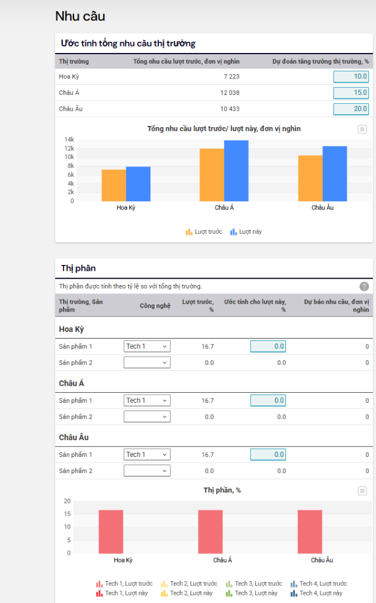
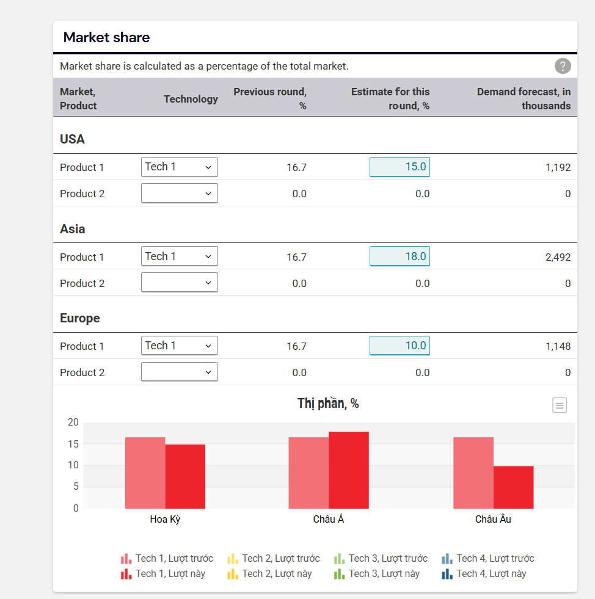
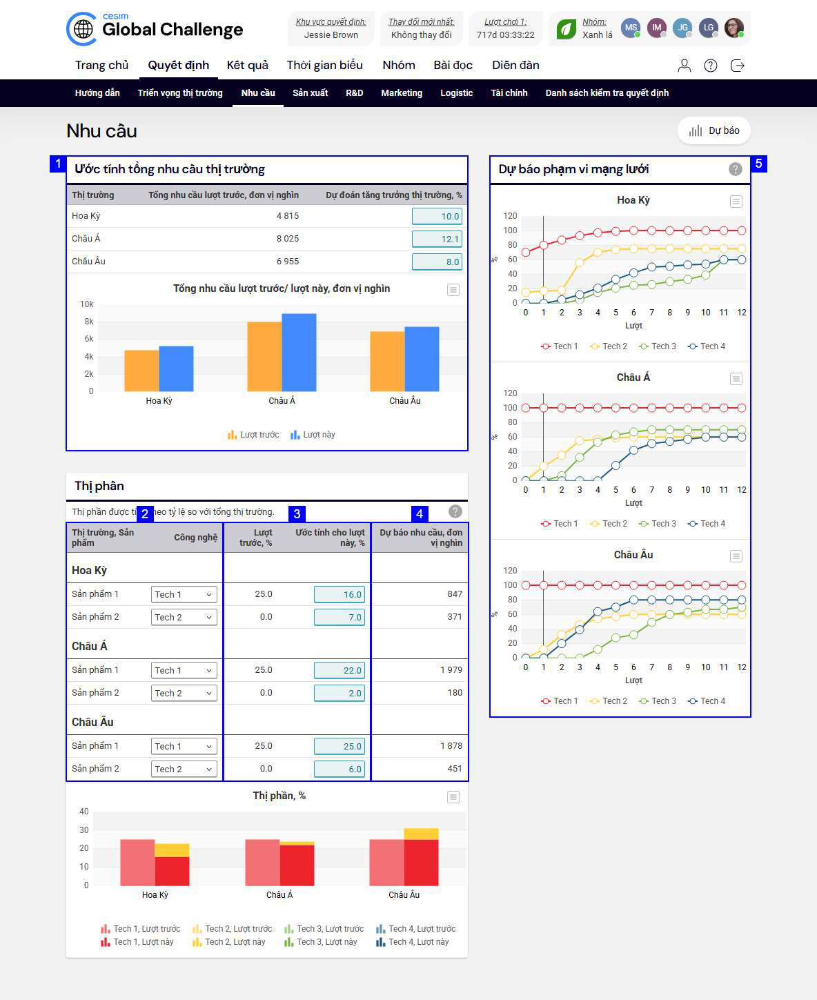
🎯 A. Tab Demand này để làm gì?
Tab Demand thực hiện 2 nhiệm vụ cùng lúc:
- Nhiệm vụ Quyết định Thật (
[BINDING DECISION]): Chọn tối đa2công nghệ (Tech 1..4) đưa vào kệ hàng tại mỗi khu vực (USA,Asia,Europe) thông qua các hộp chọn thả xuống (Dropdown) trong bảngMarket shares. Khi bạn chọn một công nghệ ở đây, công nghệ đó mới xuất hiện trên tabMarketingvàLogisticscủa khu vực tương ứng! - Nhiệm vụ Lập Kế Hoạch Dự Báo (
[FORECAST ESTIMATE]): Nhập dự đoán tăng trưởng thị trường (Predicted market growth, %) và ước tính thị phần của đội mình (Estimate for this round, %) để hệ thống nhân ra Sản lượng nhu cầu dự báo (Demand forecasts, k units). Con sốDemand forecasts, k unitsnày sẽ được chuyển thẳng sang dòngDemandở tabProduction > Planningvà tabLogistics, cũng như dùng để tínhRevenuedự báo trên cửa sổProjections!
🔬 B. Bảng Đối Chiếu Song Song Từng Ô Trên Tab Decisions > Demand (Live Round 2 Portal)
Tên Tiếng Anh Trên Web (Exact English UI Label) & Mã Wicket decidx |
Tên Tiếng Việt (Trên Ảnh Chụp) | Loại Ô & Giá Trị Thực Tế Trên Web Vòng 2 (Last round R1 | Green & Anh Ha) |
Ô Này Là Gì & Công Thức Tính? (What It Is & Formula) |
Chỉnh Số Sao? (How to Adjust — Quy Tắc & Mục Tiêu Vòng 2) |
Ảnh Hưởng Cái Gì? (Downstream Impact — Nhảy Số Ở Đâu?) |
|---|---|---|---|---|---|
Bảng 1: Total market demandDòng 1: Total demand last round, k units (USA, Asia, Europe) |
Tổng nhu cầu thị trường → Tổng nhu cầu lượt trước, đơn vị nghìn |
[READ-ONLY]• USA: 7,578 k• Asia: 15,371 k• Europe: 10,124 k(Tổng cầu thực tế R1 = 33,073 k) |
Tổng nhu cầu thực tế của cả 6 đội cộng lại tại từng châu lục trong Vòng 1 vừa qua (bao gồm cả phần cầu không được đáp ứng của các đội đứt hàng). | Không chỉnh được (Dữ liệu lịch sử thực tế từ Vòng 1). | Là số gốc (Base) để nhân với % tăng trưởng bạn gõ ở dòng Predicted market growth, %. |
Bảng 1: Total market demandDòng 2: Predicted market growth, %• USA (decidx="us.growth.prediction")• Asia (decidx="asia.growth.prediction")• Europe (decidx="eu.growth.prediction") |
Dự đoán tăng trưởng thị trường, % (Hoa Kỳ, Châu Á, Châu Âu) |
[INPUT - ESTIMATE]• Last round, % (Thực tế R1): USA = 18.5%, Asia = 29.3%, Europe = 9.7%• Đang nhập ở Green & Anh Ha: 18.5% / 26.0% / 8.0% (Số cũ từ R1!) |
Tốc độ tăng trưởng tổng cầu toàn ngành trong vòng này do bạn ước tính dựa trên bản tin Market outlook. |
👉 Ở Vòng 2 bắt buộc sửa lại theo đúng bản tin Market outlook Vòng 2:• USA (us.growth.prediction): Gõ 8.5 (dải tin tức 7–10%)• Asia (asia.growth.prediction): Gõ 18.5 (dải tin tức 17–20%)• Europe (eu.growth.prediction): Gõ 5.0 (tin tức ~5%) |
Làm thay đổi ngay lập tức dòng Demand this round, k units → kéo theo toàn bộ bảng Demand forecasts, k units bên phải! (Hiện tại cả 5 cột đang để quên số R1 18.5%/26.0%/8.0% làm cầu dự báo bị phóng đại ảo!) |
Bảng 1: Total market demandDòng 3: Demand this round, k units (USA, Asia, Europe) |
Nhu cầu lượt này, đơn vị nghìn |
[AUTO-CALC]• Đang hiện (với số R1): 8,980k / 19,367k / 10,934k• Khi nhập đúng R2 ( 8.5% / 18.5% / 5.0%): 8,222k / 18,215k / 10,630k |
Demand this round = Last round × (1 + Predicted growth %100) |
Tự động nhảy ngay khi bạn gõ Predicted market growth, %. |
Là mẫu số tổng cầu khu vực để nhân với % thị phần ước tính ở Bảng 2 (Market shares). |
Bảng 2: Market shares & Demand forecasts, k units — USA• Dòng 1: Tech 1 (decidx="us1.tech") + Ô Estimate for this round, % (decidx="area1.tech1.share.est")• Dòng 2: Hộp chọn [SELECT] (decidx="us2.tech") + Ô Estimate for this round, % (decidx="area1.tech2.share.est") |
Thị phần & Dự báo nhu cầu, đơn vị nghìn → Hoa Kỳ• Lượt trước, %• Ước tính cho lượt này, % |
• [SELECT] Dòng 2: Đang chọn Tech 2• Last round, % (R1): Tech 1 = 18.49% (1,401k), Tech 2 = 0%• Đang nhập ở Green & Anh Ha: Tech 1 = 17.5% (1,572 k), Tech 2 = 3.0% (269 k) |
• Hộp chọn [SELECT] (Tech 2 / Tech 3 / Tech 4): [BINDING DECISION] chọn công nghệ thứ 2 bán tại Mỹ.• Ô %: [ESTIMATE] Thị phần dự kiến của từng sản phẩm tính trên tổng cầu toàn khu vực Mỹ.• Bảng Demand forecasts, k units: Demand this roundUSA × Estimate % |
👉 Tại Vòng 2 (USA):• Giữ hộp chọn Dòng 2 ( us2.tech) là Tech 2.• Gõ Estimate % cho Tech 1 (area1.tech1.share.est) = 15.0% – 16.0%, Tech 2 (area1.tech2.share.est) = 5.0% – 6.0% (~1,275k T1 + ~450k T2). |
• Hộp chọn Tech 2 mở khóa cột Tech 2 trên tab Marketing - USA và Logistics.• Số Demand forecasts, k units chạy thẳng sang dòng Demand ở Production > Planning và Logistics! |
Bảng 2: Market shares & Demand forecasts, k units — Asia• Dòng 1: [SELECT] (decidx="asia1.tech") + Ô Estimate, % (decidx="area2.tech1.share.est")• Dòng 2: [SELECT] (decidx="asia2.tech") + Ô Estimate, % (decidx="area2.tech2.share.est") |
Thị phần & Dự báo nhu cầu → Châu Á• Chọn 2 công nghệ • Ước tính cho lượt này, % |
• [SELECT]: Dòng 1 = Tech 1, Dòng 2 = Tech 2• Last round, % (R1): Tech 1 = 29.29% (4,502k), Tech 2 = 0%• Đang nhập ở Green & Anh Ha: Tech 1 = 18.0% (3,486 k), Tech 2 = 0% (0 k!) |
Chọn 2 công nghệ bán tại Châu Á ([BINDING]) và ước tính % thị phần trên tổng cầu Châu Á ([ESTIMATE]). |
👉 Tại Vòng 2 (Asia):• Giữ Dòng 1 ( asia1.tech) = Tech 1, Dòng 2 (asia2.tech) = Tech 2.• Gõ Estimate %: Tech 1 = 20.0% – 22.0%, và BẮT BUỘC sửa Tech 2 (area2.tech2.share.est) từ 0% lên 3.0% – 4.5% (vì sóng Tech 2 ở Châu Á Vòng 2 đã lên 35%!). |
Hiện tại cả 5 cột đều đang để Asia Tech 2 = 0%, khiến bảng Logistics và Projections tưởng rằng bạn không bán 1 máy Tech 2 nào ở Châu Á! |
Bảng 2: Market shares & Demand forecasts, k units — Europe• Dòng 1: [SELECT] (decidx="eu1.tech") + Ô Estimate, % (decidx="area3.tech1.share.est")• Dòng 2: [SELECT] (decidx="eu2.tech") + Ô Estimate, % (decidx="area3.tech2.share.est") |
Thị phần & Dự báo nhu cầu → Châu Âu• Chọn 2 công nghệ • Ước tính cho lượt này, % |
• [SELECT]: Dòng 1 = Tech 1, Dòng 2 = Tech 2• Last round, % (R1): Tech 1 = 19.44% (1,968k tổng cầu, thực bán 823k do đứt hàng 1,146k!), Tech 2 = 0%• Đang nhập ở Green & Anh Ha: Tech 1 = 16.0% (1,750 k), Tech 2 = 0% (0 k!) |
Chọn 2 công nghệ bán tại Châu Âu ([BINDING]) và ước tính % thị phần trên tổng cầu Châu Âu ([ESTIMATE]). |
👉 Tại Vòng 2 (Europe):• Giữ Dòng 1 ( eu1.tech) = Tech 1, Dòng 2 (eu2.tech) = Tech 2.• Gõ Estimate %: Tech 1 = 13.0% – 14.0%, và sửa Tech 2 (area3.tech2.share.est) từ 0% lên 5.0% – 6.5% (sóng Tech 2 ở Âu Vòng 2 tăng vọt lên 32%!). |
Tổng hợp toàn bộ cầu dự báo của 3 khu vực thành dòng Total trong bảng Demand forecasts, k units (hiện đang là Tech 1 = 6,807k, Tech 2 = 269k) và truyền thẳng sang tab Production > Planning. |
Biểu đồ Company demand & Network coverage forecast (demand.graph.network.chart0..2) |
Biểu đồ Dự báo nhu cầu công ty & Dự báo phạm vi mạng lưới |
[CHART]3 biểu đồ đường USA, Asia, Europe từ Round 1 đến Round 12 |
Hiển thị trực quan sản lượng dự báo và trần phủ sóng mạng lưới của 4 công nghệ. | Đối chiếu với Bảng số liệu 13 vòng ở Mục 2.1 trước khi chọn công nghệ ở hộp [SELECT]. |
Đảm bảo không bao giờ chọn bán công nghệ có Network coverage = 0%. |
🧮 C. Ví Dụ Bấm Số Thực Tế Trên Tab Demand Vòng 2
- Trạng thái hiện tại trên Web (
Green&Anh Ha): Đang để quênPredicted market growthcủa Vòng 1 (18.5% / 26.0% / 8.0%trên nềnLast round = 7,578k / 15,371k / 10,124k, raDemand this round = 8,980k / 19,367k / 10,934k) và đểEstimate %củaTech 2tạiAsia = 0%,Europe = 0%. Kết quả là bảngDemand forecasts, k unitsđang tính tổng cầu dự báoTech 1 = 6,807k units(1,572kMỹ +3,486kÁ +1,750kÂu — vượt quá sản lượng sản xuất6,270klàm báo thiếu hàngGlobal production buffer = -537kmáy Tech 1), trong khiTech 2chỉ dự báo269k units(làm dư tồn kho cuối kỳ+259kmáy Tech 2)! - Khi bạn gõ lại chuẩn Vòng 2:• Gõ
Predicted market growth, %:USA = 8.5,Asia = 18.5,Europe = 5.0→ DòngDemand this round, k unitsnhảy về đúng thực tế Vòng 2:USA = 8,222k,Asia = 18,215k,Europe = 10,630k(Tổng cầu toàn ngành =37,067k).• GõEstimate for this round, %:▸USA:Tech 1 = 15.5%(1,274k),Tech 2 = 5.5%(452k)▸Asia:Tech 1 = 21.0%(3,825k),Tech 2 = 3.5%(638k)▸Europe:Tech 1 = 13.5%(1,435k),Tech 2 = 5.5%(585k)• Ngay lập tức, tổng cầu dự báo toàn cầu (Total) chuyển thànhTech 1 = 6,534k unitsvàTech 2 = 1,675k units→ truyền thẳng sang tabProduction > Planningđể bạn cân đối dây chuyền sản xuất!
Bước 3: Tab Decisions > Production > Planning, Inventory & Procurement (Sản xuất: Lập kế hoạch, Tồn kho, Thu mua)
Đường dẫn trên Web (Live URL): Decisions → Production → Các sub-tab: Planning (./Decisions?panel=production&sim=gc) | Inventory (./Decisions?panel=inventory&sim=gc) | Procurement (./Decisions?panel=procurement&sim=gc)
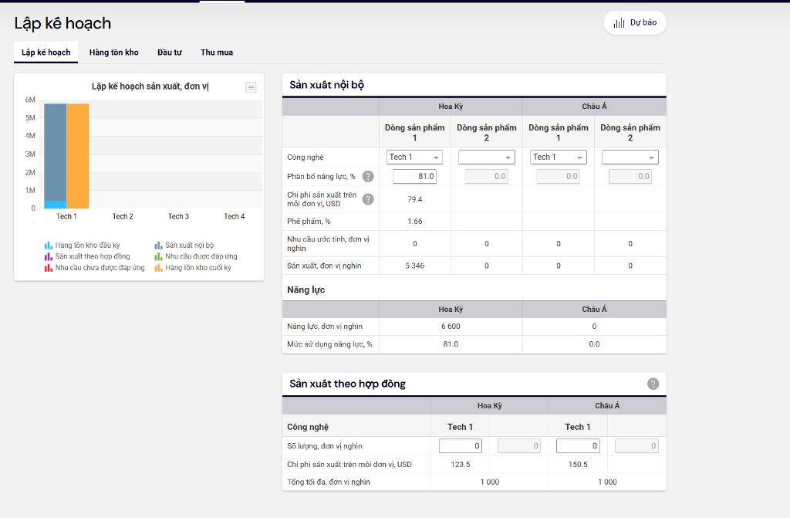
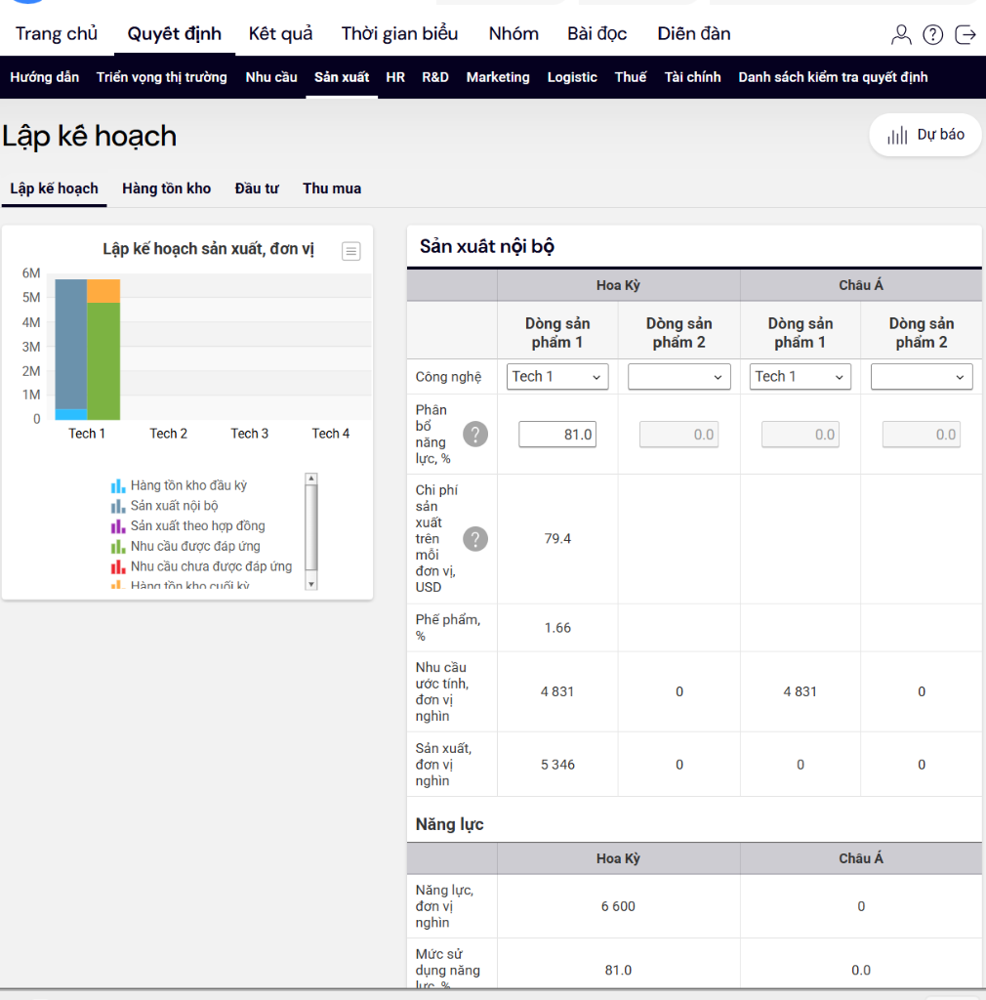
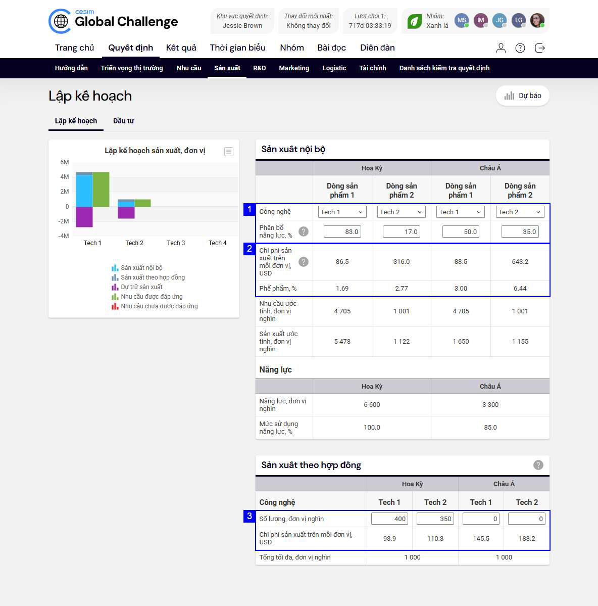
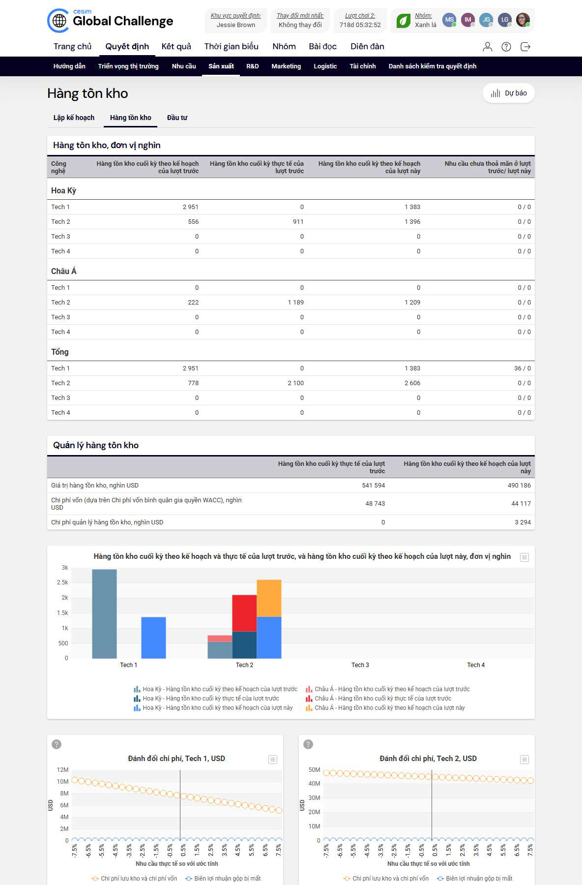
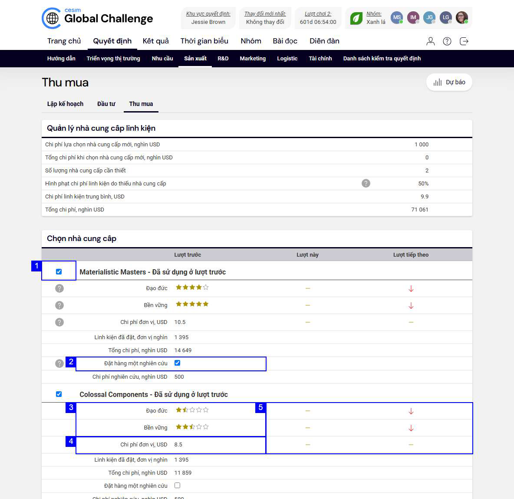
🎯 A. Ba Sub-Tab Planning, Inventory, Procurement này để làm gì?
- Sub-tab 1 —
Planning(Lập kế hoạch sản xuất —panel=production): Là nơi bạn ra lệnh sản xuất thật ([BINDING DECISION]) cho 12 nhà máy tạiUSA(và các nhà máy tạiAsia), quyết định mỗi dây chuyền chạy công nghệ nào, chạy bao nhiêu%công suất (Allocated capacity, %) và thuê đối tác bên ngoài gia công thêm bao nhiêu máy (Contract manufacturing, k units). - Sub-tab 2 —
Inventory(Hàng tồn kho —panel=inventory): Là màn hình kiểm tra đối chiếu lượng hàng tồn kho đầu kỳ (Beginning inventory), sản xuất (Production), xuất bán (Sales in USA + exports) và tồn kho cuối kỳ (Ending inventory, k USD) theo nguyên tắcFIFO. - Sub-tab 3 —
Procurement(Thu mua linh kiện —panel=procurement): Là nơi bạn tích chọn các nhà cung cấp linh kiện (Activecheckbox —[BINDING DECISION]) để tối ưu hóa đơn giá linh kiện đầu vào (Unit cost, USD) và điểm Trách nhiệm xã hội (Ethics&Sustainability), đồng thời tránh mức phạt+50%chi phí linh kiện.
🔬 B1. Bảng Đối Chiếu Song Song Từng Ô Trên Sub-Tab Production > Planning (Live Round 2 Portal)
Tên Tiếng Anh Trên Web (Exact English UI Label) & Mã Wicket decidx |
Tên Tiếng Việt (Trên Ảnh Chụp) | Loại Ô & Giá Trị Thực Tế Trên Web Vòng 2 (Last round R1 | Green & Anh Ha) |
Ô Này Là Gì & Công Thức Tính? (What It Is & Formula) |
Chỉnh Số Sao? (How to Adjust — Quy Tắc & Mục Tiêu Vòng 2) |
Ảnh Hưởng Cái Gì? (Downstream Impact — Nhảy Số Ở Đâu?) |
|---|---|---|---|---|---|
Bảng 1: Production, k units (Tóm tắt cân đối toàn cầu)• Inventory (Đầu kỳ)• In-house + Contract• Total available• Demand• Global production buffer |
Sản xuất, đơn vị nghìn• Hàng tồn kho• Sản xuất nội bộ + Theo hợp đồng• Tổng có sẵn• Nhu cầu• Dự trữ sản xuất toàn cầu |
[AUTO-CALC]• Inventory đầu R2: Tech 1 = 0, Tech 2 = 264 k!• In-house (đang đặt): T1 = 6,270k, T2 = 264k• Contract: 0 / 0• Total available: T1 = 6,270k, T2 = 528k• Demand: T1 = 6,807k, T2 = 269k• Global production buffer: T1 = -537 k (Thiếu!), T2 = +259 k |
• Total available = Inventory + In-house + Contract.• Global production buffer = Total available - Demand (Nếu âm nghĩa là thiếu hàng đứt kho; nếu dương là tồn kho dự kiến cuối kỳ). |
Không gõ trực tiếp vào bảng này; bảng này tự động nhảy khi bạn chỉnh % công suất và Contract manufacturing ở 2 bảng bên dưới! |
Cho bạn biết ngay lập tức công nghệ nào đang bị thiếu hàng (Global production buffer = -537k ở Tech 1, khớp chính xác với Unsatisfied demand = 537k tại Europe trên tab Logistics!). |
Bảng 2: In-house manufacturing — USA• Number of plants = 12, Capacity, k units = 6,600• USA, Product line 1: [SELECT] (decidx="us.line1.tech") + Ô Allocated capacity, % (decidx="us.production1")• USA, Product line 2: [SELECT] (decidx="us.line2.tech") + Ô Allocated capacity, % (decidx="us.production2") |
Sản xuất nội bộ → Hoa Kỳ• Dòng sản phẩm 1 & 2• Phân bổ năng lực, % |
[BINDING DECISION]• Last round R1 & hiện tại ở Green / Anh Ha:- Line 1 (Tech 1) = 95.0% (Production = 6,270k, Scrap = 1.49%)- Line 2 (Tech 2) = 4.0% (Production = 264k, Scrap = 2.57%) |
• Chọn công nghệ và nhập % công suất cho 2 dây chuyền tại USA (Tổng Line 1 % + Line 2 % ≤ 100%).• Lưu ý: Dòng Production, k units hiển thị sản lượng phân bổ danh nghĩa (6,600k × 95% = 6,270k), còn lượng phế phẩm Scrap, % (1.49%) đã được tính vào đơn giá sản xuất! |
👉 Tại Vòng 2 (USA):• Giữ us.line1.tech = Tech 1, us.line2.tech = Tech 2.• Vì đầu R2 đã có 264k Tech 2 tồn kho nhưng cầu Tech 2 ở cả 3 châu lục tăng vọt (~1,400k–1,700k máy), hãy tăng us.production2 (Tech 2) từ 4.0% lên 18.0% – 20.0% (1,188k – 1,320k máy T2) và đặt us.production1 (Tech 1) = 78.0% – 80.0% (5,148k – 5,280k máy T1, tổng công suất Mỹ = 98%)! |
• Quyết định trực tiếp sản lượng máy thật xuất xưởng tại Mỹ. • Tăng sản lượng Tech 2 nội bộ tại Mỹ giúp hạ mạnh Production cost per unit của Tech 2 và đẩy nhanh Global cumulative production của Tech 2 vượt điểm giao cắt đường cong học tập cho Vòng 3! |
Bảng 2: In-house manufacturing — Asia• Number of plants = 0, Capacity, k units = 0 (ở R2; sẽ lên 2 xưởng = 1,100k ở R3)• Asia, Product line 1: [SELECT] (decidx="asia.line1.tech") + Allocated capacity, % (decidx="asia.production1")• Asia, Product line 2: [SELECT] (decidx="asia.line2.tech") + Allocated capacity, % (decidx="asia.production2") |
Sản xuất nội bộ → Châu Á• Dòng sản phẩm 1 & 2• Phân bổ năng lực, % |
[BINDING DECISION]• Trên Web R2 hiện tại ( Green & 4 thành viên): Asia, Product line 1 (asia.line1.tech) ĐÃ CHỌN SẴN Tech 1, Asia, Product line 2 (asia.line2.tech) đang để trống (0% / 0%). |
Chọn công nghệ cho dây chuyền Châu Á. Cơ chế đặc biệt trên Web Cesim: Dù ở Vòng 2 Asia Capacity = 0, việc chọn Tech 1 ở Asia, Product line 1 (asia.line1.tech) đã mở khóa ngay ô nhập Contract manufacturing > Asia, Product line 1 (Tech 1) ở Bảng 3 bên dưới! |
👉 Mẹo Vàng Vòng 2 (Asia):• Giữ nguyên Asia, Product line 1 (asia.line1.tech) = Tech 1 (và có thể chọn thêm Tech 2 ở Asia, Product line 2 asia.line2.tech để mở khóa thêm ô thuê gia công Tech 2 tại Châu Á!). |
Mở khóa nguồn cung gia công tại chỗ ở Châu Á (Max. contract manufacturing = 1,090k units), giúp hàng bán ở Châu Á tốn $0 phí ship và $0 thuế quan (thay vì mất $27/unit nếu chở từ Mỹ sang Á)! |
Các dòng chỉ số kết quả trong Bảng 2 (Production cost per unit, USD & Scrap, %) |
Chi phí sản xuất trên mỗi đơn vị, USD & Phế phẩm, % |
[AUTO-CALC]• Tại USA (với 95% T1 + 4% T2 trên trang Planning):- Tech 1: Production cost per unit = $70.4 (R1 = $82.4), Scrap = 1.49%- Tech 2: Production cost per unit = $238.6 (R1 = $350.9), Scrap = 2.57% |
• Giải thích sự khác biệt giữa $70.4 trên trang Planning và $82.4 trên trang Marketing: Dòng Production cost per unit, USD trên trang Planning ($70.4 cho T1, $238.6 cho T2) là chi phí sản xuất của lô mới trong kỳ; khi sang trang Marketing, dòng Unit cost, USD ($82.4 cho T1, $300.8 cho T2) đã cộng gộp đầy đủ chi phí linh kiện/tồn kho đầu kỳ theo FIFO (264k T2 tồn R1 giá $350.94 trộn với lô mới)! |
Quan sát Production cost per unit, USD mỗi khi chỉnh % công suất: khi nâng Tech 2 từ 4% lên 18%–20%, chi phí đơn vị của Tech 2 giảm mạnh nhờ thoát khỏi vùng phạt công suất thấp của đường cong chữ U! |
Quyết định trực tiếp giá trị tồn kho cuối kỳ (Ending inventory, k USD = 259k × $238.6 = $61,704k) và giá vốn hàng bán (Variable production costs) trên Income statement! |
Bảng 3: Contract manufacturing• Max. contract manufacturing, k units: USA = 1,090, Asia = 1,090• USA: Product line 1 (decidx="us.outsource1") & Product line 2 (decidx="us.outsource2")• Asia: Product line 1 (decidx="asia.outsource1") & Product line 2 (decidx="asia.outsource2") |
Sản xuất theo hợp đồng (Thuê gia công ngoài, đơn vị nghìn) tại Hoa Kỳ & Châu Á |
[BINDING DECISION]• Green & Anh Ha: Đang để 0 ở tất cả các ô (USA = 0/0, Asia = 0/0)!• Production cost per unit, USD trên Web R2:- USA Tech 1: $123.8 / unit- USA Tech 2: $140.5 / unit (Rẻ hơn sản xuất nội bộ $238.6 tới $98/unit!)- Asia Tech 1: $148.9 / unit |
• Số lượng máy thuê đối tác gia công thêm (tối đa tổng Line 1 + Line 2 ≤ 1,090k units tại mỗi khu vực ở Vòng 2).• Phát hiện cực sốc trên bảng Contract manufacturing Web Vòng 2: Đơn giá thuê gia công ngoài cho USA, Product line 2 (Tech 2) chỉ là $140.5 / unit — RẺ HƠN TỚI $98.1 / unit so với tự sản xuất nội bộ Tech 2 ($238.6 / unit)! |
👉 Chiến lược "Ăn Chênh Lệch Gia Công" (Contract Mfg Arbitrage) Vòng 2:1. Tại USA: Nhập 600k – 900k vào ô us.outsource2 (USA, Product line 2 - Tech 2) để mua máy Tech 2 với giá siêu rẻ $140.5/unit, và nhập 200k – 400k vào us.outsource1 (Tech 1, giá $123.8/unit)!2. Tại Asia: Nhập 700k – 1,000k vào ô asia.outsource1 (Asia, Product line 1 - Tech 1) (giá $148.9/unit, bán tại Châu Á với $0 phí ship + $0 thuế quan, thay vì tốn $27/unit ship từ Mỹ)! |
• Xóa sạch 100% tình trạng đứt hàng (Global production buffer chuyển từ -537k sang dương +200k..+350k).• Riêng việc thuê gia công Tech 2 tại Mỹ ở mức giá $140.5/unit (so với giá bán $325–$340) mang lại biên lãi gộp khổng lồ +$185/máy! |
🔬 B2. Bảng Đối Chiếu Song Song Từng Ô Trên Sub-Tab Production > Inventory & Production > Procurement (Live Round 2 Portal)
Sub-Tab & Tên Tiếng Anh Trên Web (Exact English UI Label) |
Tên Tiếng Việt (Trên Ảnh Chụp) | Loại Ô & Giá Trị Thực Tế Trên Web Vòng 2 (Last round R1 | This round R2) |
Ô Này Là Gì & Công Thức Tính? (What It Is & Formula) |
Chỉnh Số Sao? (How to Adjust — Quy Tắc & Mục Tiêu Vòng 2) |
Ảnh Hưởng Cái Gì? (Downstream Impact — Nhảy Số Ở Đâu?) |
|---|---|---|---|---|---|
Sub-tab Inventory (panel=inventory):1. Bảng Summary, k USD:• Inventory value• Capital costs (based on WACC)• Inventory management costs• Unsatisfied demand, k units2. Bảng Inventory in USA, k units (Beginning inventory, Production, Sales in USA + exports, Ending inventory, Ending inventory, k USD) |
Tóm tắt, nghìn USD & Hàng tồn kho tại Hoa Kỳ, đơn vị nghìn |
[READ-ONLY / AUTO-CALC]• Summary, k USD (R1 vs R2):- Inventory value: $92,647k (R1) → $61,704k (R2)- Capital costs (WACC): $8,338k (R1) → $5,553k (R2)- Management costs: $433k (R1) → $314k (R2)- Unsatisfied demand: 1,146 k (R1) → 537 k (R2)• Inventory in USA (Tech 1 | Tech 2):- Beginning inventory: 0 | 264 k- Production: 6,270 k | 264 k- Sales in USA + exports: 6,270 k | 269 k- Ending inventory: 0 | 259 k ($61,704 kUSD) |
• Theo dõi biến động kho theo luật FIFO: 264k máy Tech 2 tồn kho cuối Vòng 1 (đơn giá R1 $350.94/unit = $92,647k) được xuất bán trước cho 269k cầu dự báo ở Vòng 2; còn 259k máy Tech 2 mới sản xuất trong Vòng 2 (đơn giá R2 $238.6/unit) nằm lại làm tồn kho cuối Vòng 2 ($61,704k). |
Không có ô nhập trực tiếp. Để đưa toàn bộ 264k máy Tech 2 tồn kho + lô sản xuất mới ra bán thu tiền thật về ở Vòng 2, bạn BẮT BUỘC phải nhập Selling price > 0 cho Tech 2 ở tab Marketing! |
Giá trị Ending inventory, k USD ($61,704k) sẽ nằm ở dòng Inventory trên Balance sheet và phần chênh lệch tồn kho ($92,647k - $61,704k = +$30,943k) làm tăng dòng tiền hoạt động trên Cash flow statement. |
Sub-tab Procurement (panel=procurement):Bảng Component purchasing• 5 ô tích Active (Checkbox dòng 1..5):- Materialistic Masters ($40.0, 4.0⭐ / 5.0⭐)- Colossal Components ($25.0, 1.5⭐ / 2.5⭐)- Quantum Quirks ($35.0, 1.5⭐ / 2.0⭐)- Fusion Dynamics ($40.0, 5.0⭐ / 3.0⭐)- Innovation Redesigned ($35.0, 3.0⭐ / 4.0⭐) |
Thu mua linh kiện• Cột Hoạt động (Active)• Đạo đức (Ethics)• Bền vững (Sustainability)• Chi phí đơn vị, USD |
[CHECKBOX - BINDING]• The number of suppliers needed = 2• Green & Anh Ha: Đang tích chọn 3 NCC: Materialistic Masters ($40), Colossal Components ($25), Innovation Redesigned ($35) → Purchases = 2,178k / NCC (tổng 6,534k), Đơn giá bình quân = $33.3 / unit, Total cost = $217,800k ($218,300k ở Anh Ha). |
• Tổng sản lượng máy sản xuất nội bộ (In-house production = 6,534k) được chia đều cho các nhà cung cấp đang tích Active (2,178k units/NCC).• Nếu số ô tích < 2, toàn bộ đơn giá linh kiện bị phạt +50%!• Nếu tích chọn một nhà cung cấp mới chưa tích ở vòng trước, mất phí mở mới $1,000 kUSD. |
👉 Tại Vòng 2: • Giữ nguyên bộ 3 NCC đang tích chọn ( Materialistic + Colossal + Innovation)! Bạn tốn $0 phí đổi nhà cung cấp, giữ nguyên đơn giá rẻ $33.3/unit và giữ vị trí Top 1 CSR (3 sao Ethics + 4 sao Sustainability) toàn vũ trụ! |
• Đơn giá linh kiện bình quân ($33.3/unit) cộng trực tiếp vào chi phí sản xuất mỗi máy.• Điểm sao Ethics & Sustainability tác động trực tiếp vào hàm cầu Market shares ở cả 3 khu vực! |
Sub-tab Procurement (panel=procurement):5 ô tích Order a study (Cost = $500 kUSD / study, Checkbox dòng 1..5) |
Đặt hàng một nghiên cứu (500 nghìn USD) |
[CHECKBOX - BINDING]• Green: Chưa tích (Total cost = $217,800k)• Anh Ha: Đang tích ở dòng Colossal Components (+$500k → Total cost = $218,300k) |
Mua báo cáo dự báo xu hướng tăng/giảm giá và điểm CSR của nhà cung cấp đó ở vòng tiếp theo (Next round). |
👉 Trong khu vực Anh Ha, nhờ tích thử ô này nên ta đã thấy trước Colossal Components ở Vòng 3 sẽ tăng điểm Ethics và tăng nhẹ giá. Khi chốt bài sang cột Green, hãy bỏ tích (Uncheck) ô này để tiết kiệm ngay $500 kUSD! |
Mỗi ô tích sẽ trừ thẳng $500 kUSD vào dòng Total cost của bảng Procurement và giảm lợi nhuận trước thuế $500 kUSD. |
Bước 4: Tab Decisions > Production > Investments (Sản xuất > Đầu tư nhà máy)
Đường dẫn trên Web (Live URL): Decisions → Production → Investments (./Decisions?panel=investments&sim=gc)
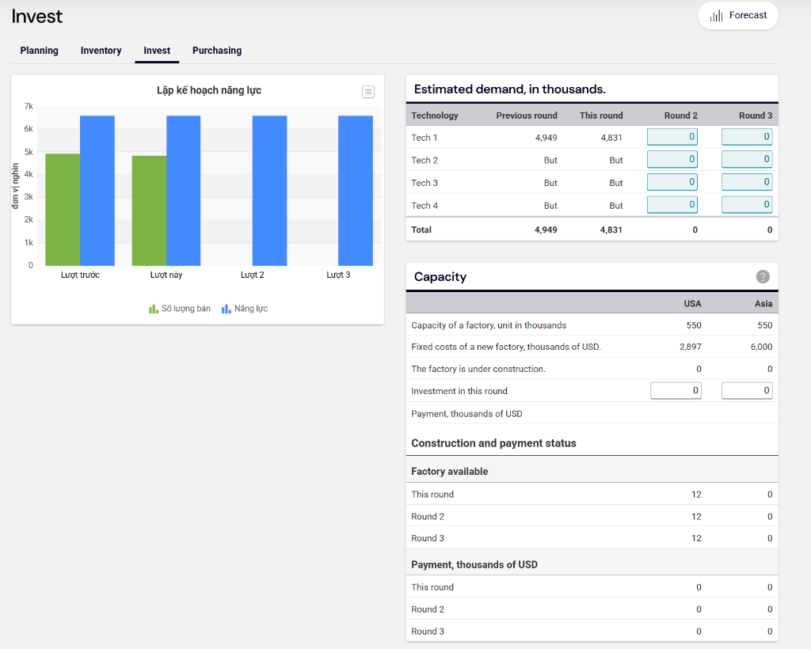
🎯 A. Sub-Tab Production > Investments này để làm gì?
- Đây là nơi bạn quyết định xây thêm nhà máy mới (
+) hoặc bán thanh lý nhà máy cũ (-) tạiUSAvàAsia(New plant investments, units—[BINDING DECISION]). - Đồng thời trang này có bảng
Demand estimates, k units(Round 3&Round 4choTech 1..4) để vẽ biểu đồ công suất và bảngNumber of plants/Plant investment coststheo dõi tiến độ xây dựng & chi phí nhà máy.
🔬 B. Bảng Đối Chiếu Song Song Từng Ô Trên Sub-Tab Production > Investments (Live Round 2 Portal)
Tên Tiếng Anh Trên Web (Exact English UI Label) & Mã Wicket decidx |
Tên Tiếng Việt (Trên Ảnh Chụp) | Loại Ô & Giá Trị Thực Tế Trên Web Vòng 2 (Last round R1 | Green & Anh Ha) |
Ô Này Là Gì & Công Thức Tính? (What It Is & Formula) |
Chỉnh Số Sao? (How to Adjust — Quy Tắc & Mục Tiêu Vòng 2) |
Ảnh Hưởng Cái Gì? (Downstream Impact — Nhảy Số Ở Đâu?) |
|---|---|---|---|---|---|
Bảng 1: Demand estimates, k units (8 ô nhập cho Tech 1..4 ở Round 3 & Round 4)• Round 3: decidx="next.round.estimate.1..4"• Round 4: decidx="round.after.estimate.1..4" |
Ước tính nhu cầu, đơn vị nghìn (Tech 1..4 cho Lượt 3 và Lượt 4) |
[INPUT - ESTIMATE]• Đang nhập trên Web R2 ( Green & 4 thành viên):- Tech 1: Round 3 = 5,500, Round 4 = 4,500- Tech 2, Tech 3, Tech 4: 0 / 0 |
Dự báo nhu cầu toàn cầu của công ty bạn theo từng công nghệ ở Round 3 và Round 4. |
👉 Gõ thêm ước tính cầu cho Tech 2: Round 3 (next.round.estimate.2) = 2,500, Round 4 (round.after.estimate.2) = 3,500 (và Tech 4 ở Round 4 = 1,000). |
Chỉ dùng để vẽ 2 cột nhu cầu cho Round 3 và Round 4 trên biểu đồ Global capacity and demand, k units (investments.graph.capacity.chart) để bạn nhìn thấy khoảng thiếu hụt công suất. |
Bảng 2: Number of plantsÔ New plant investments, units• Cột USA (decidx="us.newplants")• Cột Asia (decidx="asia.newplants") |
Số lượng nhà máy → Đầu tư nhà máy mới, đơn vị (Hoa Kỳ, Châu Á) |
[INPUT - BINDING DECISION]• Last round R1: USA = 0, Asia = 2• Green & Anh Ha (R2 hiện tại): Đang để USA = 0, Asia = 0• Dòng trạng thái R2: - Plants available: USA = 12, Asia = 0- Plants under construction: USA = 0, Asia = 2- Total: USA = 12, Asia = 2 |
Số lượng nhà máy đặt xây mới (nhập số nguyên dương 1, 2, 3...) hoặc bán thanh lý (nhập số âm -1, -2...) trong Vòng 2. |
👉 Tại Vòng 2: • Cột USA (us.newplants): Giữ bằng 0.• Cột Asia (asia.newplants): Nhập 1 hoặc 2 (xây thêm 1–2 nhà máy tại Châu Á để nâng tổng số xưởng Châu Á từ 2 lên 3–4 nhà máy = 1,650k–2,200k units/round vào Vòng 4!). |
• Trong Vòng 2 (This round): Nhà máy đặt mới ở Vòng 2 tốn $0 tiền mặt và $0 khấu hao!• Sang Vòng 3 ( Next round): Nhà máy đặt ở Vòng 2 vào trạng thái Plants under construction và trừ tiền mặt $160,000k / nhà máy tại Asia.• Sang Vòng 4 ( Round 4): Tăng dòng Plants available for production tại Asia! |
Bảng 3: Plant investment costs• Cost of a new plant, k USD• Fixed cost of a new plant, k USD |
Chi phí đầu tư nhà máy• Chi phí một nhà máy mới, nghìn USD• Chi phí cố định một nhà máy mới, nghìn USD |
[READ-ONLY / AUTO-CALC]• Cost of a new plant, k USD: USA = $140,000k, Asia = $160,000k• Fixed cost of a new plant, k USD: USA = $2,897k, Asia = $5,223k |
• Giá mua 1 nhà máy ($140M tại Mỹ, $160M tại Á).• Lưu ý: Khoản thanh toán $320,000k cho 2 nhà máy Asia đang thi công (Plants under construction = 2) đặt từ Vòng 1 đang được trừ trực tiếp vào Quỹ tiền mặt của Công ty con Asia trong Vòng 2! |
Kiểm tra để cân đối dòng tiền tại Asia trên tab Finance. |
Khoản $320,000k của 2 xưởng Asia đang thi công đi vào dòng Capital expenditures trên Cash flow statement (Global) và tăng Fixed assets trên Balance sheet Vòng 2. |
Bước 5: Tab Decisions > HR & Decisions > R&D (Nhân sự & Nghiên cứu Phát triển)
Đường dẫn trên Web (Live URL): Decisions → HR (./Decisions?panel=hr&sim=gc) và Decisions → R&D (./Decisions?panel=rnd&sim=gc)
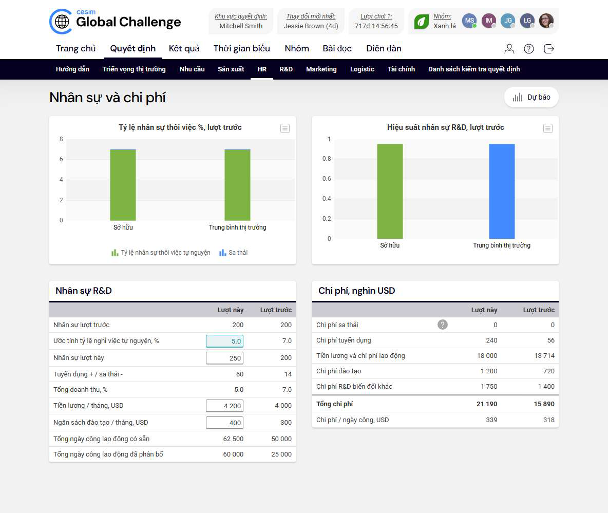
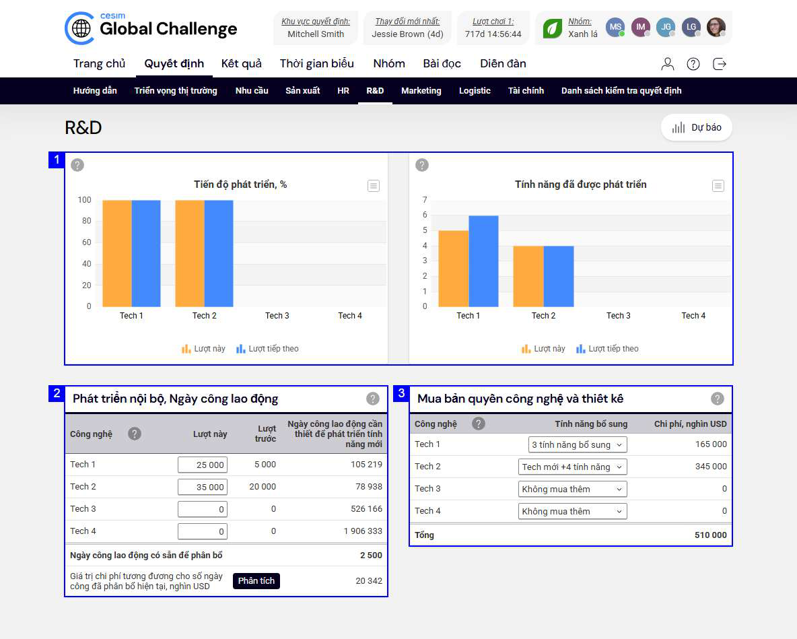
🎯 A. Hai Tab HR và R&D này để làm gì?
- Tab
HR(Nhân sự —panel=hr): Là nơi bạn quyết định quy mô đội ngũ kỹ sư R&D (Personnel this round), mức lương (Monthly wage, USD) và ngân sách đào tạo (Monthly training budget, USD) để tạo ra quỹ ngày công kỹ sư (Total available person-days=Số người× 250) với chi phí chỉ~$313–$343/ngày công. - Tab
R&D(Nghiên cứu & Phát triển —panel=rnd): Là nơi bạn tiêu quỹ ngày công kỹ sư đó (In-house development, person-days) để mở khóa công nghệ/tính năng mới vào đầu vòng sau, hoặc dùng tiền mặt mua đứt Giấy phép bản quyền (Buying technology and design licences, k USD) để có công nghệ/tính năng bán ngay trong vòng hiện tại.
🔬 B1. Bảng Đối Chiếu Song Song Từng Ô Trên Tab Decisions > HR (Live Round 2 Portal)
Tên Tiếng Anh Trên Web (Exact English UI Label) & Mã Wicket decidx |
Tên Tiếng Việt (Trên Ảnh Chụp) | Loại Ô & Giá Trị Thực Tế Trên Web Vòng 2 (Last round R1 | Green | Anh Ha) |
Ô Này Là Gì & Công Thức Tính? (What It Is & Formula) |
Chỉnh Số Sao? (How to Adjust — Quy Tắc & Mục Tiêu Vòng 2) |
Ảnh Hưởng Cái Gì? (Downstream Impact — Nhảy Số Ở Đâu?) |
|---|---|---|---|---|---|
Bảng 1: Man-daysÔ Estimate of voluntary turnover, % (decidx="rd.engineer.turnover.estimate.1") |
Ngày công → Ước tính tỷ lệ nghỉ việc tự nguyện, % |
[INPUT - ESTIMATE]• Last round R1: 5.5% (12 người nghỉ)• Green & Anh Ha: 6.0% (12 người nghỉ) |
Ước tính tỷ lệ % kỹ sư tự xin nghỉ việc trong vòng này. |
👉 Giữ ở mức 6.0% (khi bạn tăng lương lên $4,200 và đào tạo $400, tỷ lệ nghỉ việc thực tế sẽ giảm xuống dưới 6%). |
Dùng để ước tính dòng New hires (= Personnel this round - Personnel last round + Voluntary turnover) và chi phí Recruitment ($6.0k / người tuyển mới ở R2). |
Bảng 1: Man-daysÔ Personnel this round (decidx="rd.engineer.total.amount.1") |
Ngày công → Nhân sự lượt này |
[INPUT - BINDING DECISION]• Last round R1: 200 người (50,000 person-days)• Green: 200 (50,000 person-days)• Anh Ha: 285 (New hires = 97, Total available person-days = 71,250) |
Tổng số kỹ sư R&D làm việc cho công ty trong vòng này. Total available person-days = Personnel this round × 250 |
👉 Cách tính số kỹ sư chuẩn xác cho Vòng 2: • Hãy nhìn sang tab R&D: Để mở khóa Feature 2 cho Tech 2 cần đúng 70,371 person-days; để mở thêm Feature 4 cho Tech 1 cần 42,026 person-days.• Phương án 1 (Khuyến nghị của Anh Ha — Mở khóa Tech 2 Feature 2): Nhập 285 kỹ sư (71,250 person-days, đủ trọn 70,371 ngày cho Tech 2 + dư 879 ngày cho Tech 4)!• Phương án 2 (Mở khóa CẢ Tech 2 Feature 2 + Tech 1 Feature 4 cùng lúc): Nhập 450 kỹ sư (112,500 person-days ≥ 70,371 + 42,026 = 112,397 ngày công)! |
• Quyết định trực tiếp dòng Total available person-days truyền sang tab R&D.• Toàn bộ bảng Personnel costs, k USD (Total HR costs = $24,465k với 285 người) được hạch toán vào dòng R&D trên Income statement của Công ty mẹ USA! |
Bảng 2: Personnel costs, k USD• Ô Monthly wage, USD (decidx="rd.engineer.salary.1")• Ô Monthly training budget, USD (decidx="rd.engineer.training.1")• Các dòng tự tính: Salaries, Recruitment, Training, Layoff, Other R&D costs, Total HR costs |
Chi phí nhân sự, nghìn USD• Tiền lương / tháng, USD• Ngân sách đào tạo / tháng, USD |
[INPUT - BINDING DECISION]• Last round R1 & Green: Wage = $4,000, Training = $300 (Salaries = $9,600k, Recruitment = $72k, Training = $720k, Other R&D = $1,392k, Total HR costs = $11,784k ở R1)• Anh Ha (R2, 285 người): Wage = $4,200, Training = $400 (Salaries = $14,364k, Recruitment = $582k, Training = $1,368k, Layoff = $0, Other R&D = $1,984k, Total HR costs = $18,298k) |
Lương tháng và chi phí đào tạo hàng tháng cho mỗi kỹ sư: • Salaries = Personnel × Wage × 12• Recruitment = New hires × $6.0k• Training = Personnel × Training × 12• Other R&D costs = Personnel × $0.58k × 12 |
👉 Tại Vòng 2: Nhập giống hệt mức Anh Ha đã chỉnh: Monthly wage, USD = 4200 và Monthly training budget, USD = 400 (Total HR costs = $18,298k cho 285 kỹ sư = chỉ $256.8 / person-day!). |
Tăng hiệu suất làm việc của kỹ sư (R&D Efficiency > 1.00x), giảm tỷ lệ nghỉ việc tự nguyện và giảm số ngày công yêu cầu ở các vòng tiếp theo! |
🔬 B2. Bảng Đối Chiếu Song Song Từng Ô Trên Tab Decisions > R&D (Live Round 2 Portal)
Tên Tiếng Anh Trên Web (Exact English UI Label) & Mã Wicket decidx |
Tên Tiếng Việt (Trên Ảnh Chụp) | Loại Ô & Giá Trị Thực Tế Trên Web Vòng 2 (Last round R1 | Green | Anh Ha) |
Ô Này Là Gì & Công Thức Tính? (What It Is & Formula) |
Chỉnh Số Sao? (How to Adjust — Quy Tắc & Mục Tiêu Vòng 2) |
Ảnh Hưởng Cái Gì? (Downstream Impact — Nhảy Số Ở Đâu?) |
|---|---|---|---|---|---|
Bảng 1 (Bên trái): In-house development, person-days• Person-days available for allocation• Ô nhập Tech 1 (decidx="rd.engineer.allocation.tech1"), Tech 2 (decidx="rd.engineer.allocation.tech2"), Tech 3 (decidx="rd.engineer.allocation.tech3"), Tech 4 (decidx="rd.engineer.allocation.tech4")• Cột Required person-days for next new feature |
Phát triển nội bộ, Ngày công lao động• Ngày công có sẵn để phân bổ• Tech 1..4• Ngày công cần thiết để phát triển tính năng mới |
[INPUT - BINDING DECISION]• Required person-days trên Web R2:- Tech 1 (đang có 3F → lên 4F): 42,026- Tech 2 (đang có 1F → lên 2F): 70,371- Tech 3: Hiện 87,881 ở Anh Ha (vì đang chọn mua License $480M; nếu không mua License là ~538,903)- Tech 4 (từ đầu): 722,566• Đang nhập ở Green (50,000 dư) & Anh Ha (71,250 dư): 0 / 0 / 0 / 0 (Chưa phân bổ!) |
• Phân bổ quỹ ngày công kỹ sư từ tab HR vào 4 công nghệ.• Độ trễ 1 vòng: Ngày công phân bổ ở Vòng 2 sẽ hoàn thành và mở khóa tính năng mới vào đầu Vòng 3 ( Next round).• Chi phí tăng thêm = $0! (Vì tiền lương kỹ sư $18,298k đã trả trọn gói ở tab HR dù bạn có phân bổ hay không!). |
🚨 CẢNH BÁO ĐỎ TRÊN WEB HIỆN TẠI: Cả cột Green (có 50,000 ngày công) và khu vực Anh Ha (vừa tuyển lên 285 người = 71,250 ngày công) đều đang để 4 ô Tech 1..4 = 0 (Person-days available for allocation = 71,250 chưa phân bổ)!👉 Hành động bắt buộc ở Vòng 2: • Với 285 kỹ sư (71,250 ngày): Gõ 70,371 vào ô Tech 2 (rd.engineer.allocation.tech2) và gõ 879 vào ô Tech 4 (rd.engineer.allocation.tech4)!• (Hoặc nếu nâng lên 450 kỹ sư = 112,500 ngày: Gõ 42,026 vào Tech 1, 70,371 vào Tech 2, 103 vào Tech 4!)• Đảm bảo dòng Person-days available for allocation giảm về đúng 0! |
• Biểu đồ Development progress, % (rnd.graph.features.chart) ở trên cùng sẽ vọt lên 100% cho cột mốc tiếp theo.• Đầu Vòng 3, Total features available của Tech 2 sẽ tăng từ 1 lên 2 features (và Tech 1 lên 4 features nếu chọn 450 kỹ sư), giúp đội Green đè bẹp Ochre mà chỉ tốn $18.3M tiền lương kỹ sư thay vì $117M–$201M tiền mua License! |
Bảng 2 (Bên phải): Buying technology and design licences, k USD4 hộp chọn [SELECT]:• Tech 1 (decidx="license.tech1")• Tech 2 (decidx="license.tech2")• Tech 3 (decidx="license.tech3")• Tech 4 (decidx="license.tech4") |
Mua bản quyền công nghệ và thiết kế, nghìn USD (Tech 1..4) |
[SELECT - BINDING DECISION]• Green (và Dung, Dai, Tran): Cả 4 công nghệ đều là No additional purchases ($0)• Anh Ha: Đang chọn thử Tech 3 = New tech +1 feature (Cost = $480,000 kUSD!) |
• Mua đứt công nghệ hoặc tính năng mới từ bên ngoài, có hiệu lực ngay lập tức trong Vòng 2. • Các mức giá trên Dropdown Vòng 2: - Tech 1: +1F = $84,487k, +2F = $192,163k- Tech 2: +1F = $116,959k, +2F = $262,053k- Tech 3: New+1F = $480,000k, New+2F = $627,139k- Tech 4: New+1F = $600,000k, New+2F = $793,766k |
🚨 PHÁT HIỆN QUAN TRỌNG TRÊN KHU VỰC Anh Ha: Trong khu vực cá nhân Anh Ha, hộp chọn Tech 3 (license.tech3) đang được chọn thử là New tech +1 feature ($480,000 kUSD) trong khi Tech 3 chưa hề có sóng mạng ở Mỹ (0%) và Âu (0%), và cũng không được bày bán ở đâu! Khoản $480,000 kUSD này (cộng với $18,298k HR làm dòng R&D trên P&L vọt lên $498,298k) chính là nguyên nhân làm Lợi nhuận dự báo của cột Anh Ha bị âm -$24,257k!👉 Hành động bắt buộc ở Vòng 2: Đặt cả 4 hộp chọn license.tech1..4 về No additional purchases ($0)! |
Mỗi đồng mua License ở bảng này sẽ bị trừ thẳng 100% vào dòng chi phí R&D trên Income statement của Công ty mẹ USA và rút trực tiếp tiền mặt tại Mỹ. Đưa license.tech3 về No additional purchases ($0) giúp phục hồi ngay lập tức +$480,000 kUSD lợi nhuận trước thuế và tiền mặt tại USA! |
Bước 6: Tab Decisions > Marketing > USA / Asia / Europe (Marketing Hoa Kỳ, Châu Á, Châu Âu)
Đường dẫn trên Web (Live URL): Decisions → Marketing → Lần lượt bấm vào cả 3 sub-tab khu vực: USA (./Decisions?panel=marketingusa&sim=gc) | Asia (./Decisions?panel=marketingasia&sim=gc) | Europe (./Decisions?panel=marketingeurope&sim=gc)
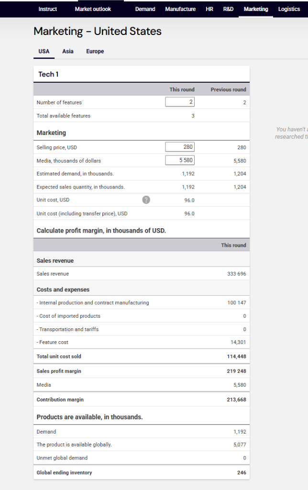
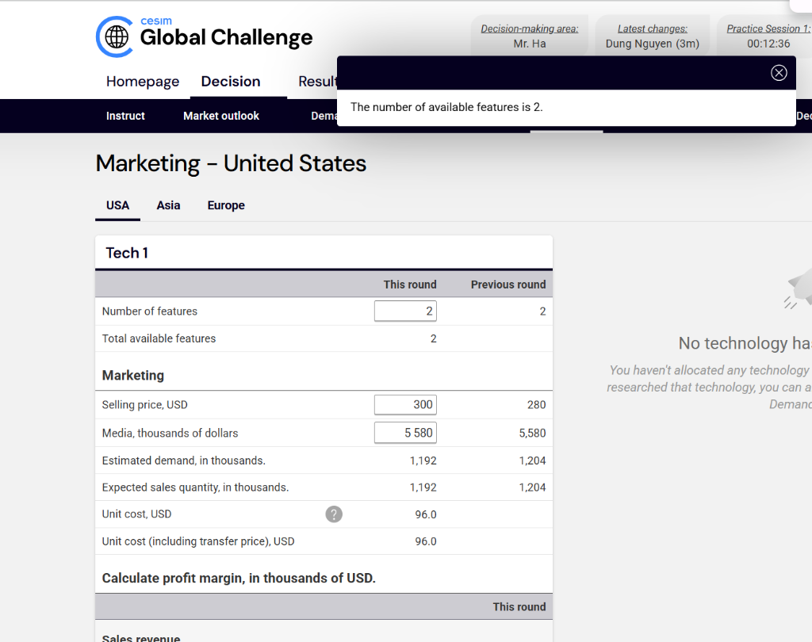
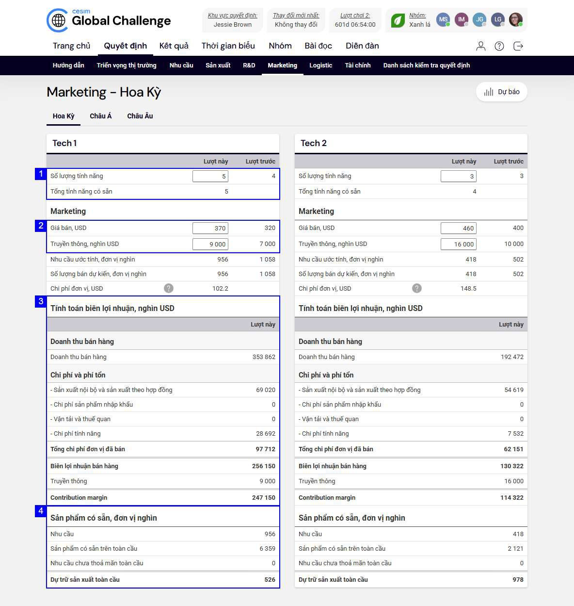
🎯 A. Ba Sub-Tab Marketing > USA / Asia / Europe này để làm gì?
- Đây là Mặt trận Kiếm Tiền Trực Tiếp (
Revenue Engine) của công ty. Mọi con số bạn gõ vào 3 sub-tab này (Number of features,Selling price,Promotion) đều là Quyết định Ràng buộc Thật ([BINDING DECISION]). - Khi khóa sổ, máy chủ Cesim sẽ lấy bộ 3 thông số (
Selling price,Number of features,Promotion) của bạn tại từng khu vực đi so sánh trực tiếp với 5 đội đối thủ để chia thị phần thực tế!
🔬 B. Bảng Đối Chiếu Song Song Từng Ô Trên 3 Sub-Tab Marketing > USA / Asia / Europe (Live Round 2 Portal)
Tên Tiếng Anh Trên Web (Exact English UI Label trên Marketing - USA / Asia / Europe) |
Tên Tiếng Việt (Trên Ảnh Chụp) | Loại Ô & Giá Trị Thực Tế Trên Web Vòng 2 (Last round R1 | Green & Anh Ha) |
Ô Này Là Gì & Công Thức Tính? (What It Is & Formula) |
Chỉnh Số Sao? (How to Adjust — Quy Tắc & Mục Tiêu Vòng 2) |
Ảnh Hưởng Cái Gì? (Downstream Impact — Nhảy Số Ở Đâu?) |
|---|---|---|---|---|---|
Bảng 1: Marketing - USA / Asia / EuropeDòng Number of features (Product 1: Tech 1 & Product 2: Tech 2)(Ngay dưới có dòng Available features) |
Số lượng tính năng (Ngay dưới có dòng Các tính năng có sẵn) |
[INPUT - BINDING DECISION]• Available features trên Web R2: Tech 1 = 3, Tech 2 = 1!• Đang nhập ở cả 5 cột ( Green & 4 thành viên):- USA: T1 = 2, T2 = 1- Asia: T1 = 2, T2 = 1- Europe: T1 = 2, T2 = 1 |
• Số lượng tính năng gắn vào sản phẩm bán ra (từ 1 đến Available features).• Phát hiện quan trọng trên Web R2: Nhờ 50,000 ngày công R&D ở Vòng 1, dòng Available features của Tech 1 đã tăng lên 3, nhưng cả 5 cột trên web đều đang để quên Number of features = 2 ở cả 3 khu vực! |
👉 Hành động bắt buộc ở Vòng 2: • Đối với Tech 1 (Product 1): Sửa ngay Number of features từ 2 lên 3 tại cả USA, Asia và Europe! (Chi phí chỉ tăng thêm $6.0/unit nhưng sức hút thị phần tăng vọt, đặc biệt tại Europe nơi khách hàng nhạy cảm số 1 với tính năng!).• Đối với Tech 2 (Product 2): Giữ bằng 1 (tối đa hiện có). |
• Mỗi tính năng gắn thêm làm tăng dòng Feature costs thêm đúng $6.0/unit (ở cả Tech 1 lẫn Tech 2).• Tăng trực tiếp sức cạnh tranh sản phẩm và cho phép bạn nâng giá bán thêm $15–$35/unit! |
Bảng 1: Marketing - USA / Asia / EuropeDòng Selling price, USD / RMB / EUR (Product 1: Tech 1 & Product 2: Tech 2)(Tại Asia và Europe có dòng Selling price, USD quy đổi tự động ngay bên dưới) |
Giá bán, USD / RMB / EUR(Theo nội tệ: USD tại Mỹ, RMB tại Á, EUR tại Âu) |
[INPUT - BINDING DECISION]• Đang nhập ở cả 5 cột (Giống hệt R1): - USA: T1 = $280, T2 = 0 (blank)!- Asia: T1 = 1,950 RMB ($240.8), T2 = 0 (blank)!- Europe: T1 = 150 EUR ($216.0), T2 = 0 (blank)! |
• Giá bán lẻ công bố cho khách hàng bằng đồng nội tệ. • 🚨 PHÁT HIỆN CHẾT NGƯỜI TRÊN TAB Marketing - USA VÒNG 2: Vì ở tab Demand, dòng USA Tech 2 đang ước tính 3.0% (Estimated demand = 269k units), nhưng trên tab Marketing - USA ô Selling price, USD của Tech 2 lại đang để 0, nên bảng Margin calculation bên dưới đang ghi nhận Sales revenue = $0, nhưng vẫn trừ Variable production costs = -$79,416k (269k máy × $300.8) và Feature costs = -$1,616k (269k × $6.0), gây ra KHOẢN LỖ BIÊN ĐÓNG GÓP Contribution margin = -$81,032 kUSD trên báo cáo Projections! |
👉 Mức giá Khuyến nghị Vòng 2 (Soi từ giá Vòng 1 của Ochre & Blue trong Market reports):• USA (USD): Tech 1 (3F) = 290 – 295; Tech 2 (1F) = 325 – 340 (R1 Ochre bán T2 2F giá $320, Blue bán T1 3F giá $300).• Asia (RMB): Tech 1 (3F) = 2,060 – 2,120 ($254–$262); Tech 2 (1F) = 2,750 – 2,950 (R1 Ochre bán T2 giá 3,300 RMB).• Europe (EUR): Tech 1 (3F) = 175 – 188 ($252–$271 — Sửa ngay mức giá quá rẻ 150 EUR làm cháy kho 1,146k máy ở R1!); Tech 2 (1F) = 205 – 220 (R1 Ochre bán T2 giá 200 EUR). |
• Chỉ riêng việc gõ Selling price = 330 cho Tech 2 tại USA đã biến khoản lỗ -$81,032k thành lãi dương +$7,830k (tăng ngay +$88,862 kUSD lợi nhuận hoạt động cho 269k máy Tech 2!).• Khi bán toàn bộ ~1,500k máy Tech 2 trên 3 châu lục, doanh thu tăng thêm hơn +$450,000 kUSD! |
Bảng 1: Marketing - USA / Asia / EuropeDòng Promotion, k USD (Product 1: Tech 1 & Product 2: Tech 2) |
Truyền thông, nghìn USD (Luôn tính bằng k USD ở cả 3 châu lục!) |
[INPUT - BINDING DECISION]• Đang nhập ở cả 5 cột: - USA: T1 = $8,000k, T2 = 0- Asia: T1 = $10,000k, T2 = 0- Europe: T1 = $7,000k, T2 = 0 |
Ngân sách quảng cáo tiếp thị cho từng dòng sản phẩm tại từng khu vực (luôn nhập bằng nghìn USD). |
👉 Tại Vòng 2 (Nhập đủ cho cả Tech 1 và Tech 2):• USA (Nhạy cảm #1 với quảng cáo; ở R1 Ochre chi $15,000k/dòng): Tech 1 = 9,000 – 10,000, Tech 2 = 7,000 – 8,000.• Asia: Tech 1 = 11,000 – 12,000, Tech 2 = 6,000 – 7,000.• Europe: Tech 1 = 8,500 – 9,500, Tech 2 = 7,000 – 8,000. |
• Tăng thị phần thực tế và sức mạnh thương hiệu dài hạn. • Trừ trực tiếp vào dòng Promotion trên bảng Margin calculation và dòng Sales and marketing trên P&L khu vực. |
Bảng 2: Margin calculation, k USD & Bảng 3: Unit costs, USD (Sales revenue, Variable production costs, Feature costs, Transportation costs incl. tariffs, Gross profit, Promotion, Contribution margin, Unsatisfied demand) |
Tính toán biên lợi nhuận, nghìn USD & Chi phí đơn vị, USD |
[AUTO-CALC]• Trạng thái hiện tại trên Web R2 ( Anh Ha, khi TP = 2.00 và T2 Price = 0):- USA: T1 Contrib. = +$274,072k, T2 Contrib. = -$81,032k (Unit cost: T1 = $82.4, T2 = $300.8)- Asia: T1 Contrib. = +$171,722k, T2 = $0 (Unit cost T1 = $172.0 do TP=2.00 + $27 ship!)- Europe: T1 Contrib. = +$27,114k, T2 = $0 (Unit cost T1 = $156.9 do TP=2.00, Unsatisfied demand = 537k!) |
Tự động tính toán lãi gộp và biên đóng góp của từng sản phẩm tại khu vực đó. (Lưu ý: Unit cost, USD ở Asia và Europe đã nhân với hệ số Transfer pricing từ tab Tax — trên Green với TP = 1.00, Unit cost tại Asia và Europe thấp hơn hẳn Anh Ha!). |
Sau khi nhập Features, Selling price, Promotion, nhìn xuống dòng Contribution margin (phải dương lớn cho cả Tech 1 và Tech 2) và dòng Unsatisfied demand, k units (phải bằng 0). |
Toàn bộ các dòng trong bảng Margin calculation cộng gộp trực tiếp lên Income statement của USA, Asia, Europe và Global! |
Bước 7: Tab Decisions > Logistics (Tiếp vận & Thứ tự ưu tiên giao hàng Prioritize)
Đường dẫn trên Web (Live URL): Decisions → Logistics (./Decisions?panel=logistics&sim=gc)
🎯 A. Tab Logistics này để làm gì?
- Khi tổng số đơn đặt hàng thực tế của khách hàng trên toàn cầu vượt quá tổng số máy bạn có sẵn trong kho + sản xuất mới, hệ thống bắt buộc phải cắt giảm lượng hàng giao (
Unsatisfied demand / Stockout) ở một khu vực nào đó. - Tab
Logisticscho phép bạn cài đặt Thứ tự ưu tiên giao hàng (Prioritize: 1, 2, 3—[BINDING DECISION]): Khu vực xếp số1được giao đủ100%đơn hàng trước → Khu vực xếp số2được giao tiếp theo → Khu vực xếp số3phải chịu toàn bộ phần đứt hàng (Stockout)!
🔬 B. Bảng Đối Chiếu Song Song Từng Ô Trên Tab Decisions > Logistics (Live Round 2 Portal)
Tên Tiếng Anh Trên Web (Exact English UI Label) & Mã Wicket decidx |
Tên Tiếng Việt (Trên Ảnh Chụp) | Loại Ô & Giá Trị Thực Tế Trên Web Vòng 2 (Last round R1 | Green & Anh Ha) |
Ô Này Là Gì & Công Thức Tính? (What It Is & Formula) |
Chỉnh Số Sao? (How to Adjust — Quy Tắc & Mục Tiêu Vòng 2) |
Ảnh Hưởng Cái Gì? (Downstream Impact — Nhảy Số Ở Đâu?) |
|---|---|---|---|---|---|
Bảng 1 (Bên trái): PrioritizeFrom USA:• 1. Hộp chọn ưu tiên số 1 (decidx="us.priority")• 2. Hộp chọn ưu tiên số 2 (decidx="us.priority.2")• 3. Thị trường còn lại (Tự động nhảy) |
Ưu tiên → Từ Hoa Kỳ( 1., 2., 3.) |
[SELECT - BINDING DECISION]• Last round R1 & hiện tại ở cả 5 cột:- 1. USA- 2. Asia- 3. Europe (Khiến Châu Âu bị đứt hàng mất 1,146k máy ở R1 và đang báo thiếu Unsatisfied demand = 537k máy ở R2!) |
Xếp hạng ưu tiên giao hàng cho các lô máy xuất xưởng từ nhà máy USA. |
👉 Quy tắc Vàng (Nhìn vào biểu đồ Unit revenue and cost excluding features, USD — logistics.graph.unit.revenue.chart ngay góc dưới bên trái):• Sau khi bạn nâng giá Europe lên 175–188 EUR ($252–$271 USD theo tỷ giá mới 1.44, trừ phí ship từ Mỹ $12 còn thu thuần $240–$259/unit), biên lợi nhuận mỗi máy xuất từ Mỹ sang Europe CAO HƠN HẲN Asia (2,080 RMB = $256.88, trừ ship+thuế từ Mỹ $27 chỉ còn $229.88/unit)!• Do đó, hãy đổi hộp chọn 2. (us.priority.2) từ Asia sang Europe → Thứ tự chuẩn: 1. USA, 2. Europe, 3. Asia! |
• Bảo vệ tuyệt đối 100% đơn hàng biên lợi nhuận cao tại USA và Europe.• Phần nhu cầu tại Asia được đáp ứng trực tiếp bằng lô Contract manufacturing tại chỗ ở Asia ($0 phí ship)! |
Bảng 1 (Bên trái): PrioritizeFrom Asia (1., 2., 3.) |
Ưu tiên → Từ Châu Á( 1., 2., 3.) |
[SELECT - BINDING DECISION]Hiện tại ở cả 5 cột đang là: 1. USA, 2. Asia, 3. Europe (hoặc Asia / USA / Europe). |
Xếp hạng ưu tiên giao hàng cho các lô máy xuất xưởng hoặc gia công từ Asia. |
👉 Đối với hàng xuất xưởng tại Asia: Đặt thứ tự ưu tiên là 1. Asia ($0 phí ship, tiết kiệm $27/unit), 2. Europe ($8/unit phí ship), 3. USA ($27/unit phí ship). |
Tối thiểu hóa tổng chi phí Transportation and tariffs trên Income statement. |
Bảng 2 (Bên phải): Logistics, k units (USA, Asia, Europe) |
Kế hoạch tiếp vận, đơn vị nghìn |
[AUTO-CALC]• USA: Production = 6,270k (T1) / 264k (T2), Exports to Asia = 3,486k, Exports to Europe = 1,213k, Sales in USA = 1,572k (T1) / 269k (T2)• Asia: Imports from USA = 3,486k, Sales in Asia = 3,486k• Europe: Imports from USA = 1,213k, Sales in Europe = 1,213k, Unsatisfied demand = 537k |
Bảng cân đối luồng hàng xuất - nhập - tồn giữa 3 châu lục dựa trên dự báo cầu và sản xuất. | Kiểm tra dòng Unsatisfied demand của cả 3 khu vực (USA, Asia, Europe) phải bằng 0. |
Luồng hàng xuất khẩu (Exports from USA to Asia = 3,486k và to Europe = 1,213k) chính là lượng hàng chịu tác động của hệ số Transfer pricing ở tab Tax! |
Bước 8: Tab Decisions > Tax (Thuế & Chuyển giá nội bộ Transfer pricing)
Đường dẫn trên Web (Live URL): Decisions → Tax (./Decisions?panel=tax&sim=gc)
🎯 A. Tab Tax này để làm gì?
- Đây là nơi bạn sử dụng 4 hệ số chuyển giá nội bộ (
Transfer pricing: 1.00 – 2.00—[BINDING DECISION]) để điều chỉnh giá bán buôn nội bộ khi nhà máy ởUSA(hoặcAsia) xuất khẩu máy sang công ty con ở châu lục khác. - Mục tiêu duy nhất: Làm cho dòng
Income taxes(Global) nhỏ nhất có thể → từ đó làm dòngProfit for the round(Global) lớn nhất có thể!
🔬 B. Bảng Đối Chiếu Song Song Từng Ô Trên Tab Decisions > Tax (Live Round 2 Portal: Đối Chiếu Green = 1.00 vs. Anh Ha = 2.00)
Tên Tiếng Anh Trên Web (Exact English UI Label trên Tax) |
Tên Tiếng Việt (Trên Ảnh Chụp) | Loại Ô & Giá Trị Thực Tế Trên Web Vòng 2 (Last round R1 | Green | Anh Ha) |
Ô Này Là Gì & Công Thức Tính? (What It Is & Formula) |
Chỉnh Số Sao? (How to Adjust — Quy Tắc & Mục Tiêu Vòng 2) |
Ảnh Hưởng Cái Gì? (Downstream Impact — Nhảy Số Ở Đâu?) |
|---|---|---|---|---|---|
Bảng 1 (Bên trái): Transfer pricing (4 ô nhập Multiplier for direct production cost, từ 1.00 đến 2.00):• USA → Asia• USA → Europe• Asia → USA• Asia → Europe |
Chuyển giá (Hệ số nhân chi phí sản xuất trực tiếp, từ 1.00 đến 2.00) |
[INPUT - BINDING DECISION]• Last round R1: 1.50 / 1.50 / 1.00 / 1.00• Green (và Dung, Dai, Tran ở R2): 1.00 / 1.00 / 1.00 / 1.00 (Đã chỉnh chuẩn về 1.00!)• Anh Ha (R2): 2.00 / 2.00 / 1.00 / 2.00 |
• Hệ số nhân (1.00x đến 2.00x) áp lên chi phí sản xuất biến đổi khi xuất khẩu nội bộ.• Gõ 1.00: Để lại 100% lợi nhuận thương mại ở nơi nhập khẩu (Asia / Europe).• Gõ 2.00: Hút tối đa lợi nhuận về nơi sản xuất (USA / Asia). |
👉 Giải phẫu trực tiếp sự khác biệt giữa cột Green (1.00) và Anh Ha (2.00) trên Web Vòng 2:1. Tại sao Anh Ha đang đặt 2.00? Vì trong khu vực Anh Ha đang thử mua License Tech 3 = $480,000k tại Mỹ làm USA Operating profit (EBIT) = -$160,115k, nên Anh Ha kéo Transfer pricing lên 2.00 để hút lợi nhuận từ Asia/Europe về bù lỗ cho USA!2. Khi hủy License Tech 3 ($480M) về $0 (như ở cột Green): Lúc này USA KHÔNG còn lỗ nữa mà có lãi dương lớn! Vì thuế suất Vòng 2 là Asia (18.0%) < Europe (31.0%) < USA (38.0%), việc đặt 1.00 / 1.00 / 1.00 / 1.00 như cột Green đang có sẵn là HOÀN HẢO 100% khi USA EBT > 0! |
• Giữ Transfer pricing = 1.00 / 1.00 / 1.00 / 1.00 (như cột Green) giúp toàn bộ lợi nhuận xuất khẩu nằm lại ở Asia (chịu thuế chỉ 18.0%) và Europe (chịu thuế 31.0%) thay vì kéo về USA chịu thuế 38.0%, tiết kiệm trực tiếp ~$45,000k – $65,000k tiền thuế TNDN!• (Lưu ý: Nếu ở khu vực Anh Ha bạn đã bấm Import từ Green hoặc sau khi hủy License $480M, nhớ đổi 4 ô Transfer pricing từ 2.00 / 2.00 / 1.00 / 2.00 về 1.00 / 1.00 / 1.00 / 1.00!). |
Bảng 2 (Bên phải): Taxes, k USD (Global, USA, Asia, Europe)• Operating profit (EBIT)• Profit before tax• Loss carryforward• Taxable profit• Statutory tax rate, % (38.0% / 18.0% / 31.0%)• Income taxes & Effective tax rate, %• Profit for the round |
Thuế, nghìn USD• Lợi nhuận hoạt động (EBIT)• Lợi nhuận trước thuế• Lỗ kết chuyển• Lợi nhuận chịu thuế• Thuế suất luật định• Thuế thu nhập & Tỷ lệ thuế thực tế• Lợi nhuận của lượt |
[AUTO-CALC]• Trạng thái thực tế đang hiển thị ở Anh Ha (với License $480M & TP = 2.00):- USA: EBIT = -$160,115k, EBT = -$168,287k, Tax = $0- Asia: EBIT = +$161,722k, Tax (18%) = $29,110k, Profit = +$132,612k- Europe: EBIT = +$17,114k, Tax (31%) = $5,305k, Profit = +$11,808k- Global: EBIT = +$18,721k, EBT = +$10,158k, Tax = $34,415k, Profit = -$24,257k• Trạng thái ở cột Green ($0 License & TP = 1.00): Profit = +$454,629k! |
• Bảng đối chiếu trực tiếp thuế TNDN của 3 châu lục. • Lưu ý: Dòng Loss carryforward ở đầu Vòng 2 của đội Green bằng $0 ở cả 3 khu vực (vì ở Vòng 1 cả 3 khu vực USA, Asia, Europe đều có lãi trước thuế dương!). |
Luôn nhìn vào dòng Income taxes (Global) và Profit for the round (Global) khi chỉnh 4 ô Transfer pricing: khi không mua License R&D lớn, bộ số 1.00 / 1.00 / 1.00 / 1.00 luôn cho Income taxes (Global) thấp nhất! |
Quyết định trực tiếp dòng Income taxes và Profit for the round trên Income statement. |
Bước 9: Tab Decisions > Finance & Drawer Projections (Tài chính & Báo cáo Dự báo Income statement / Balance sheet / Ratios)
Đường dẫn trên Web (Live URL): Decisions → Finance (./Decisions?panel=finance&sim=gc) & Nút Projections ở góc trên bên phải
🎯 A. Tab Finance và Cửa Sổ Projections này để làm gì?
- Tab
Finance(Tài chính —panel=finance): Là trung tâm điều phối dòng tiền (Parent company's cash flow statement, k USD), cấu trúc nợ/vốn chủ sở hữu (Debt / Equity decisions), quản lý ngân quỹ quốc tế (Internal loans / International treasury management) và trả thưởng cho cổ đông (Dividend&Share buyback) tại Công ty mẹUSA. - Nút
Projections(Dự báo): Mở ngăn kéo kiểm tra tức thì 3 báo cáo dự báo hợp nhất và từng khu vực (Income statement,Balance sheet,Ratios) để xác nhận lợi nhuận ròng, biên lợi nhuận và số dư tiền mặt cuối kỳ trước khi chốt bài.
🔬 B1. Bảng Đối Chiếu Song Song Từng Ô Trên Tab Decisions > Finance (Live Round 2 Portal)
Tên Tiếng Anh Trên Web (Exact English UI Label) & Mã Wicket decidx |
Tên Tiếng Việt (Trên Ảnh Chụp) | Loại Ô & Giá Trị Thực Tế Trên Web Vòng 2 (Last round R1 | Green & Anh Ha) |
Ô Này Là Gì & Công Thức Tính? (What It Is & Formula) |
Chỉnh Số Sao? (How to Adjust — Quy Tắc & Mục Tiêu Vòng 2) |
Ảnh Hưởng Cái Gì? (Downstream Impact — Nhảy Số Ở Đâu?) |
|---|---|---|---|---|---|
Bảng 1: Debt decisionsÔ Increase (+) / decrease (-) of long-term debt, k USD (decidx="long.debt")(Kèm dòng Long-term debt interest rate, %) |
Quyết định nợ• Tăng (+) / giảm (-) nợ dài hạn, nghìn USD• Lãi suất nợ dài hạn, % |
[INPUT - BINDING DECISION]• Last round R1: -$100,000k (Interest rate = 4.05%)• Hiện tại trên Web R2 (Cả 5 cột Green & 4 thành viên): Đang để 0 (Long-term debt interest rate = 3.95%) |
• Nhập số dương (+) để vay thêm nợ dài hạn (lãi suất R2 chỉ 3.95%).• Nhập số âm ( -) để trả bớt nợ dài hạn (Long-term loans hiện đang là $509,789k). |
👉 Tại Vòng 2: Bạn có thể giữ bằng 0 (hoặc trả bớt -50,000 đến -100,000 sau khi đã hủy License $480M và thu tiền bán hàng), đảm bảo Ending cash tại USA luôn dư dả và Equity ratio nằm trong vùng 45% – 65%! |
Giảm dư nợ Long-term loans trên Balance sheet và giảm chi phí lãi vay (Net financing expenses) trên Income statement. |
Bảng 1: Equity decisions• Share issue, k shares (decidx="share.issue")• Share buyback, k shares (decidx="share.buyback")• Dividend, k USD (decidx="dividends") |
Quyết định vốn cổ phần• Phát hành cổ phiếu, nghìn cổ phiếu• Mua lại cổ phiếu, nghìn cổ phiếu• Chi trả cổ tức, nghìn USD |
[INPUT - BINDING DECISION]• Last round R1 & hiện tại ở cả 5 cột: Đang để 0 / 0 / 0 (Number of shares = 30,000k, Share price R1 = $240.09) |
• Share issue: Phát hành cổ phiếu mới.• Share buyback: Mua lại cổ phiếu quỹ để giảm số lượng cổ phiếu lưu hành (30,000k giảm xuống), đẩy EPS và Share price tăng vọt.• Dividend, k USD: Tổng số tiền mặt (tính bằng nghìn USD) chia cổ tức cho cổ đông. |
👉 Tại Vòng 2: 1. Share issue, k shares (share.issue): LUÔN LUÔN ĐỂ 0 (Tuyệt đối cấm phát hành cổ phiếu!).2. Share buyback, k shares (share.buyback): Nhập 300 đến 500 (nghìn cổ phiếu, tốn khoảng ~$72,000k – $120,000k).3. Dividend, k USD (dividends): Nhập 30,000 đến 60,000 ($30M – $60M cổ tức tiền mặt) để bắt đầu hưởng lãi kép trên cổ tức từ Vòng 2! |
• Trực tiếp bơm vào cả 3 thành phần trên tử số của công thức Cumulative TSR (p.a.), %: tăng EPS → tăng Share price + cộng Cumulative dividends per share + kích hoạt Interest on dividends! |
Bảng 1: Internal loans (Treasury management), k USD• USA → Asia (+), Asia → USA (-) (decidx="cash.us.to.asia")• USA → Europe (+), Europe → USA (-) (decidx="cash.us.to.eu") |
Khoản vay nội bộ (Quản lý ngân quỹ), nghìn USD• Hoa Kỳ → Châu Á (+), Châu Á → Hoa Kỳ (-)• Hoa Kỳ → Châu Âu (+), Châu Âu → Hoa Kỳ (-) |
[INPUT - BINDING DECISION]• Last round R1 & hiện tại ở cả 5 cột: Đang để 0 / 0• Số dư Tiền mặt thực tế trên biểu đồ International treasury management, k USD (finance.graph.treasury.chart ở Anh Ha):- USA Cash: $235,488 k (Short-term debt = $0)- Asia Cash: $165,061 k (Short-term debt = $0)- Europe Cash: $137,121 k (Short-term debt = $0) |
• Điều chuyển tiền mặt nội bộ giữa Công ty mẹ USA và 2 Công ty con Asia, Europe.• Gõ số dương ( +): Chuyển tiền từ USA sang Asia / Europe.• Gõ số âm ( -): Rút tiền mặt từ Asia / Europe về Công ty mẹ USA! |
👉 Giải phẫu thực tế từ biểu đồ International treasury management Vòng 2:• Nhờ Asia đầu Vòng 2 có sẵn $310,460k tiền mặt + dòng tiền hoạt động Vòng 2 (+$174,601k), Công ty con Asia đã tự thanh toán trực tiếp $320,000k tiền xây 2 nhà máy Châu Á mà vẫn còn dư $165,061k tiền mặt (Short-term debt = $0)!• Trong khi đó Europe đang dư $137,121k và USA đang dư $235,488k (và khi hủy License $480M, tiền mặt tại USA lên tới ~$500,000k+!).• Bạn có thể giữ Internal loans = 0 / 0 hoặc rút nhẹ -100,000 từ Asia (cash.us.to.asia) và -100,000 từ Europe (cash.us.to.eu) về USA nếu muốn gom tiền mặt về Mỹ để mua lại cổ phiếu / chia cổ tức lớn hơn! |
• Giữ cho cả 3 khu vực (USA, Asia, Europe) đều có Cash >> $2,000k và Short-term debt = $0.• Tập trung dòng tiền nhàn rỗi về Công ty mẹ USA để phục vụ Share buyback và Dividend. |
Bảng 2 (Bên phải): Parent company's cash flow statement, k USD (USA) |
Báo cáo lưu chuyển tiền tệ của công ty mẹ, nghìn USD (Hoa Kỳ) |
[AUTO-CALC]• Số thực tế trên Web R2 ( Anh Ha vs Last round R1):- Operating cash flow before working capital: -$98,022k (R1: +$161,012k)- Change in working capital: +$65,621k (R1: +$214,877k)- Plant investments: $0 (R1: $0 — vì 2 xưởng Asia do Công ty con Asia trả!)- Cash flow before financing: -$32,401k (R1: +$375,889k)- Beginning cash: $267,889k (R1: $92,000k)- Ending cash (USA): $235,488k (R1: $267,889k) |
Báo cáo lưu chuyển tiền tệ của riêng Công ty mẹ USA. (Lưu ý: Beginning cash = $267,889k chính là số dư tiền mặt cuối Vòng 1 của riêng USA, trong khi tổng tiền mặt toàn cầu cuối Vòng 1 là $686,999k = USA $267,889k + Asia $310,460k + Europe $108,650k!). |
Kiểm tra dòng cuối cùng Ending cash phải luôn ≥ $2,000 kUSD (khuyến nghị ≥ $35,000 kUSD). |
Xác nhận Công ty mẹ USA không bao giờ bị vay nợ ngắn hạn khẩn cấp (Change in short-term debt = $0). |
🔬 B2. Bảng Giải Phẫu Ngăn Kéo Projections > Income statement, global, k USD Trên Web Vòng 2 (Last round R1 vs. Anh Ha vs. Green)
Khi bấm nút Projections ở góc trên bên phải, ngăn kéo mở ra bảng Income statement, global, k USD hợp nhất toàn cầu. Dưới đây là từng dòng số liệu thực tế trích xuất trực tiếp từ cổng sim.cesim.com Vòng 2:
Dòng Báo Cáo Trên Projections > Income statement, global, k USD |
Tên Tiếng Việt Tương Ứng | Last round (R1) (Kết Quả Thật Vòng 1) |
This round (R2) tại Anh Ha (Đang thử License Tech 3 $480M & để quên T2 Price = 0) |
This round (R2) tại Green (Không mua License $480M, TP = 1.00, chưa sửa T2 Price) |
Tiềm Năng Khi Chốt Theo Phương Án Chuẩn Vòng 2 (Đã bán Tech 2 + Contract Mfg + 3F Tech 1) |
|---|---|---|---|---|---|
Sales revenue |
Doanh thu bán hàng |
$1,648,777 k |
$1,540,174 k |
$1,540,174 k |
~$2,150,000 k – $2,350,000 k |
Variable production costs |
Chi phí sản xuất biến đổi |
$528,150 k |
$608,295 k |
$608,295 k |
~$890,000 k – $980,000 k |
Feature costs |
Chi phí tính năng |
$80,715 k |
$76,120 k |
$76,120 k |
~$125,000 k – $135,000 k |
Contract manufacturing costs |
Chi phí sản xuất theo hợp đồng |
$0 |
$0 |
$0 |
~$180,000 k – $240,000 k |
Transportation and tariffs |
Chi phí vận chuyển và thuế quan |
$131,426 k |
$108,668 k |
$108,668 k |
~$95,000 k – $115,000 k (Giảm nhờ gia công tại Asia!) |
Gross profit |
Lợi nhuận gộp |
$908,487 k |
$747,091 k |
$747,091 k |
~$880,000 k – $960,000 k |
Depreciation |
Khấu hao |
$139,350 k |
$118,448 k |
$118,448 k |
$118,448 k |
R&D |
Chi phí Nghiên cứu & Phát triển |
$161,784 k |
$498,298 k (Do dính $480M License T3!) |
$15,634 k (Chỉ tốn lương HR!) |
$18,298 k (285 kỹ sư, $0 License!) |
Sales and marketing |
Chi phí bán hàng và tiếp thị |
$25,000 k |
$25,000 k |
$25,000 k |
$48,500 k (Đầu tư đủ cho cả T1 & T2) |
Administration |
Chi phí quản lý doanh nghiệp |
$114,185 k |
$86,625 k |
$86,625 k |
$86,625 k |
Operating profit (EBIT) |
Lợi nhuận hoạt động (EBIT) |
$468,168 k |
$18,721 k |
$501,384 k |
~$620,000 k – $690,000 k |
Net financing expenses |
Chi phí tài chính ròng |
$9,500 k |
$8,563 k |
$8,563 k |
~$6,500 k – $8,000 k |
Profit before tax |
Lợi nhuận trước thuế (EBT) |
$458,668 k |
$10,158 k |
$492,821 k |
~$612,000 k – $682,000 k |
Income taxes |
Thuế thu nhập doanh nghiệp |
$94,955 k |
$34,415 k |
$38,192 k |
~$125,000 k – $145,000 k |
Profit for the round |
Lợi nhuận ròng của lượt (Net Profit) |
$363,713 k |
-$24,257 k (Khi gộp lỗ T2 Price=0) |
+$454,629 k |
+$490,000 k – $545,000 k |
Bước 10: Tab Decisions > Decision checklist (Danh sách kiểm tra quyết định — 3 nút bấm Go / Copy / Import)
Đường dẫn trên Web (Live URL): Decisions → Decision checklist (./Decisions?panel=decisionchecklist&sim=gc)
🎯 A. Tab Decision checklist này để làm gì?
- Đây là Phòng Chỉ Huy Chốt Bài Cuối Cùng của cả đội. Trang này đặt 5 cột thông số nằm cạnh nhau:• Cột 1 (Ngoài cùng bên trái):
Green— CỘT QUYẾT ĐỊNH CHÍNH THỨC CỦA NHÓM (Cột duy nhất được máy chủ Cesim chấm điểm khi hết giờ!).• Cột 2:Dung Nguyen(Khu vực cá nhân của Dung Nguyen).• Cột 3:Dai Pham Tran Quoc(Khu vực cá nhân của Dai Pham Tran Quoc).• Cột 4:Anh Ha(Khu vực cá nhân của Anh Ha — nơi trình duyệt của bạn đang đứng!).• Cột 5:Anh Tran(Khu vực cá nhân của Anh Tran).
🔬 B. Bảng Giải Phẫu 3 Hàng Nút Bấm Sống Còn Ở Cuối Trang Decision checklist
Tên Tiếng Anh Trên Web (Exact English UI Label) |
Tên Tiếng Việt (Trên Ảnh Chụp) | Vị Trí Cột Có Nút Này | Khi Bấm Nút Này Thì Chuyện Gì Xảy Ra Trên Hệ Thống? (Exact System Behavior) |
Quy Tắc Sử Dụng Bắt Buộc Để Không Bao Giờ Mất Bài |
|---|---|---|---|---|
Switch decision area → Nút Go |
Chuyển khu vực quyết định → Nút Đi đến |
Có ở cả 5 cột (Green, Dung Nguyen, Dai Pham, Anh Ha, Anh Tran) |
Chuyển phiên làm việc hiện tại của trình duyệt sang cột đó (dòng Decisions area: ở góc trên cùng bên trái màn hình sẽ đổi thành tên cột bạn vừa bấm Go). |
• Nếu bạn bấm Go ở cột Green: bạn sẽ vào sửa trực tiếp trên bản chính thức của nhóm (mọi số gõ vào được lưu thẳng làm quyết định nhóm!).• Nếu bấm Go ở cột cá nhân (Anh Ha), bạn đang sửa bản nháp riêng của mình. |
Copy as team's decisions → Nút Copy |
Sao chép làm quyết định nhóm → Nút Sao chép |
Có ở 4 cột thành viên (Dung Nguyen, Dai Pham, Anh Ha, Anh Tran) |
Lấy toàn bộ thông số của cả 10 tab trong cột thành viên đó ghi đè 100% sang cột chính thức Green! |
🚨 QUY TẮC SỐNG CÒN: Sau khi bạn đã sửa xong toàn bộ các tab trong khu vực cá nhân của mình (ví dụ Anh Ha) và kiểm tra Profit, k USD đạt mức tối ưu (~$480,000k – $550,000k), bạn BẮT BUỘC phải vào Decision checklist và bấm nút Copy ở cột của mình để đẩy số sang cột Green! Tuyệt đối KHÔNG bấm Copy khi cột cá nhân đang thử nghiệm dở dang (như lúc đang để thử License Tech 3 = $480M làm lãi còn $29,969k)! |
Import to my decision area → Nút Import |
Nhập vào khu vực quyết định của tôi → Nút Nhập |
Có ở cột Green và 3 cột thành viên còn lại |
Kéo toàn bộ bộ số từ cột đó về ghi đè lên khu vực cá nhân hiện tại của bạn (Anh Ha). |
👉 Mẹo cực hay ngay lúc này cho bạn (Anh Ha): Nếu bạn muốn xóa nhanh các thông số thử nghiệm dở dang trong khu vực Anh Ha để lấy lại bản gốc sạch sẽ từ cột Green (Profit = $454,629k), bạn chỉ cần vào Decision checklist và bấm nút Import ngay dưới cột Green! |
PHẦN 4: NGHIỆM THU VÒNG THỰC HÀNH & KIỂM TOÁN (AUDIT) BẢN NHÁP VÒNG 1 CỦA NHÓM XANH LÁ
sim.cesim.com. Không có bất kỳ thông số nào trên hệ thống trực tuyến bị thay đổi hay can thiệp.4.1. Giải phẫu kết quả Vòng Thực Hành: Tại sao Xanh lá đạt Top 2 (34.86% TSR) sau Đội Cam (37.64% TSR)?
Bảng tổng hợp kết quả thực tế của cả 6 đội tại Vũ trụ 1 (Universe 1) trong Vòng Thực Hành 1 (Practice Session 1):
| Hạng | Đội (Team) | TSR tích lũy (%/năm) | Doanh thu ($k) | Lợi nhuận ròng ($k) | Chi phí R&D ($k) | Vận tải & Thuế quan ($k) | EPS ($) | ROE (%) | Thị phần Mỹ | Thị phần Châu Á | Thị phần Châu Âu | Tổng máy bán (k) |
|---|---|---|---|---|---|---|---|---|---|---|---|---|
| 1 | 🟠 Cam (Orange) | 37.64% |
$1,597,606 |
$438,050 |
$15,994 |
$115,528 |
$14.60 |
50.41% |
15.52% |
23.27% |
21.29% |
6,538k |
| 2 | 🟢 Xanh lá (Green) | 34.86% |
$1,593,569 |
$317,060 |
$220,886 |
$106,954 |
$10.57 |
39.21% |
26.53% |
26.33% |
0.00% (!) |
6,159k |
| 3 | 🔵 Xanh dương (Blue) | 16.94% |
$1,591,065 |
$128,019 |
$340,886 |
$86,448 |
$4.27 |
17.93% |
16.09% |
23.62% |
15.03% |
5,693k |
| 4 | ⚪ Xám (Grey) | 15.78% |
$1,517,489 |
$188,349 |
$297,411 |
$112,078 |
$4.96 |
14.51% |
13.77% |
22.47% |
21.09% |
6,253k |
| 5 | 🔴 Đỏ (Red) | -1.54% |
$905,067 |
$159,625 |
$17,186 |
$19,598 |
$5.32 |
21.87% |
12.00% |
4.31% |
21.29% |
3,393k |
| 6 | 🟡 Vàng nghệ (Ochre) | -34.09% |
$739,929 |
-$159,363 |
$230,898 |
$21,007 |
-$5.31 |
-27.94% |
16.09% |
0.00% |
21.29% |
3,083k |
3 Bài học Xương máu rút ra từ Vòng Thực Hành:
- Tại sao Nhóm Xanh lá tạo ra Tổng Cầu lớn nhất vũ trụ (
9,671k máy) nhưng lại mất trắng thị trường Châu Âu (0.00%thị phần)?• Ở Vòng Thực Hành, Nhóm Xanh lá đặt mức giá rất hấp dẫn (Mỹ $280với3tính năng;Châu Á 2,000 RMBvới2tính năng;Châu Âu 150 EURvới2tính năng), thu hút tổng đơn đặt hàng lên tới9,671k máy(Mỹ 2,198k+Châu Á 4,516k+Châu Âu 2,957k).• Tuy nhiên, nhóm chỉ chạy nhà máy Mỹ ở mức86.4%công suất (5,702kmáy sau phế phẩm +457ktồn kho đầu kỳ =6,159k máytổng cung) và không thuê ngoài (Contract Manufacturing = 0).• Do thứ tự ưu tiên giao hàng để là1. Hoa Kỳ, 2. Châu Á, 3. Châu Âu, toàn bộ6,159kmáy bị vét sạch cho Hoa Kỳ (2,198k) và Châu Á (3,961k— vẫn thiếu555kmáy), khiến Châu Âu nhận được đúng0máy (mất trắng2,957kđơn hàng và mất không$7,600ktiền quảng cáo đã chi tại Châu Âu)! - Tại sao Đội Cam (
Orange) vượt lên Top 1 với$438,050klợi nhuận ròng?• Thứ nhất, Đội Cam không mua License R&D đắt đỏ ở Vòng 1 (Cam chỉ chi$15,994ktrả lương kỹ sư R&D nội bộ, trong khi Xanh lá chi tới$220,886kgồm$15.89Mlương kỹ sư +$205,000kmua bản quyền!). Khoản chênh lệch$204.9Mtiền mua bản quyền này giải thích trọn vẹn khoảng cách lợi nhuận ròng giữa Cam ($438M) và Xanh lá ($317M).• Thứ hai, Đội Cam chạy công suất cao hơn và thuê ngoài bổ sung ($83,469kContract Manufacturing) để bán được6,538k máyphân bổ đều cả 3 thị trường mà không bị đứt hàng ở Châu Âu. - Bài học từ sai lầm tài chính của Đội Xám (
Grey— Hạng 4):• Đội Xám đã bấm phát hành thêm8,000kcổ phiếu mới (nâng tổng số cổ phiếu từ30,000klên38,000k) và vay thêm nợ dài hạn để ôm cục tiền mặt khổng lồ$2.26 tỷ USDnằm chết trong két, làm pha loãng EPS xuống$4.96và kéo ROE tụt xuống14.51%.
4.2. Cơ chế Reset sau Vòng Thực Hành & Sự thật về Bản nháp Vòng 1 hiện tại
Theo đúng luật của Cesim (Decision-making guide, trang 7):
- Sau khi kết thúc Vòng Thực Hành, toàn bộ thị trường đã được RESET 100% về trạng thái xuất phát Vòng 0: Thị phần kỳ trước (
Lượt trước, %) của cả 6 đội tại Hoa Kỳ, Châu Á, Châu Âu đều đã trở về mức16.67%. Nhóm Xanh lá hoàn toàn không bị phạt quán tính0%thị phần Châu Âu của Vòng Thực Hành! - Hệ thống tự động copy bộ quyết định từ Vòng Thực Hành 1 sang làm Bản nháp khởi điểm của Vòng 1 chính thức:• Đó là lý do vì sao cột quyết định nhóm
Xanh lá(cùng cột củaDai Pham Tran Quoc,Anh Ha,Anh Tran— doDai Pham Tran Quoclà người cuối cùng bấmSao chép quyết địnhlúc11:02 ngày 17/10ở Vòng Thực Hành) hiện tại đang chứa chính xác 100% bộ thông số mà nhóm đã nộp ở Vòng Thực Hành 1!• Riêng cột cá nhân củaDung Nguyenđang hiển thịLợi nhuận dự báo = -$549,542 kUSD(Biến động doanh thu = -100%) vìDung Nguyenvừa thử nhậpDự đoán tăng trưởng thị trườngmới (Hoa Kỳ = 17.5%,Châu Á = 27.0%,Châu Âu = 8.0%— chính là bức ảnh chụp màn hìnhui_03_demand_market_growth.png), nhưng đang đểƯớc tính thị phần Tech 1 = 0.0%ở cả 3 khu vực nên doanh thu dự báo trong cột cá nhân đó bằng0!
Bảng Đối Chiếu Trạng Thái Thực Tế Của 5 Cột Trong Danh sách kiểm tra quyết định (Vòng 1 Hiện Tại)
Hạng mục trên Danh sách kiểm tra quyết định |
🟢 Cột Nhóm Xanh lá (Cột chấm điểm!) |
👤 Cột Dung Nguyen |
👤 Cột Dai Pham Tran Quoc |
👤 Cột Anh Ha |
👤 Cột Anh Tran |
|---|---|---|---|---|---|
Lợi nhuận dự báo (nghìn USD) |
$142,678 |
-$549,542 (Do Thị phần = 0%) |
$142,678 |
$142,678 |
$142,678 |
Biến động doanh thu (%) |
+13% |
-100% |
+13% |
+13% |
+13% |
Dự đoán tăng trưởng (Mỹ / Á / Âu) |
15.0% / 10.0% / 6.0% |
17.5% / 27.0% / 8.0% |
15.0% / 10.0% / 6.0% |
15.0% / 10.0% / 6.0% |
15.0% / 10.0% / 6.0% |
Ước tính thị phần Tech 1 (Mỹ / Á / Âu) |
17.5% / 18.0% / 16.0% |
0.0% / 0.0% / 0.0% |
17.5% / 18.0% / 16.0% |
17.5% / 18.0% / 16.0% |
17.5% / 18.0% / 16.0% |
| Phân bổ công suất Mỹ / Thuê ngoài | 86.4% / 0 |
86.4% / 0 |
86.4% / 0 |
86.4% / 0 |
86.4% / 0 |
Đầu tư nhà máy mới (Mỹ / Châu Á) |
0 / 0 |
0 / 0 |
0 / 0 |
0 / 0 |
0 / 0 |
| Nhân sự R&D / Ngày công phân bổ nội bộ | 200 người / 0 ngày |
200 người / 0 ngày |
200 người / 0 ngày |
200 người / 0 ngày |
200 người / 0 ngày |
Mua giấy phép R&D (Tech 1 / Tech 2) |
+1 TN ($55M) / Mới+1 TN ($150M) |
+1 TN ($55M) / Mới+1 TN ($150M) |
+1 TN ($55M) / Mới+1 TN ($150M) |
+1 TN ($55M) / Mới+1 TN ($150M) |
+1 TN ($55M) / Mới+1 TN ($150M) |
Giá bán & Tính năng (Mỹ / Á / Âu) |
$280 (3TN) / 2,000 RMB (2TN) / 150 EUR (2TN) |
$280 (3TN) / 2,000 RMB (2TN) / 150 EUR (2TN) |
$280 (3TN) / 2,000 RMB (2TN) / 150 EUR (2TN) |
$280 (3TN) / 2,000 RMB (2TN) / 150 EUR (2TN) |
$280 (3TN) / 2,000 RMB (2TN) / 150 EUR (2TN) |
- Giải đáp thắc mắc: Tại sao cùng một bộ thông số ở cột
Xanh lá, trên màn hìnhDự báocủa Vòng 1 nó chỉ báo Lợi nhuận ròng là$142,678 kUSD(với tồn kho cuối kỳ dư553kmáy), nhưng khi chạy kết quả thật ở Vòng Thực Hành nó lại ra Lợi nhuận ròng$317,060 kUSD(và cháy sạch kho0máy)? - Câu trả lời: Vì trên màn hình
Dự báo, hệ thống tính doanh thu dựa theo con số ước tính chủ quan mà nhóm tự gõ vào tabNhu cầu(Tăng trưởng Châu Á = 10%,Thị phần = 17.5% / 18.0% / 16.0%→ cầu dự báo chỉ có5,607kmáy). Nhưng khi máy chủ chạy kết quả thật, thị trường Châu Á tăng trưởng thực tế+25.0%và mức giá rẻ của nhóm kích cầu thực tế vọt lên9,671kmáy, giúp nhóm bán sạch toàn bộ6,159kmáy!
4.3. Phát hiện 5 Lỗ hổng lớn trong Bản nháp Vòng 1 của Nhóm Xanh lá (Kèm chứng minh toán học)
Qua kiểm toán toàn bộ các tab trong Bản nháp Vòng 1 hiện tại của Nhóm Xanh lá (cột Xanh lá), dưới đây là 5 lỗ hổng chiến lược đang làm thất thoát hơn +$220 triệu USD lợi nhuận ròng:
🚨 Lỗ hổng #1 (Nghiêm trọng nhất): Trả lương cho 200 kỹ sư ngồi chơi (0 ngày công phân bổ) nhưng lại đốt $205,000 kUSD mua Bản quyền (trong đó có $150,000 kUSD mua Tech 2 mà KHÔNG HỀ BÁN ở Vòng 1!)
- Thực trạng trong bản nháp Vòng 1:• Ở tab
HR: Nhóm trả lương cho200kỹ sư tốn$15,834 kUSD, có sẵn50,000 ngày công.• Ở tabR&D > Phát triển nội bộ: Cả 4 ô đều đang để0(Tech 1 = 0,Tech 2 = 0,Tech 3 = 0,Tech 4 = 0) → Lãng phí 100% (50,000ngày công) của 200 kỹ sư!• Ở tabR&D > Mua bản quyền: Nhóm đang chọn muaTech 1: 1 tính năng bổ sung ($55,000k)VÀTech 2: Tech mới + 1 tính năng ($150,000k)=$205,000 kUSD, trong khi ở tabMarketingVòng 1 nhóm hoàn toàn không bán Tech 2 (Giá bán Tech 2 = 0)! - Phân tích Toán học & Cách sửa triệt để:• Tại sao mua License Tech 2 (
$150,000k) ở Vòng 1 mà không bán Tech 2 ở Vòng 1 lại không phân bổ ngày công nội bộ là một sai lầm kép?▸ Nếu bạn chỉ muốn cóTech 2 (1 tính năng)để bắt đầu bán ở Vòng 2, tại sao lại trả$150Mở Vòng 1 (làm sập lợi nhuận Vòng 1 mất$150Mvà âm dòng tiền hoạt động-$70M), trong khi để sang đầu Vòng 2 mới bấm mua License Tech 2 thì bạn vẫn bán được Tech 2 ngay trong Vòng 2, lại còn được mua với giá rẻ hơn (do phí bản quyền công nghệ giảm dần theo thời gian)!▸ Trường hợp duy nhất hợp lý để mua License Tech 2 ở Vòng 1 là khi bạn vừa mua License Tech 2 ($150M) vừa phân bổ79,873ngày công nội bộ vào Tech 2 để sang đầu Vòng 2 có Tech 2 với 2 tính năng (hoặc khi bạn mở bán Tech 2 ngay trong Vòng 1).▸ Ngược lại, nếu bạn HỦY mua License Tech 2 ở Vòng 1 ($150,000k→Không mua thêm $0), hãy nhớ rằng khi chưa mua License, số ngày công nội bộ cần để mở khóa nền tảng Tech 2 + Tính năng 1 là256,408ngày công! Do đó, nhóm có 2 Phương án Chiến lược chuẩn xác:▸ Phương án Chiến lược A (Khuyến nghị số 1 — Tối đa hóa Lợi nhuận & TSR như Đội Cam, Lãi ròng Vòng 1 đạt~$450M–$495M): Tại Vòng 1, chuyển cảTech 2($150,000k→$0) VÀTech 1($55,000k→$0) ở bảng Mua bản quyền vềKhông mua thêm ($0)(tiết kiệm ngay lập tức+$205,000 kUSD!). BánTech 1với2tính năng ở cả 3 khu vực. Đồng thời, vào tabHRnâng lên240kỹ sư (60,000ngày công) và vào bảngPhát triển nội bộphân bổ50,000ngày công vàoTech 1(để mở khóa thêm 2 tính năng mới → đầu Vòng 2 cóTech 1với4tính năng chỉ tốn~$16Mthay vì$110Mtiền license!) +10,000ngày công vàoTech 3hoặcTech 4. Sang đầu Vòng 2 mới bấm mua LicenseTech 2để bán ngay trong Vòng 2! (Lưu ý: Tuyệt đối KHÔNG phân bổ ngày công nội bộ lẻ tẻ vào Tech 2 ở Vòng 1 nếu định mua License Tech 2 ở Vòng 2, vì R&D nội bộ dở dang không làm giảm giá mua License!).▸ Phương án Chiến lược B (Dẫn đầu3Tính năng ngay Vòng 1 & Tự nghiên cứu nội bộ 100%Tech 2không tốn tiền License, Lãi ròng Vòng 1 đạt~$395M–$435M): Giữ LicenseTech 1: 1 tính năng bổ sung ($55,000k)để bán3tính năng ngay trong Vòng 1 tại Hoa Kỳ và Châu Âu, nhưng HỦY LicenseTech 2($150,000k→Không mua thêm $0). Tăng kỹ sư ở tabHRlên420người ở Vòng 1 (105,000ngày công: phân bổ24,812ngày choTech 1lên Tính năng 4 +80,188ngày choTech 2) và tăng lên705người ở Vòng 2 (176,220ngày công nốt choTech 2) để hoàn tất256,408ngày công của Tech 2 bằng 100% nội bộ (tổng chi phí chỉ~$85Mthay vì$150M) và tung Tech 2 vào đầu Vòng 3 khi sóng mạng vọt lên58%!
🚨 Lỗ hổng #2: Định giá Châu Âu (150 EUR) đang RẺ HƠN Châu Á tới $37.30/máy và RẺ HƠN Mỹ tới $70.43/máy — cộng thêm lỗi quên gắn Tính năng thứ 3 cho Châu Âu!
Hãy nhìn vào bảng quy đổi giá bán thực tế theo tỷ giá Vòng 1 (1 USD = 8.1015 RMB và 1 EUR = $1.39715 USD) trong bản nháp hiện tại của Nhóm Xanh lá:
| Khu vực | Giá bán nội tệ đang đặt | Quy đổi ra USD (Gross Selling Price) |
Trừ Vận tải + Thuế quan từ Mỹ | Doanh thu thuần tại cổng nhà máy Mỹ (Netback) |
Số tính năng đang gắn ($6/TN) |
Biên lợi nhuận đơn vị (trước chi phí SX $84) |
|---|---|---|---|---|---|---|
| Hoa Kỳ | $280 USD |
$280.00 |
-$0.00 |
$280.00 / máy |
3 tính năng (-$18) |
+$178.00 / máy |
| Châu Á | 2,000 RMB |
$246.87 |
-$27.00 |
$219.87 / máy |
2 tính năng (-$12) |
+$123.87 / máy |
| Châu Âu | 150 EUR |
$209.57 (Rẻ nhất!) |
-$12.00 |
$197.57 / máy (Thấp nhất!) |
2 tính năng (-$12) |
+$101.57 / máy (Thấp nhất!) |
- 2 nghịch lý cực lớn trong bảng trên:• Khách hàng Châu Âu ít nhạy cảm về giá hơn Châu Á và sẵn sàng trả giá cao cho sản phẩm nhiều tính năng, nhưng mức giá
150 EURlại chỉ tương đương$209.57 USD— rẻ hơn cả Châu Á ($246.87 USD) tới$37.30/máy! Trong Vòng Thực Hành, đội Xanh dương (Blue) đặt giá Châu Âu tới200 EUR($279.43 USD) và vẫn bán được1,235kmáy (15.03%thị phần)!• Nhóm đã bỏ$55,000kmua Tính năng thứ 3 cho Tech 1 và gắn3tính năng cho Hoa Kỳ, nhưng sang tabMarketing > Châu Âu(thị trường nhạy cảm số 1 với tính năng!) lại quên không đổiSố lượng tính năngtừ2lên3! - Cách sửa:• Nếu có
3tính năng Tech 1 (Phương án B), bắt buộc nhậpSố lượng tính năng = 3cho Châu Âu (và Hoa Kỳ). Nếu không mua License Tech 1 (Phương án A), gắn2tính năng ở cả 3 khu vực.• Nâng giá bán Châu Âu từ150 EURlên175 – 185 EUR($244.50 – $258.47 USD), Hoa Kỳ lên$285 – $290 USD, và Châu Á lên2,050 – 2,100 RMB. Chỉ riêng việc điều chỉnh giá Châu Âu lên180 EURtrên~1,800kmáy bán ra sẽ mang về thêm+$75,000 kUSD(+$75M USD) lợi nhuận gộp thuần túy mà không tốn thêm 1 đồng chi phí sản xuất nào!
🚨 Lỗ hổng #3: Chưa tận dụng hết công suất nhà máy Mỹ (86.4%), chưa dùng Thuê ngoài (0) và đặt Thứ tự ưu tiên Logistics làm Châu Âu bị đứt hàng
- Thực trạng: Nhà máy Mỹ mới chạy
86.4%(5,702kmáy), thuê ngoài bằng0, và thứ tự ưu tiên từ Mỹ đang để1. Hoa Kỳ, 2. Châu Á, 3. Châu Âu. - Cách sửa:• Nâng công suất nhà máy Mỹ từ
86.4%lên94.0% – 96.0%(sản xuất~6,100k – 6,230kmáy sạch sau phế phẩm, vẫn nằm trong vùng chi phí thấp~$80–$82/máy).• Nhập thêm300k – 500kmáySản xuất theo hợp đồng(Contract Manufacturing) tại Hoa Kỳ (giá$128.5/máy, mang lại lãi gộp+$90 đến +$115/máyxuất khẩu!). Tổng nguồn cung toàn cầu sẽ tăng từ6,159klên6,850k – 7,180kmáy, đủ cung ứng cho cả 3 châu lục!• Đổi thứ tự ưu tiên giao hàng từ Hoa Kỳ thành1. Hoa Kỳ, 2. Châu Âu, 3. Châu Á(vì sau khi nâng giá Châu Âu lên175–185 EUR, mỗi máy bán ở Châu Âu thu thuần sau phí ship$233–$246, cao hơn Châu Á$220–$229).
🚨 Lỗ hổng #4: Quên đặt xây nhà máy mới tại Châu Á (Khoản đầu tư trong lượt này: Châu Á = 0)
- Thực trạng: Ô đầu tư nhà máy mới tại Châu Á đang bằng
0. - Cách sửa: Nhập
2đến4nhà máy vào ôKhoản đầu tư trong lượt nàytại cột Châu Á ngay trong Vòng 1! Vì tiền mua nhà máy chỉ phải thanh toán ở Vòng 2 (khi đang thi công), quyết định này tốn$0tiền mặt trong Vòng 1, nhưng đảm bảo sang Vòng 3 nhóm có sẵn1,100k – 2,200kcông suất nội địa tại Châu Á để xóa bỏ khoản phí vận tải + thuế quan$27/máy!
🚨 Lỗ hổng #5: Công ty mẹ Hoa Kỳ đang bị Lỗ trước thuế -$196,924 kUSD trong Bản nháp Vòng 1 nhưng để Chuyển giá 1.00, nộp oan ~$47.3 triệu USD tiền thuế ở Châu Âu!
- Chứng minh từ Báo cáo Lưu chuyển tiền tệ & P&L Bản nháp Vòng 1 của Nhóm Xanh lá:• Trong bản nháp hiện tại (khi nhóm đang mua
$205,000kLicense R&D), toàn bộ$220,834kchi phí R&D và$126,225kkhấu hao 12 nhà máy đều đổ vào P&L của Công ty mẹ Hoa Kỳ, làmEBITDA của công ty mẹ = -$51,732 kUSDvàLợi nhuận trước thuế (EBT) tại Hoa Kỳ = -$196,924 kUSD(Thuế thu nhập tại Mỹ = $0).• Trong khi đó, Công ty con tại Châu Âu đang báo lãi lớn và phải nộp thuế TNDN31%, còn Châu Á nộp thuế18%(tổng thuế toàn cầu dự báo đang phải nộp là$71,924 kUSD!). - Cách sửa:• Nếu trong phương án chốt cuối cùng của nhóm mà
Lợi nhuận trước thuếtại tabThuếcủa cột Hoa Kỳ vẫn bị âm (< 0, như khi chọn Phương án B hoặc khi giữ License R&D), hãy lập tức tăng hệ số chuyển giáHoa Kỳ → Châu Âutừ1.00lên1.50 – 2.00(mức vừa đủ để kéoLợi nhuận trước thuếcủa Hoa Kỳ về bằng0). Trong bản nháp hiện tại, thao tác duy nhất này rút$152,679 kUSDlợi nhuận từ Châu Âu (thuế31%) về bù lỗ tại Mỹ (thuế0%), giúp tiết kiệm ngay lập tức+$47,330 kUSD(+$47.3M USD) tiền thuế thu nhập doanh nghiệp và tăng tiền mặt cuối kỳ tại Mỹ từ$59,937klên$212,616k!• Ngược lại, nếu bạn chọn Phương án A (hủy toàn bộ$205MLicense R&D và tăng giá bán) khiếnLợi nhuận trước thuếcủa riêng cột Hoa Kỳ đã chuyển sang dương (> 0), thì hãy giữHoa Kỳ → Châu Âu = 1.00vàHoa Kỳ → Châu Á = 1.00(để lợi nhuận nằm ở Châu Á hưởng thuế18%và Châu Âu hưởng thuế31%, thấp hơn mức thuế38%của Mỹ!).
4.4. Bảng Khuyến nghị Thông số Tối ưu Vòng 1 cho Nhóm Xanh lá (Actionable Blueprint: Phương án A vs. Phương án B)
Dưới đây là bảng thông số đối chiếu trực tiếp giữa Bản nháp Vòng 1 hiện tại và 2 Phương án Chiến lược Tối ưu hóa Vòng 1 (đã đồng bộ hoàn chỉnh từ Nhân sự, R&D, Marketing sang Thuế Chuyển giá) để Nhóm Xanh lá lựa chọn và nhập vào hệ thống:
| Tab quyết định | Hạng mục cụ thể | Giá trị Bản nháp Vòng 1 hiện tại | 🌟 Phương án A (Khuyến nghị #1: Tối đa hóa Lợi nhuận & TSR — Hủy $205M License) | 🚀 Phương án B (Dẫn đầu 3 Tính năng R1 & Tự R&D 100% Tech 2 không mua License) | Tác động định lượng dự kiến |
|---|---|---|---|---|---|
1. Nhu cầu (Demand) |
• Dự đoán tăng trưởng (Mỹ / Á / Âu)• Thị phần ước tính Tech 1 ( Mỹ / Á / Âu) |
15.0% / 10.0% / 6.0%17.5% / 18.0% / 16.0%(Cầu dự báo = 5,607k) |
16.0% / 25.0% / 8.0%18.5% / 20.0% / 17.5%(Cầu dự báo ~ 6,600k) |
16.0% / 25.0% / 8.0%19.5% / 20.0% / 18.5%(Cầu dự báo ~ 6,850k) |
Phản ánh đúng tăng trưởng thực tế của Châu Á (+25%) và sức mạnh thương hiệu để bảng Dự báo tính đúng P&L. |
2. Sản xuất > Lập kế hoạch |
• Phân bổ năng lực nội bộ Mỹ (Tech 1) • Sản xuất theo hợp đồng Mỹ (Tech 1) |
86.4% (5,702k máy)0 máy |
95.0% (~6,166k máy sạch)300k – 400k máy |
95.0% (~6,166k máy sạch)450k – 550k máy |
Nâng tổng nguồn cung sẵn có (cộng 457k tồn kho đầu kỳ) lên 6,923k – 7,173k máy, xóa sổ hoàn toàn nguy cơ đứt hàng Châu Âu! |
3. Sản xuất > Đầu tư |
• Khoản đầu tư trong lượt này: Hoa Kỳ • Khoản đầu tư trong lượt này: Châu Á |
0 nhà máy0 nhà máy |
0 nhà máy2 đến 3 nhà máy |
0 nhà máy2 đến 3 nhà máy |
Đặt xây 2–3 nhà máy tại Châu Á (+1,100k đến +1,650k công suất cho Vòng 3). Tốn $0 tiền mặt trong Vòng 1 (trả tiền ở Vòng 2). |
4. Sản xuất > Thu mua |
• Nhà cung cấp tích chọn | Materialistic Masters + Fusion Dynamics (2 NCC) |
Giữ 2 NCC đang chọn (≥ Số NCC cần thiết) |
Giữ 2 NCC đang chọn (≥ Số NCC cần thiết) |
Tránh mức phạt +50% chi phí linh kiện; giữ nguyên điểm CSR khởi điểm. |
5. HR & R&D |
• Nhân sự lượt này / Lương / Đào tạo • Phát triển nội bộ (Ngày công) • Mua bản quyền ( License) |
200 người / $4,000 / $300Tech 1 = 0, Tech 2 = 0Tech 1: +1 TN ($55M)Tech 2: Mới+1 TN ($150M) |
• HR: 240 người (60,000 ngày), Lương $4,200, Đào tạo $400• Nội bộ: Tech 1 = 50,000 ngày (+2 TN mới ở R2 → lên 4 TN!), Tech 3/4 = 10,000 ngày• Bản quyền: Tech 1 = Không mua ($0), Tech 2 = Không mua ($0) (Đầu Vòng 2 mới mua License Tech 2!) |
• HR: 420 người (105,000 ngày), Lương $4,200, Đào tạo $400• Nội bộ: Tech 1 = 24,812 ngày (lên TN 4 ở R2), Tech 2 = 80,188 ngày (R2 làm nốt 176,220 ngày để mở Tech 2 bằng 100% nội bộ!)• Bản quyền: Tech 1 = +1 TN ($55M), Tech 2 = Không mua ($0) |
• Phương án A: Tiết kiệm trọn +$205,000 kUSD tiền License ở Vòng 1 → Lãi ròng Vòng 1 vọt lên ~$450M–$495M (vượt Đội Cam!).• Phương án B: Tiết kiệm +$150,000 kUSD tiền License Tech 2, có ngay 3 tính năng bán ở Vòng 1 (Lãi ròng ~$395M–$435M). |
6. Marketing |
• Hoa Kỳ (Tech 1): Tính năng / Giá / Media • Châu Á (Tech 1): Tính năng / Giá / Media • Châu Âu (Tech 1): Tính năng / Giá / Media |
• Mỹ: 3 TN / $280 / $5,580k• Á: 2 TN / 2,000 RMB / $16,000k• Âu: 2 TN / 150 EUR / $7,600k |
• Mỹ: 2 TN / $280 / $8,000k• Châu Á: 2 TN / 2,050 RMB / $15,000k• Châu Âu: 2 TN / 175 EUR / $8,000k |
• Mỹ: 3 TN / $288 / $8,000k• Châu Á: 2 TN / 2,060 RMB / $15,000k• Châu Âu: 3 TN / 185 EUR / $8,500k |
• Khắc phục triệt để lỗi định giá Châu Âu quá rẻ (150 EUR = $209.57).• Tăng thêm +$60M đến +$85M lợi nhuận gộp đồng thời cân bằng tổng cầu khớp với nguồn cung ~7,000k máy. |
7. Logistic |
• Thứ tự ưu tiên từ Hoa Kỳ (Tech 1) | 1. Hoa Kỳ, 2. Châu Á, 3. Châu Âu |
1. Hoa Kỳ, 2. Châu Âu, 3. Châu Á |
1. Hoa Kỳ, 2. Châu Âu, 3. Châu Á |
Bảo vệ thị trường Châu Âu có biên lợi nhuận ròng trên mỗi máy cao thứ 2 (sau khi nâng giá lên 175–185 EUR). |
8. Thuế (Tax) |
• Chuyển giá Hoa Kỳ → Châu Âu• Chuyển giá Hoa Kỳ → Châu Á |
1.001.00 |
1.001.00(Vì đã hủy $205M License nên EBT Hoa Kỳ > 0!) |
1.50 – 1.70 (Kéo đến khi EBT Hoa Kỳ = 0)1.00(Nếu EBT Mỹ âm do chi $55M License + $35M HR) |
Tối thiểu hóa thuế TNDN thực nộp trên toàn cầu theo đúng trạng thái EBT thực tế của Công ty mẹ Hoa Kỳ. |
9. Tài chính (Finance) |
• Khoản vay nội bộ (Mỹ → Á, Mỹ → Âu)• Cổ tức / Mua lại cổ phiếu / Phát hành CP |
$0 / $0$0 / 0 / 0 |
• Rút tiền dư từ Á/Âu về Mỹ (nhập -50,000 đến -100,000).• Giữ Phát hành CP = 0. Có thể mua lại nhẹ 300k–500k CP hoặc trả cổ tức nhẹ nếu tiền mặt cuối kỳ tại Mỹ > $180M. |
• Rút tiền dư từ Á/Âu về Mỹ (nhập -50,000 đến -100,000).• Giữ Phát hành CP = 0. Tích lũy tiền mặt tại Mỹ để trả tiền xây nhà máy Châu Á và lương kỹ sư ở Vòng 2. |
Đảm bảo thanh khoản Công ty mẹ dồi dào để thanh toán $320M – $480M tiền xây 2–3 nhà máy Châu Á vào Vòng 2 mà không phải vay nợ ngắn hạn khẩn cấp! |
4.5. CẬP NHẬT TRẠNG THÁI CHÍNH THỨC (18:37 NGÀY 17/10/2026): NGHIỆM THU BỘ QUYẾT ĐỊNH VÒNG 1 NHÓM XANH LÁ ĐÃ LƯU ($212,334k LỢI NHUẬN DỰ BÁO) & PHẢN BIỆN ĐIỂM MÙ CHO VÒNG 2
Vào lúc 18:37 ngày 17/10/2026 (Turn 52–54 trong lịch sử dự án), Nhóm Xanh lá đã thực hiện hành động tối ưu hóa và bấm Sao chép làm quyết định nhóm từ cột của Mr. Ha sang cột chính thức Green (Xanh lá). Toàn bộ 20 ảnh chụp màn hình dữ liệu đã được trích xuất vào thư mục round_1_extracted/ và đồng bộ lên Google Sheet Master Tracking.
📸 Hồ sơ Hình ảnh Thực tế (20 Trang): Báo cáo Tài chính & Danh sách Kiểm tra Quyết định Vòng 1 Nhóm Xanh Lá Đã Lưu (18:37 17/10/2026) — Nhấn vào ảnh để phóng to
A. Bảng Tổng Hợp Đối Chiếu 5 Cột Thành Viên Trong Bản Lưu Chính Thức Vòng 1 (18:37 17/10/2026)
| Phân hệ & Chỉ số | 🟢 Cột Chính Thức Green (= Mr. Ha) |
👤 Dung Nguyen |
👤 Dai Pham Tran Quoc |
👤 Mr. Ha |
👤 Mr. Tran |
Đánh giá Chiến lược (Góc nhìn Cố vấn MBB) |
|---|---|---|---|---|---|---|
Lợi nhuận ròng dự báo ($k) |
$212,334 (+42.5% vs R0) |
$201,235 |
$127,615 |
$212,334 |
$256,933 |
Tăng thêm +$69,656k so với bản nháp cũ ($142,678k). EBITDA đạt $408,027k; Doanh thu đạt $1,454,405k (+20.4%). |
Tiền mặt cuối kỳ / Nợ dài hạn ($k) |
$471,972 / $409,789 |
— | — | $471,972 / $409,789 |
— | Đã trả bớt -$100,000k nợ dài hạn (giảm chi phí lãi vay ròng -49.3% xuống còn $9,661k), đồng thời tích lũy két tiền mặt cực khỏe $471.97M để sẵn sàng trả tiền xây 2 nhà máy Châu Á ở Vòng 2! |
Tăng trưởng thị trường (Mỹ / Á / Âu) |
18.5% / 26.0% / 8.0% |
18.5% / 26.0% / 8.0% |
15.0% / 10.0% / 6.0% |
18.5% / 26.0% / 8.0% |
17.5% / 27.5% / 8.0% |
✅ Đã sửa chuẩn xác theo đúng bản tin Triển vọng thị trường Vòng 1. |
Thị phần ước tính (Mỹ / Á / Âu) |
• Mỹ: T1=17.5%, T2=3.0%• Á: T1=18.0%, T2=0%• Âu: T1=16.0%, T2=0% |
• Mỹ: 16% / 1%• Á: 14% / 3%• Âu: 13% / 4% |
• Mỹ: 17.5% / 0%• Á: 18.0% / 0%• Âu: 16.0% / 0% |
• Mỹ: T1=17.5%, T2=3.0%• Á: T1=18.0%, T2=0%• Âu: T1=16.0%, T2=0% |
• Mỹ: 16.7% / 3.0%• Á: 16.7% / 0%• Âu: 16.0% / 0% |
⚠️ Điểm mù #1: Cột Green ước tính bán 3.0% thị phần Tech 2 tại Mỹ nhưng ở tab Marketing > USA lại để Giá bán Tech 2 = 0! |
Phân bổ công suất Mỹ (Line 1 / Line 2) |
95.0% (Tech 1) / 4.0% (Tech 2) (Tổng 99.0%) |
71.0% (T1) / 16.0% (T2) |
100.0% (T1) / 0.0% (T2) |
95.0% (T1) / 4.0% (T2) |
86.0% (T1) / 14.0% (T2) |
✅ Đã nâng công suất Mỹ từ 86.4% lên 99.0% (95% Tech 1 + 4% Tech 2), giúp tối đa hóa sản lượng nội bộ và khởi động đường cong học tập cho Tech 2 tại Mỹ. |
Đầu tư nhà máy mới (Mỹ / Châu Á) |
0 / 2 nhà máy |
0 / 2 |
0 / 0 |
0 / 2 nhà máy |
0 / 1 |
✅ Đã sửa xuất sắc: Đặt xây 2 nhà máy tại Châu Á (sẽ thanh toán ~$320M ở Vòng 2 và vận hành +1,100k máy ở Vòng 3). |
Nhà cung cấp hoạt động (Suppliers) |
3 NCC: Materialistic, Colossal, Innovation |
3 NCC |
2 NCC (Materialistic, Fusion) |
3 NCC |
2 NCC |
✅ Đã sửa xuất sắc: Tích chọn đủ 3 nhà cung cấp (tránh hoàn toàn bẫy phạt +50% chi phí linh kiện và nâng cao điểm sao CSR). |
Nhân sự HR & Phân bổ R&D nội bộ |
• 200 người ($4,000 / $300)• Tech 1 = 50,000 ngày công |
• 335 người ($4,200 / $500)• T2=78,264, T3=5,486 |
• 200 người• 0 ngày công |
• 200 người• Tech 1 = 50,000 ngày công |
• 200 người• T2 = 25,000 ngày |
✅ Đã sửa xuất sắc: Không còn để kỹ sư ngồi chơi! Phân bổ trọn 50,000 ngày công vào Tech 1 giúp tiết kiệm ngay $55,000k tiền mua License Tech 1 mà đầu Vòng 2 vẫn tự động mở khóa thêm tính năng mới cho Tech 1! |
Mua bản quyền R&D (Tech 1 / Tech 2) |
• Tech 1: Don't buy more ($0)• Tech 2: New Tech + 1 Feature ($150M) |
Don't buy / New Tech + 1F |
+1 Feature ($55M) / New Tech + 1F ($150M) |
Don't buy / New Tech + 1F |
Don't buy / New Tech + 1F |
✅ Đã cắt bỏ khoản mua License Tech 1 ($55M). Giữ mua License Tech 2 ($150M) để sở hữu ngay nền tảng Tech 2. |
Marketing Tech 1 (Mỹ / Á / Âu) |
• Mỹ: $280 / 2 TN / Media $8,000k• Á: 1,950 RMB / 2 TN / Media $10,000k• Âu: 150 EUR / 2 TN / Media $7,000k |
• Mỹ: $275 / 2 TN / $14M• Á: 1,950 RMB / $10M• Âu: 155 EUR / $9M |
• Mỹ: $280 / 3 TN / $5.58M• Á: 2,000 RMB / $16M• Âu: 150 EUR / $7.6M |
• Mỹ: $280 / 2 TN / $8M• Á: 1,950 RMB / 2 TN / $10M• Âu: 150 EUR / 2 TN / $7M |
• Mỹ: $280 / 2 TN / $10M• Á: 1,950 RMB / $14M• Âu: 150 EUR / $7.6M |
⚠️ Điểm mù #2: Giá Châu Á hạ xuống 1,950 RMB ($240.70), trong khi giá Châu Âu giữ ở 150 EUR ($209.57) và ưu tiên giao hàng Châu Âu vẫn xếp thứ 3. |
Marketing Tech 2 (Mỹ / Á / Âu) |
Giá = 0, Media = 0 ở cả 3 khu vực (Features = 1) |
• Mỹ: $340 ($1M)• Á: 2,650 RMB ($3M)• Âu: 225 EUR ($5M) |
Giá = 0 ở cả 3 khu vực |
Giá = 0, Media = 0 ở cả 3 khu vực |
• Mỹ: $500 (Media = 0)• Á & Âu: Giá = 0 |
⚠️ Điểm mù #1 (Quan trọng): Xem phân tích chi tiết ngay bên dưới! |
Chuyển giá Thuế (USA→Asia / USA→EU) |
1.50 / 1.50 |
1.45 / 1.70 |
1.00 / 1.00 |
1.50 / 1.50 |
1.00 / 1.00 |
✅ Đã kích hoạt đòn bẩy chuyển giá 1.50 để chuyển lợi nhuận từ Á/Âu về tận dụng lá chắn thuế R&D $165.89M tại Hoa Kỳ! |
B. 3 Điểm Mù Chiến Lược (Blind Spots) Trong Bản Lưu Vòng 1 Cần Xử Lý Ngay Ở Đầu Vòng 2
- Điểm mù #1 — Lệch pha giữa
Demand / ProductionvàMarketingcủaTech 2tại Hoa Kỳ:• Trong bản lưu chính thức (round_1_p2.png&round_1_p3.png), nhóm đã mua bản quyềnTech 2 ($150M), ước tính3.0%thị phần Tech 2 tại Mỹ và dành4.0%công suất nhà máy Mỹ (~264kmáy) để sản xuấtTech 2.• Tuy nhiên, ở trangMarketing > USA(round_1_p6.png), ôSelling price, USDcủa Tech 2 lại đang để bằng0(trong khi cột củaDung Nguyenđặt giá$340và cột củaMr. Tranđặt giá$500).• Hệ quả cơ học trên Cesim: KhiSelling price = 0, sản phẩmTech 2không được bày bán ra thị trường trong Vòng 1 (Doanh số thực tế Tech 2 ở Vòng 1 = 0 máy). Tuy nhiên,264kmáy Tech 2 đã sản xuất từ4.0%dây chuyền Mỹ không hề bị mất đi, mà được cộng thẳng vào Hàng tồn kho cuối Vòng 1 tại Hoa Kỳ (Inventory = $92,647ktrên Bảng cân đối kế toán thực tế Vòng 1)!• Hành động bắt buộc ngay khi mở Vòng 2: Vào tabMarketingcủa cả 3 khu vực (USA,Asia,Europe), nhập đầy đủ Giá bán (Selling price > 0) và Truyền thông (Promotion) choTech 2để giải phóng ngay lô tồn kho264kmáy Tech 2 này và xóa bỏ khoản lỗ biên đóng góp-$81,032kđang hiển thị trên báo cáoProjections! - Điểm mù #2 — Nguy cơ thiếu hàng cục bộ tại Châu Âu do Giá Châu Á (
1,950 RMB) rất thấp + Thứ tự ưu tiên1. USA, 2. Asia, 3. Europe:• Việc hạ giá Tech 1 tại Châu Á từ2,000 RMBxuống1,950 RMB(~$240.70 USD) đã kích thích tổng cầu thực tế tại Châu Á tăng vọt lên4,502kmáy. Vì nhà máy Mỹ chạy95%cho Tech 1 (6,270kmáy +457ktồn kho =6,727kmáy Tech 1), tổng đơn hàng thực tế của Mỹ (1,401k) + Châu Á (4,502k) =5,903kmáy khiến thị trường xếp số 3 là Châu Âu chỉ còn được giao823kmáy và bị đứt hàng1,146kmáy!• Hành động bắt buộc ở Vòng 2: Nâng giá bán tại Châu Âu từ150 EURlên175 – 188 EUR(đồng thời gắn tối đa3tính năng — mứcAvailable features = 3vừa mở khóa xong từ50,000ngày công của Vòng 1!) và chuyển thứ tự ưu tiên giao hàng từ Mỹ sang1. USA, 2. Europe, 3. Asiakết hợp thuê gia côngContract manufacturingtại Châu Á. - Điểm mù #3 — Quản trị Thanh khoản Vòng 2 khi thanh toán tiền xây 2 nhà máy Châu Á (
$320,000k):• Nhờ đạt EBITDA thực tế kỷ lục$607,518k(36.85%) ở Vòng 1, số dư Tiền mặt hợp nhất cuối Vòng 1 thực tế lên tới$686,999k(trong đó Công ty mẹ tạiUSAnắm$267,889k,Asianắm$310,460k,Europenắm$108,650k).• Sang Vòng 2, hệ thống tự động trừ khoản tiền thanh toán cho 2 nhà máy Châu Á đang thi công ($320,000k) trực tiếp vào quỹ tiền mặt của Công ty conAsia(Asia Cashsau khi trả$320Mtiền nhà máy và cộng dòng tiền hoạt động Vòng 2 vẫn còn dư$165,061kvới$0nợ ngắn hạn!).
4.6. KẾT QUẢ CHÍNH THỨC VÒNG 1 (GREEN TOP 1 — 36.80% TSR, $363,713k LÃI RÒNG), KIỂM TOÁN 5 CỘT TRỰC TIẾP VÒNG 2 (GREEN VS ANH HA) & BLUEPRINT VÒNG 2
Sau khi khóa sổ Vòng 1 vào lúc 19:00 ngày 17/10/2026, máy chủ Cesim đã công bố Báo cáo Kết quả Chính thức Vòng 1 (Results > Round 1) và chuyển sang Vòng 2 (Deadline: 19:00 ngày 24/10/2026). Toàn bộ số liệu dưới đây được đào trực tiếp 100% từ cả 10 tab trong Results > Round 1 và Decisions > Decision checklist của Vòng 2 trên cổng sim.cesim.com.
A. Bảng Xếp Hạng Chính Thức Vòng 1 Toàn Vũ Trụ 1 (Official Round 1 Leaderboard — Đào Từ Results > Ratios / Financial statements / Production report)
| Hạng | Đội (Team) |
🏆 Cumulative TSR (p.a.), % |
Share price, USD |
Market cap, k USD |
Revenue, k USD |
EBITDA, k USD (%) |
EBIT, k USD (%) |
Profit for the round, k USD |
EPS, USD |
ROE, % |
ROCE, % |
Cash, k USD (Cuối R1) |
Inventory, k USD (Cuối R1) |
Plants under construction tại Asia (Chạy ở R3) |
|---|---|---|---|---|---|---|---|---|---|---|---|---|---|---|
| 🥇 1 | 🟢 Green (Xanh lá) |
36.80% |
$240.09 |
$7,202,831 |
$1,648,777 |
$607,518 (36.85%) |
$468,168 (28.39%) |
$363,713 (#1) |
$12.12 |
43.58% |
34.82% |
$686,999 |
$92,647 (264k T2) |
2 nhà máy (#1) |
| 🥈 2 | 🟡 Ochre (Vàng nghệ) |
34.70% |
$236.41 |
$7,092,339 |
$1,695,972 (#1) |
$472,638 (27.87%) |
$333,288 (19.65%) |
$205,580 |
$6.85 |
27.20% |
26.34% |
$480,550 |
$141,022 (1,664k T1, 45k T2) |
0 nhà máy |
| 🥉 3 | 🔵 Blue (Xanh dương) |
33.25% |
$233.87 |
$7,016,086 |
$1,592,810 |
$529,363 (33.23%) |
$390,013 (24.49%) |
$274,230 (#2) |
$9.14 |
34.72% |
30.01% |
$665,355 |
$25,529 (343k T1) |
1 nhà máy |
| 4 | ⚪ Grey (Xám) |
32.34% |
$232.27 |
$6,968,215 |
$1,564,788 |
$507,750 (32.45%) |
$368,400 (23.54%) |
$242,184 (#3) |
$8.07 |
31.29% |
28.08% |
$716,145 |
$0 (0k) |
0 nhà máy |
| 5 | 🟠 Orange (Cam) |
10.07% |
$193.19 |
$5,795,589 |
$909,601 |
$463,314 (50.94%) |
$323,964 (35.62%) |
$222,540 (#4) |
$7.42 |
29.13% |
24.67% |
$425,755 |
$302,630 (3,792k T1 ế!) |
1 nhà máy |
| 6 | 🔴 Red (Đỏ) |
-1.83% |
$172.30 |
$6,891,953 (40,000k CP!) |
$980,247 |
$424,364 (43.29%) |
$285,014 (29.08%) |
$199,781 (#6) |
$4.99 |
14.16% |
14.84% |
$1,454,093 |
$488,546 (5,871k T1 ế!) |
0 nhà máy |
B. Giải Phẫu Báo Cáo Tài Chính Từng Khu Vực (USA, Asia, Europe, Global) & Bảng Tình Báo Giá Đối Thủ Vòng 1 (Đào Trực Tiếp Từ Results > Financial statements & Market reports)
- Báo cáo Kết quả Kinh doanh & Tiền mặt thực tế Vòng 1 của Đội
Greentheo từng khu vực (Results > Financial statements > Global / USA / Asia / Europe):
Chỉ số trên Web (Results > Financial statements) |
🇺🇸 USA (Hoa Kỳ) |
🌏 Asia (Châu Á) |
🇪🇺 Europe (Châu Âu) |
🌐 Global (Hợp nhất) |
Giải thích Cơ chế Tài chính Thực tế Vòng 1 |
|---|---|---|---|---|---|
Revenue (Doanh thu bán hàng + nội bộ) |
$1,047,894k (Gồm $392,226k khách ngoài + $655,668k nội bộ) |
$1,084,213k |
$172,338k |
$1,648,777k |
Nhờ đặt Transfer pricing = 1.50, USA thu thêm $655,668k doanh thu xuất khẩu nội bộ sang Asia và Europe! |
Operating profit before depreciation (EBITDA) |
+$239,018k |
+$334,159k |
+$34,341k |
+$607,518k |
Biên EBITDA hợp nhất đạt 36.85% ($607,518k / $1,648,777k). |
Operating profit (EBIT) |
+$99,668k |
+$334,159k |
+$34,341k |
+$468,168k |
Dù gánh $161,784k chi phí R&D và $139,350k Depreciation, USA vẫn đạt EBIT dương +$99,668k nhờ bán sạch 6,727k máy Tech 1! |
Profit before tax (EBT) |
+$90,168k |
+$334,159k |
+$34,341k |
+$458,668k |
Net financing expenses tại USA là $9,500k. |
Income taxes (Thuế TNDN thực nộp) |
$31,559k (35.0%) |
$52,750k (15.0%*) |
$10,646k (31.0%) |
$94,955k (20.70%) |
Thuế suất thực tế hợp nhất chỉ 20.70% nhờ phần lớn lợi nhuận toàn cầu nằm ở thiên đường thuế Asia! |
Profit for the round (Lãi ròng) |
+$58,609k |
+$281,409k |
+$23,695k |
+$363,713k (#1) |
Vượt dự báo ($212,334k) tới +$151,379k vì bán sạch 6,727k máy Tech 1 (0 máy Tech 1 tồn kho!). |
Cash and cash equivalents (Tiền mặt cuối R1) |
$267,889k |
$310,460k |
$108,650k |
$686,999k |
Quỹ tiền mặt $310,460k tại Asia đủ sức tự chi trả trọn gói $320,000k tiền xây 2 nhà máy Châu Á trong Vòng 2! |
- Bảng Tình Báo Giá Bán, Tính Năng, Quảng Cáo & Doanh Số Thực Tế Của Cả 6 Đội Ở Vòng 1 (Đào Trực Tiếp Từ
Results > Market reports > USA / Asia / Europe):
Đội (Team) |
🇺🇸 USA: Price (Features) | Promo | Sales (Share | Stockout) |
🌏 Asia: Price (Features) | Promo | Sales (Share | Stockout) |
🇪🇺 Europe: Price (Features) | Promo | Sales (Share | Stockout) |
Completed features Đầu Vòng 2 (Results > HR report) |
Tử Huyệt Của Đối Thủ Để Đội Green Khai Thác Ở Vòng 2 |
|---|---|---|---|---|---|
🟢 Green (#1) |
• T1: $280 (2F) | $8,000k | 1,401k (18.49% #3 | 0)• T2: Không bán (Price=0) |
• T1: 1,950 RMB (2F) | $10,000k | 4,502k (29.29% #1 | 0)• T2: Không bán |
• T1: 150 EUR (2F) | $7,000k | 823k (9.68% | Đứt hàng 1,146k!)• T2: Không bán |
T1 = 3FT2 = 1F |
Đã có sẵn 264k máy Tech 2 trong kho Mỹ + 2 nhà máy Asia đang xây. Chỉ cần gắn đủ 3F cho T1, mở bán T2, nâng giá Europe lên 175–188 EUR và thuê gia công thêm là độc bá Vòng 2! |
🟡 Ochre (#2) |
• T1: $280 (3F) | $15,000k | 1,724k (22.75%)• T2: $320 (2F) | $15,000k | 215k (2.84%)(Tổng Mỹ = 25.59% #1) |
• T1: 2,000 RMB (2F) | $15,000k | 2,175k (14.15% | Đứt hàng 775k!)• T2: 3,300 RMB (2F) | $15,000k | 137k (0.89%) |
• T1: 150 EUR (3F) | $15,000k | 2,469k (29.02%)• T2: 200 EUR (2F) | $15,000k | 310k (3.65%)(Tổng Âu = 32.67% #1) |
T1 = 3FT2 = 2F |
Mua cả 2 License ở R1 tốn quá nhiều tiền nên bị phạt vay nóng $44,447k, đứt hàng 775k máy T1 ở Châu Á và 0 nhà máy Châu Á! |
🔵 Blue (#3) |
• T1: $300 (3F) | $6,000k | 1,103k (14.55% | 0) |
• T1: 2,000 RMB (3F) | $16,000k | 3,940k (25.63% #2 | 0)(Thuê gia công 1,000k tại Á!) |
• T1: 170 EUR (3F) | $7,600k | 1,483k (17.43% #3 | 0) |
T1 = 3FT2 = 2F |
Đối thủ đáng gờm nhất: đã có T2 = 2F, biết thuê gia công 1,000k tại Asia và đang xây 1 nhà máy Asia, nhưng chi quảng cáo ở Mỹ hơi thấp ($6,000k). |
⚪ Grey (#4) |
• T1: $280 (2F) | $15,000k | 1,499k (19.79% #2 | 0) |
• T1: 2,100 RMB (2F) | $18,000k | 3,573k (23.24% #3 | 0) |
• T1: 150 EUR (2F) | $15,000k | 1,655k (19.45% #2 | Đứt hàng 468k!) |
T1 = 3FT2 = 1F |
Không xây nhà máy nào ở Châu Á (0 xưởng) và cũng bị đứt hàng 468k máy tại Châu Âu. |
🟠 Orange (#5) |
• T1: $320 (2F) | $12,000k | 869k (11.46% | 0) |
• T1: 3,200 RMB (2F) | $20,000k | 524k (3.41% | 0) |
• T1: 200 EUR (2F) | $15,000k | 996k (11.71% | 0) |
T1 = 3FT2 = 0F (Chưa có T2!) |
Đặt giá quá cao làm tồn kho ế 3,792k máy Tech 1 ($302.6M), phải vay nợ khẩn cấp $78,850k và chưa mở khóa Tech 2! |
🔴 Red (#6) |
• T1: $280 (2F) | $5,580k | 982k (12.96% | 0) |
• T1: 3,200 RMB (2F) | $16,000k | 520k (3.38% | 0) |
• T1: 200 EUR (2F) | $7,600k | 772k (9.08% | 0) |
T1 = 3FT2 = 0F (Chưa có T2!) |
Tồn kho ế kỷ lục 5,871k máy Tech 1 ($488.5M) + phát hành thêm 10,000k cổ phiếu mới làm pha loãng EPS vĩnh viễn! |
C. KIỂM TOÁN TRỰC TIẾP 5 CỘT TRÊN TAB Decision checklist VÒNG 2 NGAY LÚC NÀY (GREEN $454,629k VS. ANH HA $29,969k)
Khi đào trực tiếp trang Decisions > Decision checklist (./Decisions?panel=decisionchecklist&sim=gc) của Vòng 2 trên trình duyệt Chrome hiện tại của bạn, đây là trạng thái thực tế 100% của cả 5 cột:
Dòng Chỉ Số Trên Decision checklist (Live Round 2) |
🟢 Cột Chính Thức Green |
👤 Dung Nguyen |
👤 Dai Pham Tran Quoc |
👤 Anh Ha (Đang mở trên trình duyệt) |
👤 Anh Tran |
Giải Phẫu Nguyên Nhân Chênh Lệch (Why Anh Ha = $29,969k vs Green = $454,629k?) |
|---|---|---|---|---|---|---|
Profit, k USD (Lợi nhuận dự báo trên Checklist) |
$454,629 |
$454,629 |
$454,629 |
$29,969 (!) (Và -$24,257 trên Projections) |
$454,629 |
Cột Green (và 3 thành viên kia) không mua thêm License R&D và đã để Transfer prices = 1.00, nên lãi dự báo đạt $454,629k. Riêng khu vực Anh Ha bị tụt lãi xuống $29,969k (và -$24,257k trên Projections) vì 4 thay đổi thử nghiệm bên dưới! |
Change in sales, % |
-7% |
-7% |
-7% |
-7% |
-7% |
Do cả 5 cột vẫn đang để Selling price Tech 2 = 0 và chưa thuê gia công thêm máy (Unsatisfied demand = 537k). |
Personnel / Monthly wage / Training |
200 / $4,000 / $300 |
200 / $4,000 / $300 |
200 / $4,000 / $300 |
285 / $4,200 / $400 |
200 / $4,000 / $300 |
✅ Anh Ha đã nâng kỹ sư lên 285 người (71,250 person-days, Total HR costs = $18,298k), chuẩn bị sẵn đủ ngày công cho Tech 2 (70,371 ngày). |
Personnel allocation, person-days (T1 / T2 / T3 / T4) |
0 / 0 / 0 / 0 |
0 / 0 / 0 / 0 |
0 / 0 / 0 / 0 |
0 / 0 / 0 / 0 |
0 / 0 / 0 / 0 |
⚠️ Cả 5 cột (kể cả Anh Ha) đều chưa gõ số ngày công vào 4 ô In-house development trên tab R&D (50,000 ngày ở Green và 71,250 ngày ở Anh Ha đang bị bỏ trống!). |
R&D license purchases, k USD |
No additional purchases ($0) |
No additional purchases |
No additional purchases |
Tech 3: $480,000 (1 feature) |
No additional purchases |
🚨 THỦ PHẠM CHÍNH: Khu vực Anh Ha đang chọn thử dropdown Tech 3 = New tech +1 feature ($480,000 kUSD)! Khoản chi $480M này làm bốc hơi gần hết lợi nhuận Vòng 2! |
Transfer prices (USA→Asia / USA→EU / Asia→USA / Asia→EU) |
1.00 / 1.00 / 1.00 / 1.00 |
1.00 / 1.00 / 1.00 / 1.00 |
1.00 / 1.00 / 1.00 / 1.00 |
2.00 / 2.00 / 1.00 / 2.00 |
1.00 / 1.00 / 1.00 / 1.00 |
Cột Green (và 3 thành viên kia) đã đặt sẵn chuẩn 1.00 / 1.00 / 1.00 / 1.00 cho Vòng 2! Riêng Anh Ha kéo lên 2.00 / 2.00 / 1.00 / 2.00 để thử bù lỗ cho khoản License $480M tại Mỹ. Khi hủy License $480M, Anh Ha chỉ cần trả Transfer prices về 1.00 / 1.00 / 1.00 / 1.00 như cột Green! |
Increase (+) / decrease (-) of long-term debt, k USD |
0 |
0 |
0 |
0 |
0 |
Cả 5 cột trên Web R2 hiện đang để Long-term debt change = 0 (Last round R1 là -100,000). |
Procurement — Order a study |
Unchecked ($0) |
Unchecked ($0) |
Unchecked ($0) |
Colossal Components ($500k) |
Unchecked ($0) |
Anh Ha tích xem xu hướng của Colossal Components (tốn $500k). |
D. BẢNG KHUYẾN NGHỊ THÔNG SỐ TÁC CHIẾN VÒNG 2 CHUẨN XÁC 100% THEO GIAO DIỆN TIẾNG ANH (ROUND 2 ACTIONABLE BLUEPRINT)
Dưới đây là bảng thông số chuẩn xác đến từng ô nhập liệu Tiếng Anh và mã Wicket decidx trên cổng sim.cesim.com để bạn nhập vào khu vực Anh Ha (hoặc sửa trực tiếp trên cột Green) nhằm đưa Lợi nhuận ròng Vòng 2 lên mức ~$490,000k – $555,000k và giữ vững ngôi vương Top 1 TSR:
Bước & Tab Trên Web (English UI Path & URL panel) |
Tên Ô Nhập Liệu Chính Xác Trên Web (Exact Field Name & Mã Wicket decidx) |
Giá Trị Đang Hiện Ở Anh Ha |
🎯 Giá Trị Khuyến Nghị Gõ Vào Ở Vòng 2 | Giải Thích Ngắn Gọn: Tại Sao Chỉnh Như Vậy & Ảnh Hưởng Gì? |
|---|---|---|---|---|
1. Decisions > Demand( panel=demand) |
• Predicted market growth, %:- USA (us.growth.prediction)- Asia (asia.growth.prediction)- Europe (eu.growth.prediction)• Market shares (Estimate for this round, %):- USA: Tech 1 (area1.tech1.share.est) / Tech 2 (area1.tech2.share.est)- Asia: Tech 1 (area2.tech1.share.est) / Tech 2 (area2.tech2.share.est)- Europe: Tech 1 (area3.tech1.share.est) / Tech 2 (area3.tech2.share.est) |
18.5% / 26.0% / 8.0%17.5% / 3.0%18.0% / 0%16.0% / 0% |
• Growth: 8.5 / 18.5 / 5.0• USA: 15.5 / 5.5• Asia: 21.0 / 3.5• Europe: 13.5 / 5.5 |
• Cập nhật đúng tốc độ tăng trưởng Vòng 2 (7–10%, 17–20%, 5%) trên nền cầu thực tế R1 (7,578k / 15,371k / 10,124k).• Phản ánh đúng cầu dự báo của cả Tech 1 (~6,534k máy) và Tech 2 (~1,675k máy) ở cả 3 châu lục. |
2. Decisions > Production > Planning( panel=production) |
• In-house manufacturing > USA:- USA, Product line 1 (Tech 1) Allocated capacity, % (us.production1)- USA, Product line 2 (Tech 2) Allocated capacity, % (us.production2)• In-house manufacturing > Asia:- Asia, Product line 1 [SELECT] (asia.line1.tech)• Contract manufacturing, k units:- USA: Tech 1 (us.outsource1) / Tech 2 (us.outsource2)- Asia: Tech 1 (asia.outsource1) |
• USA: 95.0% (T1) / 4.0% (T2)• Asia: Đã chọn Tech 1 (0%)• Contract: 0 / 0 / 0 |
• USA In-house: 78.0 (T1) / 20.0 (T2) (Tổng 98%)• Asia Line 1: Giữ Tech 1• Contract USA: 300 (T1) / 600 (T2)• Contract Asia: 800 (T1) |
• Nâng sản xuất nội bộ Tech 2 tại Mỹ lên 20% (1,320k máy + 264k tồn kho đầu kỳ) và thuê gia công 600k máy Tech 2 tại Mỹ với giá siêu rẻ $140.5/unit (rẻ hơn nội bộ $238.6 tới $98/unit!).• Thuê gia công 800k máy Tech 1 ngay tại Châu Á ($148.9/unit, $0 phí ship/thuế quan!), chấm dứt hoàn toàn nạn đứt hàng Châu Âu! |
3. Decisions > Production > Investments( panel=investments) |
• Demand estimates, k units: Round 3 (next.round.estimate.1..4) / Round 4 (round.after.estimate.1..4)• New plant investments, units: USA (us.newplants) / Asia (asia.newplants) |
T1: 5500 / 4500, T2..4: 0USA = 0 / Asia = 0 |
• T1: 5500 / 4500, T2: 2500 / 3500• USA (us.newplants): 0• Asia (asia.newplants): 1 hoặc 2 |
• Đặt xây tiếp 1–2 nhà máy tại Asia (tốn $0 tiền mặt ở Vòng 2, trả tiền ở Vòng 3, chạy ở Vòng 4) để nâng tổng số nhà máy Asia lên 3–4 xưởng (1,650k–2,200k máy/năm). |
4. Decisions > Production > Procurement( panel=procurement) |
• Active checkboxes (5 dòng)• Order a study ($500k) checkboxes (5 dòng) |
3 NCC (Materialistic, Colossal, Innovation) + 1 Study ($500k) |
• Giữ nguyên 3 NCC đang tích• Bỏ tích ( Uncheck) Order a study |
• Giữ đơn giá linh kiện rẻ $33.3/unit + Top 1 CSR (6.67/10⭐) + $0 phí đổi NCC.• Bỏ tích Order a study tiết kiệm ngay +$500 kUSD. |
5. Decisions > HR & Decisions > R&D( panel=hr & panel=rnd) |
• HR: Estimate of voluntary turnover, % (rd.engineer.turnover.estimate.1) / Personnel this round (rd.engineer.total.amount.1) / Monthly wage, USD (rd.engineer.salary.1) / Monthly training budget, USD (rd.engineer.training.1)• R&D > In-house development, person-days: Tech 1..4 (rd.engineer.allocation.tech1..4)• R&D > Buying technology and design licences: Tech 1..4 (license.tech1..4) |
• HR: 6.0% / 285 / $4,200 / $400• In-house: 0 / 0 / 0 / 0• Licences: Tech 3 = $480,000k |
• PA 1 (Giữ 285 kỹ sư = 71,250 ngày của Anh Ha):- In-house: Tech 1 = 0, Tech 2 = 70371, Tech 3 = 0, Tech 4 = 879• PA 2 (Nâng lên 450 kỹ sư = 112,500 ngày):- In-house: Tech 1 = 42026, Tech 2 = 70371, Tech 3 = 0, Tech 4 = 103• Licences: Đặt cả 4 hộp chọn về No additional purchases ($0)! |
• Hủy License Tech 3 ($480,000k) giúp phục hồi ngay lập tức +$480M lợi nhuận!• Phân bổ đủ 70,371 person-days vào Tech 2 để mở khóa Feature thứ 2 cho Tech 2 vào đầu Vòng 3 (và nếu chọn 450 kỹ sư thì mở khóa luôn Feature thứ 4 cho Tech 1 với 42,026 person-days!). |
6. Decisions > Marketing > USA / Asia / Europe( panel=marketingusa, marketingasia, marketingeurope) |
• USA (marketingusa):- Product 1 (Tech 1) & Product 2 (Tech 2): Number of features, Selling price, USD, Promotion, k USD• Asia (marketingasia):- Product 1 (Tech 1) & Product 2 (Tech 2): Number of features, Selling price, RMB, Promotion, k USD• Europe (marketingeurope):- Product 1 (Tech 1) & Product 2 (Tech 2): Number of features, Selling price, EUR, Promotion, k USD |
• USA: T1 = 2F / $280 / $8,000k; T2 = 1F / 0 / 0 (Lỗ -$81,032k!)• Asia: T1 = 2F / 1,950 RMB / $10,000k; T2 = 1F / 0 / 0• Europe: T1 = 2F / 150 EUR / $7,000k; T2 = 1F / 0 / 0 |
• USA:- Tech 1: 3 F / 290 USD / 9000 k$- Tech 2: 1 F / 330 USD / 7000 k$• Asia:- Tech 1: 3 F / 2080 RMB / 11000 k$- Tech 2: 1 F / 2800 RMB / 6000 k$• Europe:- Tech 1: 3 F / 182 EUR / 8500 k$- Tech 2: 1 F / 210 EUR / 7000 k$ |
• Nâng Number of features của Tech 1 từ 2 lên 3 (Available features = 3, tốn thêm đúng $6.0/unit) tại cả 3 khu vực!• Nâng giá Europe Tech 1 từ 150 EUR lên 182 EUR ($262.08 USD) để thu thêm +$70M lãi gộp.• Mở bán Tech 2 trên cả 3 châu lục để xóa khoản lỗ -$81,032k tại Mỹ và thu về hơn +$450M doanh thu mới! |
7. Decisions > Logistics( panel=logistics) |
• Prioritize > From USA: 1. (us.priority) / 2. (us.priority.2)• Prioritize > From Asia: 1. / 2. |
From USA: 1. USA, 2. Asia, 3. Europe |
• From USA: 1. USA, 2. Europe, 3. Asia• From Asia: 1. Asia, 2. Europe, 3. USA |
• Đặt Europe lên ưu tiên số 2 từ Mỹ vì mỗi máy bán ở Europe (182 EUR = $262.08, trừ ship $12 còn $250.08/unit) lãi cao hơn hẳn xuất từ Mỹ sang Asia (2,080 RMB = $256.88, trừ ship $27 còn $229.88/unit). |
8. Decisions > Tax( panel=tax) |
• Transfer pricing: USA → Asia / USA → Europe / Asia → USA / Asia → Europe |
2.00 / 2.00 / 1.00 / 2.00 (ở Anh Ha)1.00 / 1.00 / 1.00 / 1.00 (ở Green) |
1.00 / 1.00 / 1.00 / 1.00 (Như cột Green!) |
• Ngay sau khi hủy License $480M, Công ty mẹ USA có lãi dương rất lớn và bị đánh thuế 38.0%! Đặt Transfer pricing = 1.00 / 1.00 / 1.00 / 1.00 giữ lợi nhuận ở Asia (thuế 18%) và Europe (thuế 31%), tiết kiệm +$45,000k – $65,000k tiền thuế TNDN! |
9. Decisions > Finance( panel=finance) |
• Debt: Increase (+) / decrease (-) of long-term debt, k USD (long.debt)• Equity decisions: Share issue, k shares (share.issue) / Share buyback, k shares (share.buyback) / Dividend, k USD (dividends)• Internal loans: USA → Asia (+), Asia → USA (-) (cash.us.to.asia) / USA → Europe (+), Europe → USA (-) (cash.us.to.eu) |
• Long-term debt: 0• Equity: 0 / 0 / 0• Internal loans: 0 / 0 |
• Long-term debt (long.debt): -50000 (hoặc 0)• Share issue (share.issue): 0• Share buyback (share.buyback): 400 (k shares)• Dividend (dividends): 45000 (k USD)• Internal loans: -100000 (Asia) / -100000 (Europe) |
• Công ty con Asia đã tự trả xong $320,000k tiền xây 2 nhà máy Châu Á và vẫn còn dư $165,061k tiền mặt! Rút nhẹ $100M từ Asia và $100M từ Europe về USA giúp gom tiền mặt về Mỹ để mua lại 400k cổ phiếu và chia $45M cổ tức, bứt tốc Top 1 TSR! |
10. Decisions > Decision checklist( panel=decisionchecklist) |
• Hàng nút Copy as team's decisions → Nút Copy dưới cột Anh Ha |
Chưa đồng bộ sang Green |
Bấm nút Copy sau khi hoàn tất Bước 1–9! |
• Ghi đè bộ quyết định tối ưu từ cột Anh Ha sang cột chính thức Green để hệ thống chấm điểm! |
PHẦN 5: CHIẾN LƯỢC TỔNG THỂ 12 VÒNG CHƠI (MASTER STRATEGY BLUEPRINT ĐỂ VÔ ĐỊCH)
5.1. Lộ trình Chiến lược theo 3 Giai đoạn (Round 1–3, Round 4–8, Round 9–12)
| Giai đoạn | Mục tiêu Chiến lược Trọng tâm | Chiến thuật Sản xuất & Đầu tư Nhà máy (Production) |
Chiến thuật R&D & Danh mục Công nghệ (HR & R&D) |
Chiến thuật Thuế & Tài chính (Tax & Finance — Tối ưu TSR) |
|---|---|---|---|---|
| Giai đoạn 1: Vòng 1 – Vòng 3 (Xây cứ điểm Asia & Đón điểm bùng nổ Tech 2) |
• Tối đa hóa dòng tiền từ Tech 1 + Tech 2 ở cả 3 khu vực (tuyệt đối không để đứt hàng Europe).• Xây dựng cụm nhà máy tại Asia.• Đè bẹp thế độc quyền Tech 2 của đội Ochre. |
• Vòng 1: Đã đặt xây 2 nhà máy tại Asia (chạy ở Vòng 3).• Vòng 2: Thuê gia công Contract manufacturing tại cả Asia (Tech 1 giá $148.9) và USA (Tech 2 giá siêu rẻ $140.5 + Tech 1 giá $123.8); đặt xây tiếp 1–2 nhà máy tại Asia (chạy ở Vòng 4, nâng tổng số xưởng Asia lên 3–4 xưởng = 1,650k–2,200k máy/năm).• Vòng 3: Khi 2 xưởng Asia đầu tiên đi vào hoạt động, chuyển ngay Tech 1 sang sản xuất tại Asia (tiết kiệm $20/unit chi phí SX + $27/unit phí ship!), đồng thời dùng nhà máy USA đẩy mạnh sản xuất Tech 2! |
• Vòng 1: Đã mở khóa Tech 1 (3 features) và Tech 2 (1 feature).• Vòng 2: Dùng In-house R&D (70,371 person-days) mở khóa Feature thứ 2 cho Tech 2 (và 42,026 person-days mở Feature thứ 4 cho Tech 1). $0 tiền mua License ở Vòng 2!• Vòng 3: Khởi động mở khóa Tech 4 (đón sóng mạng Europe 64% ở R4 & 80% ở R6) và Tech 3 (đón sóng mạng Asia 53% ở R4 & 67% ở R6). |
• Vòng 2: Giữ Transfer pricing = 1.00 (như cột Green) để giữ lợi nhuận ở Asia (18%) và Europe (31%). Công ty con Asia tự thanh toán $320M tiền xây 2 nhà máy Châu Á từ quỹ tiền mặt của Asia.• Bắt đầu mua lại cổ phiếu ( 300k–500k shares) và trả cổ tức đều đặn. |
| Giai đoạn 2: Vòng 4 – Vòng 8 (Chuyển giao Công nghệ, Khai thác Thiên đường thuế Asia & Bơm TSR) |
• Phân hóa danh mục công nghệ theo đúng bản đồ phủ sóng mạng của từng châu lục. • Dồn lợi nhuận toàn cầu về Asia (thuế 18%).• Kích hoạt Lãi kép Cổ tức + Mua lại cổ phiếu. |
• USA (12 nhà máy): Chuyên sản xuất công nghệ thế hệ mới (Tech 4 / Tech 3) giai đoạn đầu (tận dụng ưu thế đường cong học tập dưới 9,000k máy của Mỹ) và cung ứng nội địa Mỹ.• Asia (4–6 nhà máy): Chuyên sản xuất hàng loạt các công nghệ sản lượng lớn đã trưởng thành (Tech 1, Tech 2, và sau đó là Tech 3) để bán tại Asia ($0 ship) và xuất khẩu sang Europe ($8/unit ship). |
• Tại Europe: Chuyển trọng tâm sang Tech 2 + Tech 4 (vì sóng mạng Tech 4 tại Âu đạt 64% ở R4 và 80% từ R6!). Luôn gắn nhiều tính năng nhất và bán giá EUR cao.• Tại Asia: Chuyển trọng tâm sang Tech 2 + Tech 3 (sóng Tech 3 tại Á đạt 53%–70%).• Tại USA: Tổ hợp Tech 1 + Tech 2 (R2–R5) → Tech 2 + Tech 4 (R5–R8). |
• Transfer pricing: Khi nhà máy Asia xuất hàng đi Europe / USA, đặt Asia → Europe = 2.00 và Asia → USA = 2.00, đồng thời giữ USA → Asia = 1.00 để gom lợi nhuận toàn cầu về Asia hưởng thuế suất 18%!• Internal loans âm: Rút tiền mặt từ Asia và Europe về USA để chia Dividend đều đặn mỗi vòng kết hợp Share buyback! |
| Giai đoạn 3: Vòng 9 – Vòng 12 (Thu hoạch Dòng tiền & Đẩy Đỉnh TSR Cuối Game) |
• Ngừng đầu tư tài sản cố định không kịp thu hồi vốn. • Tối đa hóa EPS, ROE và giải phóng toàn bộ tiền mặt dư thừa cho cổ đông. |
• Từ Vòng 9 trở đi: NGỪNG XÂY THÊM NHÀ MÁY MỚI (New plant investments = 0)! (Vì nhà máy mua ở Vòng 9–10 đến Vòng 11–12 mới chạy, chịu khấu hao năm đầu 15% cực nặng mà không kịp thu hồi vốn).• Nếu có nhà máy dư thừa công suất ở Vòng 10–11, có thể bán thanh lý ( -1 plant) để thu tiền mặt và giảm chi phí cố định/khấu hao. |
• Vòng 9–10: Chỉ nghiên cứu thêm tính năng cho các công nghệ đang bán chủ lực. • Vòng 11–12 ( End-game rule): Cắt giảm tối đa chi phí In-house R&D ở Vòng 12! Vì mọi ngày công R&D nội bộ chi ở Vòng 12 chỉ có hiệu lực ở... Vòng 13 (không tồn tại!), nên chi R&D nội bộ lớn ở Vòng 12 chỉ làm sụt giảm trực tiếp Lợi nhuận ròng, EPS và Share price cuối Vòng 12! Giảm dần nhân sự R&D bằng mức nghỉ việc tự nguyện để không tốn phí sa thải (Layoff cost = $0). |
• Đưa Equity ratio, % về đúng mức tối ưu 40% – 50%.• Rút toàn bộ tiền mặt dư thừa từ Asia / Europe về USA (chỉ để lại đệm an toàn ~$25M–$35M), dùng toàn lực để Chi trả Dividend lớn và Share buyback, đẩy Share price và điểm Cumulative TSR lên đỉnh cao nhất ở Vòng 12! |
5.2. 10 Cạm bẫy Chết người tuyệt đối phải tránh trong Cesim Global Challenge
- Cạm bẫy #1 — Để kỹ sư R&D ngồi chơi (
Person-days available for allocation > 0) hoặc đầu tưIn-house R&Ddở dang rồi muaLicenceđè lên: Luôn phân bổ hết100%ngày công kỹ sư đang trả lương; và nhớ rằng R&D nội bộ dở dang không làm giảm một xu nào khi bấm muaLicencecông nghệ đó! - Cạm bẫy #2 — Mua
Licencecông nghệ mới quá sớm khi sóng mạng chưa có (Tech 3 = $480,000kở Vòng 2): Tuyệt đối không muaLicencemột công nghệ ở Vòng $t$ nếu chưa bày bán công nghệ đó trong Vòng $t$ (như việc chọn thửTech 3 = $480Mtrong khu vựcAnh Halàm lợi nhuận Vòng 2 sập từ$454,629kxuống$29,969ktrênDecision checklistvà-$24,257ktrênProjections)! - Cạm bẫy #3 — Bị đánh lừa bởi hiện tượng "Nhảy số ngày công" (
Dynamic Required Person-days) trên tabR&D: Khi bạn chọn muaLicenceở bảng bên phải, cộtRequired person-days for next new featureở bảng bên trái sẽ nhảy sang hiển thị số ngày công của tính năng tiếp theo (ví dụ: ở R1Tech 2nhảy từ256,408xuống79,873; ở R2Tech 3nhảy từ~538,903xuống87,881khi chọn License$480M). - Cạm bẫy #4 — Quên gắn thêm
Number of featuressau khi đã mở khóa tính năng mới hoặc đểSelling price = 0trong khiEstimated demand > 0ở tabMarketing: Đầu Vòng 2Tech 1đã có3features (Available features = 3), phải sửa ngayNumber of featurestừ2lên3! Đồng thời phải nhậpSelling price > 0choTech 2ở cả 3 khu vực — vì nếu đểSelling price = 0trong khiEstimated demand = 269k(như tạiUSAhiện tại), hệ thống tínhSales revenue = $0nhưng vẫn trừ$81,032kchi phí sản xuất & tính năng! - Cạm bẫy #5 — Định giá
Europequá rẻ (150 EUR) và xếpEuropeở ưu tiên giao hàng số 3 (From USA: 1. USA, 2. Asia, 3. Europe): Làm bùng nổ cầu giá rẻ ởAsia, vét sạch kho hàng của nhà máy Mỹ và gây đứt hàng1,146kmáy tạiEurope(như ở Vòng 1). - Cạm bẫy #6 — Bỏ qua
Contract manufacturingchoTech 2tạiUSA($140.5/unit) vàTech 1tạiAsia($148.9/unit) ở Vòng 2: Thuê gia côngTech 2tại Mỹ ở Vòng 2 ($140.5/unit) rẻ hơn tự sản xuất nội bộ ($238.6/unit) tới$98.1/unit, và thuê gia côngTech 1tạiAsiagiúp bán hàng tại Châu Á với$0phí ship và$0thuế quan! - Cạm bẫy #7 — Chọn ít hơn
The number of suppliers needed (2)ở tabProduction > Procurement: Sẽ kích hoạt mức phạt+50%toàn bộ chi phí linh kiện của công ty! - Cạm bẫy #8 — Không đảo chiều
Transfer pricingở tabTaxkhi trạng thái lãi/lỗ củaUSAthay đổi: Ở Vòng 1 khiUSAgánh$150MLicense thì đặt1.50để kéo lãi về Mỹ; nhưng ở Vòng 2 khi không mua License vàUSAcó lãi lớn (chịu thuế38.0%), phải đặtTransfer pricing = 1.00 / 1.00 / 1.00 / 1.00(như cộtGreen) để giữ lợi nhuận ởAsia(18.0%) vàEurope(31.0%)! - Cạm bẫy #9 — Tưởng nhầm tiền xây nhà máy Châu Á trừ vào quỹ tiền mặt Mỹ hoặc phát hành thêm cổ phiếu (
Share issue > 0): Tiền xây 2 nhà máy Châu Á ($320,000kở Vòng 2) được trừ trực tiếp vào quỹ tiền mặt của Công ty conAsia(Asiavẫn còn dư$165,061ksau khi trả!), nên không bao giờ được rút cạn tiền củaAsiatrước khiAsiatrả tiền nhà máy. Và tuyệt đối giữShare issue = 0! - Cạm bẫy #10 — Sửa số trên khu vực cá nhân (
Decisions area: Anh Ha) nhưng quên bấmCopysang cộtGreentrênDecision checklist: Trước khi rời máy tính, bắt buộc phải vào tabDecision checklistvà kiểm tra cột đầu tiên bên trái (Green) đã chứa đúng bộ thông số tối ưu của nhóm hay chưa!